| 灼眼のシャナ 16 | |
| 高橋弥七郎 | |
| KADOKAWA / アスキー・メディアワークス (2013) | |
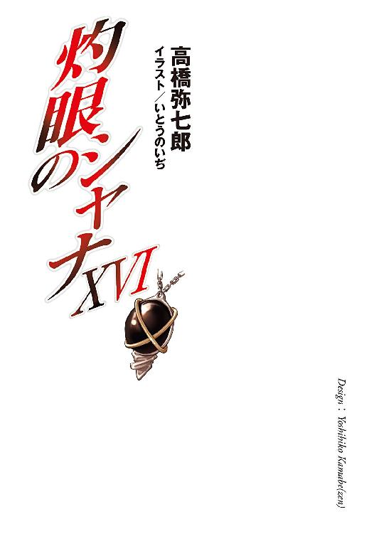
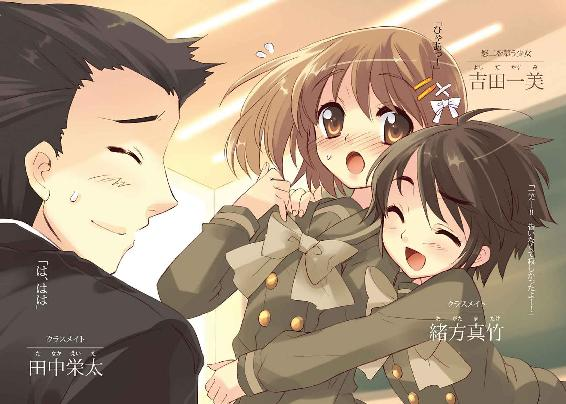
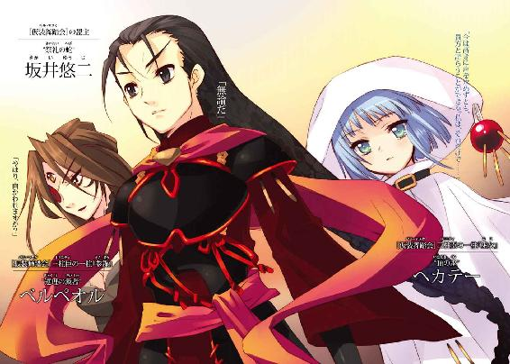
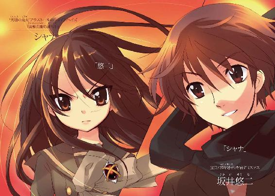
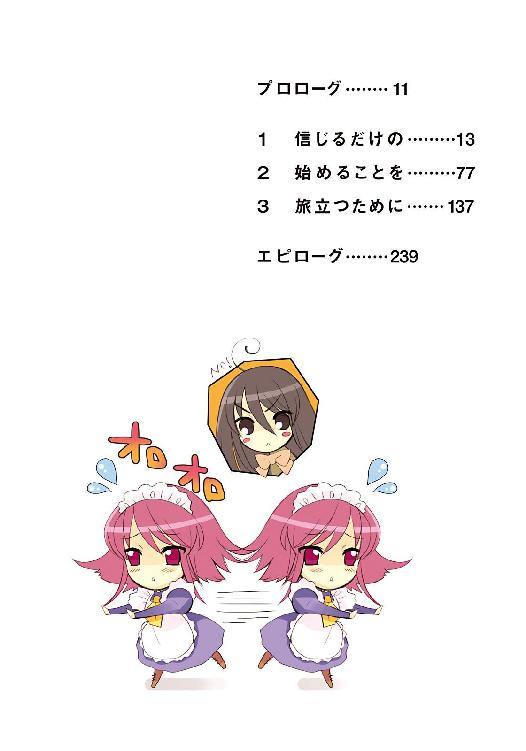
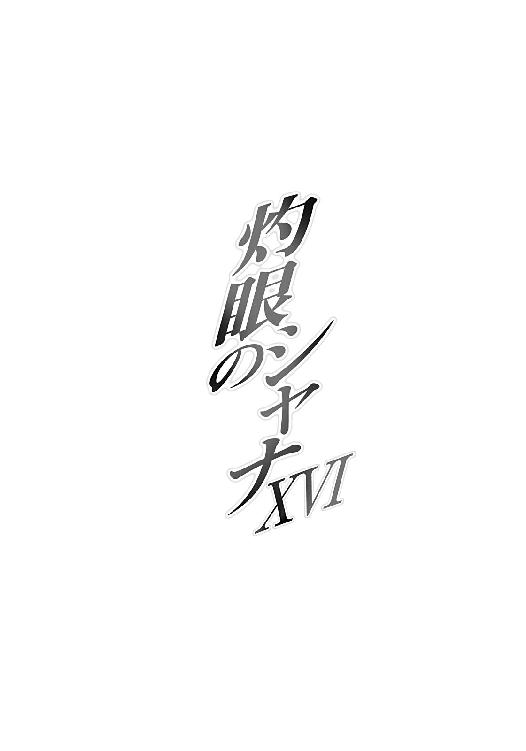
本書（電子版）に掲載されているコンテンツ（ソフトウェア／プログラム／データ／情報を含む）の著作権およびその他の権利は、すべて株式会社アスキー・メディアワークスおよび正当な権利を有する第三者に帰属しています。
法律の定めがある場合または権利者の明示的な承諾がある場合を除き、これらのコンテンツを複製・転載、改変・編集、翻案・翻訳、放送・出版、公衆送信（送信可能化を含む）・再配信、販売・頒布、貸与等に使用することはできません。
プロローグ
世の何処か。
望む限りに広がる星空、漆黒の水晶のような床、円形に配された白い柱、中心に浮かぶ簡素な祭壇、という幻想的な光景を広げる『星辰楼』。
この、移動要塞『星黎殿』内に設けられた中枢たる一空間に、硬質な靴音が四つ、響く。
床へと正反対な姿を映して歩く四人は、最後尾が要塞の守護者〝嵐蹄〟フェコルー。その前に並んで、三柱臣の参謀〝逆理の裁者〟ベルペオルと、同じく巫女〝頂の座〟ヘカテー。
そして、先頭を行くのが、彼女らの盟主。
四人はやがて、『星辰楼』の祭壇に行き当たった。
フェコルーは祭壇へは進まず、その場で止まり、片膝を突いて頭を垂れる。
三人だけが、競り上がる純白の石段を踏んだ。
祭壇の中央まで進んだ彼らは、星天へと吸い込まれるように、舞い上がる。
さらに二人が、星へと混じる姿で、宙に留まる。
盟主たる少年だけが、より高みを目指す。
鎧った凱甲も、靡く緩やかな衣も、全て緋色。
頭の後ろから髪のように伸びるのは、漆黒の竜尾。
と、その黒い双眸が、不在の象徴たる空座を射止めた。
鋭く大きく身を翻して己が居所、白い石造りの玉座に着く。
一同を睥睨して、また星天を見上げて、少年は一言、命を下す。
「これより『星黎殿』は、進路を西に取る」
遠く深い声は、少年のそれと重なり、響いていた。
１ 信じるだけの
御崎市という街がある。
多くの人々が、欠けた街だった。
ただ死んだ、というわけではない。
喰われて、消えていた。
本来、世界に在ったはずのモノが、その根源の力たる〝存在の力〟を喰われ、いなかったことにされたのだった。ゆえに、その欠落は誰にも気付かれず、忘れ去られていた。
人々を喰らった者の総称を、〝紅世の徒〟といった。
この世の『歩いてゆけない隣』から渡り来た、異界の住人たちだった。彼らは、人々を喰らって得た〝存在の力〟で己を顕し、また自在に操ることで在り得ない不思議を現した。
御崎市は、一年にも満たない間に、その襲来を幾度も受けていた。
結果、本来在ったはずのモノが欠けたことで起きる『世界の歪み』は増大し続けた。歪みを均す力を持つ『調律師』による緩和もあって、切迫した危機こそ去っていたが......喰われ、消え、忘れ去られ、欠け落ちたモノは、二度と戻ってこない。
その中に、とある一人の少年もいた。
彼は今、御崎市にいない。
正月の声もようやく薄れた、一月八日の早朝。
不自然な光景が、御崎市西部、住宅地の一隅にある。
坂井、という表札のかかった家の庭で、
「──っ！」
シュ、と音も微かに枝が奔った。
鈍い痛みすら覚える寒気の中、体操服姿の少女が、左手に取った短い枝を振っている。
一人で。
「──っ！」
続いて姿勢を低く変え、鋭く突きを繰り出す。
尖端が弾丸のように寒気を貫き、空の一点で止まった。と思えた瞬間、それは真下に走って地面スレスレへと振り下ろされる。が、今度も止まらない。勢いを減じることなく、本来持ち主が在った空間へと、そのまま一回転する。
持ち主の方は、宙でアクロバットのように縦回転して、右の踵による浴びせ蹴りを放っていた。無駄に地面を打たず、静かに、素早く、綺麗に着地して、左の膝を限界まで曲げる。着地で殺した衝撃をいっぱいに溜め込んだそれを、伸び上がることで開放した。
「──った！」
遂に本命の一撃、再び地面スレスレにあった枝が、今までの数倍という速さで空を切る。
「......」
少女は終点の姿勢で止まり、自身の動作、枝が作った殺界の流れと広がりを検証した。
いつしか、一人稽古にも慣れている、と感じつつも、また感ずればこそ、より冷徹に自己を律して表に出るものを抑える。他のやり方を、少女は知らなかった。
自分の日常から欠け落ちたモノ──今立つ対面の、空白。
その大きさ深さに引き摺られないよう、しっかり確固と立つ。
と、少女の傍ら、
「シャナちゃん、そろそろ時間よ」
縁側も兼ねる掃き出し窓が開いて、和やかな女性の声がかかった。
屹立が、ようやく張り詰めていたものを緩める。
「ん」
短く答えて、シャナ、と呼ばれた少女は縁側で靴を揃えて脱ぎ、家の中に入った。
居間である部屋の中央、テーブル上には、ミルクと砂糖をたっぷり入れた熱々の紅茶、湯気を上げるおしぼりが、一つずつ。
「......」
シャナは、それらを手に取らず、じっと見つめた。
「ふふ、シャナちゃんが飛んだり跳ねたりしてると、ただでさえ狭い家の庭が箱庭みたい」
言って、台所から暖簾を潜って入ってきたのは、坂井千草。
海外に単身赴任している夫・貫太郎の留守を預かる専業主婦である。
「もっと広いところでやった方が......あ、でもそれだと、毎朝遊びに来てもらう理由がなくなっちゃうわね。一人だと、どんな爽やかな朝でも寂しいもの」
「──、──」
シャナは言いかけて、踏み止まり......思った通りの言葉を、別の意味で返した。
「一人じゃない」
「そうね。この子が生まれたら、もっと賑やかになるわ」
当然、千草は別の意味で受け取り、自分のお腹を愛おしげに撫でた。
膨らみも未だ微か、というそこには、新たな命が宿っている。
その命が、どんな名を授かるのか、シャナは訊いていない。
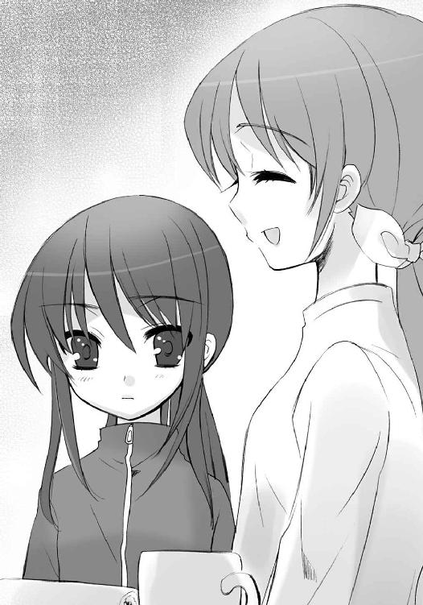
彼女ら夫婦が、どのような意味を込めて子供に名を付けるか、知っていた。だからこそ、訊けなかった。そこにもし、ある文字が入っていたら......。
千草は時計に目をやり、少女を促す。
「さ、今日から新学期でしょ、早めに支度しなきゃ」
「うん」
頷きに表情を隠したシャナは、おしぼりで乱暴に手と顔を拭うと、まだ熱い紅茶を一息に飲み干した。
その豪快さを千草はクスリと笑い、
「シャナちゃんったら、もう」
置かれたおしぼりを取って、ミルクの輪を作る小さな唇を軽く撫でた。そこから一連の手馴れた作業として、少女の身をクルリと半回転させて、背中を押す。
「さ、次はお風呂。外側から温まってらっしゃい」
「ん」
今度は照れ隠しとして、シャナは短く答えていた。
近しく触れ合うこの二人に、血の繋がりはない。
法的な意味での親子関係があるわけでもない。
なんらの接点も、今は持っていなかった。
そんな二人は、しかし何故か非常に親しい、まるで親子のような間柄だった。
いかにも不自然な在り様だったが、事実として、そういうことになっていた。
二人を介していたモノが一つ、欠落した。
その結果として、今の在り様が残されていた。
千草は不自然さを自覚できず、シャナはできた。
シャナは、世の常の人間ではなかったからである。
彼女は世界のバランスを守るため、世の陰に跋扈する〝紅世の徒〟を討滅する異能者・フレイムヘイズの一人だった。称号は、『炎髪灼眼の討ち手』。この街で暮らすため偽装した名は、平井ゆかり。仮の住まいは、隣町にあるマンションの一室。
千草は前の二項を知らず、後の二項だけを知っている。
シャナも、知らせようとはしなかった。
二人を介していたモノ、欠落したモノが、千草の息子だったからである。
正確には、息子本人ではない。かつてこの街を襲った〝紅世の王〟一味に喰われた息子の残り滓。すぐに消えるはずの代替物だった。
異能者としての総称、使命を遂行する者としての称号しか持っていなかった少女は、その代替物から一個の存在としての『シャナ』という名前を貰い、共に幾つかの戦いを経、共に幾らかの時を過ごし......そして、ある時突然、失った。
気付けば、彼女の周りから、代替物の痕跡が消え失せていた。
十二月二十四日、クリスマスイブのことだった。
「......」
居間から廊下に出たシャナは、ここ二週間余の習慣として、前にある階段を見上げた。上がった先には、何度も駆け込んだり、外のベランダから出入りしていた部屋がある。
今、そこは空っぽになっていた。
かつて自分が大太刀を突き立てた跡、それだけが部屋の中央にぽつんと残された光景を初めて見たとき、彼女は数秒、自失した。自失してすぐ、空っぽの中に欠落の原因、手がかりが残されていないか、必死になって探した。まるで代替物そのものを探すように。
が、なにも、なにも、なかった。
以来、部屋には入っていない。入る理由がなかった。共に代替物の周囲に在った者たちが訪れても、案内するだけで自分は入らなかった。入ることを拒んだ。
「シャナ」
胸元に下がる、黒い宝石に交叉する金の輪を意匠したペンダント、神器〝コキュートス〟から、彼女と契約し異能の力を与える〝紅世の王〟、魔神〝天壌の劫火〟アラストールが小さく促す。これも、ここしばらくの習慣だった。
「ん」
また、短く頷いて返す。
彼が、自分に付けられた名前を自然と呼ぶようになったのは、一体いつからだったか。
脱衣所の戸を開けながら、今さらのように考える。
この街に来るまで、彼にフレイムヘイズ『炎髪灼眼の討ち手』を指す言葉は不要だった。他と区別して呼ぶことが、他を交えて会話することが、そもそも稀だったからである。ゆえに、最初は互いに無用のもの、以上に煩わしいとさえ思っていたはずだった。
それがいつの間にか、呼ばれることに慣れ、呼ぶことに慣れ、愛着以上の、ここに在る少女の存在を定義する一部とすら認識するようになっている。
名を呼ぶというだけの行動が、概念に変化を及ぼしたのか......己というものの不思議さを思いつつ、シャナはアラストールの意思を表出させるペンダント〝コキュートス〟を外した。それを風呂場脇に積まれたバスタオルの下に押し込み、素早く衣服を脱ぎ、傍らの籠に放り入れる、という入浴の手順も、既に無意識の内に行っている。
考え、感じていることは、
もう不意な用事で脱衣所に入って来られることに警戒しなくてもいい。
入浴中に洗面台で顔を洗う無神経さに文句を飛ばす手間も取られない。
千草と一緒に、それらを後で言い咎め、とっちめる必要もなくなった。
そんな、事々の自覚と、うそ寒い身軽さ。
なにもかもを振り払うように、足早に浴室に入る。
すぐさまシャワーのノブを捻って、お湯になるのも待たず、水を頭から被った。降りかかる冷たさに全てが弾けて、訪れる温かさが全てをぼやかしてゆく。
頬を伝うものの中に、水以外のものは、一滴たりと混じっていない。
三学期の初日ということもあり、始業前の市立御崎高校一年二組の教室は、常にも増してハイテンションな喧騒に湧き返っている。
「いよっす！」「おはよう」「あけましておめでとー」「はい、おめでとーさん」「おっはよーっ！」「おう」「おひさー」「四日ぶりで、なーにがオヒサだっつーの」
等の、時を置いて顔を合わせる者同士の挨拶、あるいは、
「ねえねえ、どっかいった？」「うち、ケチでさあ......初詣の御崎神社だけ」「ふふ、私なんかハワイよ、ハ・ワ・イ」「はいはい、今朝三回目」「俺なんかカンペキ寝正月」「俺もー」
等の、冬休みと正月の土産話が、そこここに行き交っていた。
その中、より高らかに元気よい声で、
「じゃーん！ どう？」
緒方真竹が開けた菓子折りを差し出していた。
ごくごく平凡な、薄紙で包装された饅頭が二十前後、箱の中に並んでいる。微かなチョコレートの香りが、珍しいと言えなくもない。
差し出された田中栄太は、いま二つほどノリの悪い表情で返す。
「どう、って......今どき饅頭で言われてもな」
「なによ、せっかく人がお土産に、って持ってきたげたのに」
つれない反応に、緒方は頬を膨らませた。
田中は慌てて謝る。
「すまんすまん。やっぱ、ずっと田舎に帰ってたんだな」
「お母さんの田舎だから、帰る、ってのは少し違うけどね」
彼女自身は、生まれも育ちも御崎市である。
「親戚の付き合いで、色んな行事とか挨拶に引っ張りまわされて、もう大変。田舎って、そういうの多いのよねー。一昨日、帰ってくるまで電話の一つもする暇なかったんだから」
田中は再び、菓子折りに目を落とす。
「で、そんとき言ってた『お楽しみ』がコレってわけか。まあ、美味そうだけど、朝っぱらから渡すようなもんか？」
「今日は始業式だけで昼前にお開きでしょ？ だから先に配っとこーと思って......あれ？」
言いかけて、緒方は教室を見渡す。
その仕草に、
「！」
田中は期待した。
が、
「池君、いないね」
緒方は別の、クラスのスーパーヒーロー『メガネマン』こと池速人の名を口にする。
「いつもなら、なにも言わなくてもパパッと配ってくれるのに」
「池なら生徒会室だろ。三学期になって、生徒会も一、二年生メインに引き継ぎしたからな。あいつも色々と忙しくなってんだよ」
自分の落胆を顔に出さないよう気を付けて、田中は説明した。幸い、彼女は代わりの、職員室からプリントを持ってきたらしい少女に目を留めている。
「あ、一美！ お饅頭あるよー！」
友達の頷きをもらうと、緒方は菓子折りを置いて頬杖を突いた。ふう、と小さな溜め息が、その口から漏れる。
「シャナちゃんは......鞄もないから、まだ来てないのかな。佐藤も転校延ばしたのに休みだっていうし、なんだか皆、新学期早々冴えないわねえ」
「そう、だな」
彼女ら二人の中学時代からの友人、お軽い美（を付けてもいい）少年・佐藤啓作は本来、三学期から遠い県外の名門校へと転校する予定だった。それが突然、彼曰く『手続き上の問題』で新年度まで延期となっている。
結果、晦日にいつもの皆で集まって開くはずだった、彼のお別れ会も兼ねたパーティは中止となり──池と田中に急な用事ができた、という他の理由もある──緒方は早め長めの帰省を家族と共にすることとなった。
そんなこんなで今日、やっと皆が二週間ぶりに顔を揃える、と喜び勇んで饅頭まで持ってきたのに、この有様。彼女としては全く、出鼻を挫かれた心持だった。溜め息の一つも出ようというものである。
田中は、そんな彼女に、とある一つの事柄を問いかけ、確かめたい衝動に駆られる。
「──」
教室内の様子を一目見れば、無駄であることは分かりきっていた。現に彼女が探した『皆』も、たったあれだけだった。しかし、それでもなお、一縷の望みを絆に託して、問いかけ、確かめたかった。
「──ォ」
オガちゃん、と声の出かけたところに、
「おはよう、緒方さん、田中君」
プリントを教壇に置いた吉田一美がやってきた。
緒方は突然、跳ねるように抱きついて友達を出迎える。
「一美ー!!」
「ひゃあっ！」
思わず叫んだ吉田は、
「皆いなくて寂しかったよー！」
「っ!?」
次にかけられた言葉にギョッとなって、思わず田中を見た。
その田中は首を僅かに振って、自分も抱いたはずの期待を否定する。
もちろん緒方はその意味にも仕草にも気付かない。
「シャナちゃんは来てないし、佐藤は欠席、池君は生徒会でしょ。おまけに一美までいなかったから──」
「田中と二人っきりでした！」
傍らの席にあった中村公子が、勝手に言葉を継いで囃した。
「ちょっ、な、なに言って」
赤面、狼狽する緒方に摺り寄ると、打って変わって猫なで声になる。
「ねえ、私にもお饅頭チョーダイ。今朝、なーんにも食べてなくってさあ」
「はあ？ 今食べる気なの？」
その向かい、後ろ向きに座る藤田晴美が呆れ声を出した。ついでに仕切り屋のクラス副委員らしく、緒方の方にも指摘する。
「オガちゃんも、そんなの堂々と広げてたら怒られんじゃないの？」
「ゴホン、その点は大丈夫」
咳払い一つ、立ち直った緒方は、なぜか得意げに胸を張った。
「部活の朝錬後に、職員室にも届けてあんの。センセたちも皆で食べてたから、もし見つかっても、こっちだけどうこう言われることないでしょ」
「ははー、大した策士様ですこと」
藤田は笑って肩をすくめる。
一方の中村は、早速手を伸ばした。
「じゃあ遠慮なく」
「一個だけよ」
「分かってるってば」
「じゃあ私も貰っちゃおっかなー」
田中には、少女らの明るい遣り取りが、まるで遠い景色のように感じられた。同じ面持ちの吉田と目が合って、お互い自然と、教室の中ほどを見やる。
そこには、とあるモノが欠けていた。
不意に、緒方が声を上げる。
「あ、池君！」
二人が目を転じた先、引き戸を開けて、一人の少年が入ってきた。一年二組のクラス委員にして、頼られる対象を徐々にクラスの外に広げつつあるお助けヒーロー『メガネマン』こと池速人である。
その彼と吉田、
「......」
「......」
二人、自然に目を合わせ、また不自然に逸らした。
なにも知らない緒方が、明るく呼び掛ける。
「池君、ちょっとこっち来てー」
池は一瞬だけ表情に揺らぎを見せて、すぐ平静さを取り戻した。久々に会う面々へと、軽い新年の挨拶を放る。
「あけましておめでとう。あ、そのお土産、職員室のと同じやつ」
「え、もう食べたの？」
驚く緒方に言う姿は、全く常の、冷静にして温厚な彼そのものである。
「うん。たった今、始業式の準備でお使いに行ってさ、一つ貰ったんだ。皮がチョコ風味ってのは面白い取り合わせだね。名物なの？」
「まあね。選んだのはパッケージに描かれてた狸が可愛かったからだけど」
「可愛い狸、ねえ」
職員室で見たそれは、文字を崩した大雑把な形だったと記憶しているが、いちいち異論を唱えるのも馬鹿らしい。どのみち女の子のセンスは分からない、と無難な感想だけを返す。
「まあ、洒落たデザインではあった、かな」
ひとしきり話してから、池は改めて吉田に向き合った。
「おめでとう、吉田さん」
「あけましておめでとう、池君」
いつもと同じ、親しい者同士の挨拶。
それが、こんなにも空々しく響くのか、と二人は胸に痛感した。愛想笑いすら作れず、曖昧な態度と表情を鏡のように掲げ合うしかない。
当然のこと、であったかもしれない。
池は、去る十二月二十四日、吉田に自分の想いを告白していた。
吉田は、そんな池の想いを受け止め、しかし応えられなかった。
晦日のパーティーが中止になったこともあり、二人はそれ以来、半ば辛さ、半ば恐れから、互いに接する機会を持っていなかった。二週間という空白に、あるいは緩和と回復のあることを望んでいた関係は、やはり別れたときのまま......出会うことでしか融け得ない、内包したものを表さない氷だった。
二人は勿論、それらのことを余人に漏らしたりはしていない。
しかしここに在る少女らは、ただ少女であるがゆえに、それらの空気に敏感だった。もっとも、感じ取った結果としての行動は三者三様。即ち、
「あのさフガッ!?」
無遠慮に、好奇心から尋ねかけた中村を、
「そ、そろそろ授業始まるね」
バン、と口を平手で叩くように藤田が押さえ、
「......」
緒方は無言で、二人を気遣わしげに見上げたのだった。
田中だけが、三人の反応や行為の意味が分からず、怪訝な表情になる。
「？」
「そうだね、そろそろ席についとこうか」
池は有り難く藤田のフォローを受け、辛うじて場を誤魔化した。
吉田も救われた思いで、
「うん。緒方さん、お土産は後で──」
言いかけたとき、ガラリと引き戸が開く。
振り向く前に感じられるほどの緊迫が、教室の中に走った。
一年二組の生徒たちにとって未知のものではない、とはいえ久しく感じなかった、硬直と萎縮を伴う戦慄。誰もがその場で射竦められていた。他の教室に沸き返る、戸の開く前と変わらない喧騒が、今在る光景の異常性を、より強調する。
この雰囲気を作り出したのは言うまでもない、戸口に立ったまま、なぜか入って来ようとしない、小柄な少女である。
「......」
怒っているのか悲しんでいるのか判然としない、クラスメイトたちが初めて見る表情を、少女は浮かべていた。まるで見えない不破の壁でもあるかのように、ただ立ち尽くしている。その姿は、苦悩に頑と耐える強者とも、駄々をこねて座り込む子供とも見えた。
誰もがなにもなし得ない、数秒の沈黙を、
「シャナちゃん」
ただ一人の例外たる少女、吉田一美が、辛うじて破った。
シャナはなおも立ち尽くしたまま、自分に呼びかけた友達、自分と秘密や想いを共有する恋敵に、求めるような視線を向けた。
が、吉田には、なにもしてやれなかった。
できたのは、友達の求めから顔を背け、恋敵にとっても自分にとっても、受け入れ難い事実を示すこと──教室の中ほどを見やる、それだけだった。
シャナも、苦しみを押して、視線を追った。
「......」
予想されていた現実、希望を容赦なく砕く事実が、厳然と彼女を出迎える。
いつの間にか見慣れていた、彼女にとっての日常となっていたそこに、明らかな記憶との齟齬、確かな思い出との相違が、ある。客観的な状況として表現するならば、ない。
教室から一つ、席が減っていた。
御崎市東部、大きな屋敷の立ち並ぶ旧住宅地でも、一際広く大きな佐藤家。
その室内バーに居候しているフレイムヘイズ、『弔詞の詠み手』マージョリー・ドーは、酒に酔ってソファに寝転ぶ、という常の格好のまま、事実上の家主である少年、佐藤啓作が出て行ったドアを眺めていた。
傍らに置かれた、画板を纏めたようなドでかい本、神器〝グリモア〟が、軽薄な笑いにガタガタと揺れる。
「ヒッヒヒ、まったくタイミングが良いんだか悪いんだか。どーも最近、ただの偶然にも意味があるように勘繰っちまうなあ」
彼女と契約し異能の力を与える〝紅世の王〟、〝蹂躙の爪牙〟マルコシアスの声に、マージョリーは深い溜め息で答えた。
「そうね。受け取る側をそんな風に惑わせる、ってことなら、偶然には間違いなく悪意が込められてるわ」
表情を隠すように、顔へと添えた二の腕の陰から、傍らのテーブルを見やる。
分厚いガラス板の上に載っているのは、口の破れた空の封筒。
今朝方届いた書類の抜け殻だった。
差出人は、旅行好きなら稀に聞くこともある、ヨーロッパの小さな運行会社だが、それは世間向けの偽装に過ぎない。実態は、世界中に謀報と行路の網を張り巡らせるフレイムヘイズの情報交換・支援施設たる『外界宿』の通信関連部署だった。
届けられた書類は、昨年末、一人の少年が消えたことに衝撃を受けた佐藤が、マージョリーと相談──実際は懇願に近かったが──して決めた結果の表れ。あるいは、この三学期から県外の名門校へと編入する、という彼本来の予定を遅らせた原因。
そもそも、この転校には、不仲だった親元で暮らすことになった、という表向きのそれとは違う、真の目的があった。マージョリーのために、勉強から人脈作りまで人間としてのクラスアップを図る、という彼なりに考え抜いた末の方策だったのである。
その予定が、友人の失踪（消滅とは決して思わなかった）という不測の事件で狂った。というより、繰り上がった。どこまでも未熟な少年である彼は、もはや己の成長すら待っていられなくなった。戦力・助力者として当てにされるされないではなく、危機感と焦燥感、さらには友情から、なにかをせずにはいられなくなったのである。
マージョリーも無論、悠長に構えていられる状況ではなくなったことを理解していた。
どころか、まさに彼女こそが、この街に在る他二名のフレイムヘイズら以上に、起きた事実の重さを、より平明に捉えていたかもしれなかった。
あの〝ミステス〟の少年の欠落（彼女は事実として、そう認識する）を、正負いずれの感情も介さず、ただ機能と才幹、特性のみで測っていたからである。
機能とは、その日の内に消耗した〝存在の力〟を午前零時に完全回復させ、討ち手らをも凌ぐほど鋭敏に気配や力を探知判別する──即ち『零時迷子』を宿した宝の蔵としての能力。
才幹とは、あらゆる危難の局面に際し異常なまでに冷静となる、敵の巡らせた謀や隠された意図を看破し的確な打開策を見出し考案する──即ち一個の人間としての資質。
柄にもなく共同戦線を張ることの多かったこの街で、一筋縄ではいかない〝徒〟や〝王〟らを向こうに回して戦い抜けた、あるいは守り抜けた要因の、彼は間違いない大きな一つであると、マージョリーは率直に認めていた。
ゆえに、なればこそ、彼の戦線離脱は深刻だった。しかも、それが［仮装舞踏会］、あの鬼謀の〝王〟によるものだろう企みの一環となれば、討ち手側の蒙った見えない部分の損失は、より大きく感じられようというものである。
（下手すると、この御崎市が現代の『闘争の渦』になる、あるいは既にそうなっている可能性まであるってんだもの......嫌んなっちゃうわ）
マージョリーは、酒臭い溜め息を吐く。その端に、炎のような怒りが混じった。
（それに、今度の件だって、絶対に奴が絡んでいる）
彼女が測っていた残り一つ。
特性とは、謎の自在式を打ち込まれ変質した『零時迷子』が内包するようになったらしい、彼女の仇敵の手がかり──即ち『銀』へと繋がる存在としての意義だった。
そうでなければ、元来気儘な彼女が、ここまで深く考えを巡らせたりはしない。
（もう、当て所もなくウロウロしていられる情勢じゃない......掴んだ尻尾を、せいぜい離さないよう慎重に見極めてから動かないと）
今回、佐藤啓作の意向を汲む結果となったのも、まず当分は御崎市の情勢を監視する、という他二名との申し合わせがあってこその処置である。佐藤自身にとってはもちろんそうだが、マージョリーらにとっても、今後の行動の幅を広げる地固め、という一面があった。
そうして年末、幾らかの私信も含めた書簡を外界宿に送り、待つこと二週間弱。
三学期が始まる前日、つまり昨日、その結果が届いた。
佐藤にとっては全く喜ばしい、一つの報せとして。
マルコシアスが珍しく、小声で漏らす。
「ホントーに、これで良かったのかねえ」
受ける印象の軽薄さとは裏腹に、使命に関してシビアな考え方を持つ彼は、元々佐藤を深入りさせることには消極的だった。
マージョリーの方は、不分明な表情をさらに腕で隠して返す。
「今度のことも、一つの試験よ。ホントーに私の言いつけを守れるかどうかの、ね」
「こーゆー場合は、どっちに転ぶのを願えやいいのか、判断に迷うぜ」
マルコシアスの戸惑いには、しかしハッキリした声で答える。
「決まってるじゃない。せめて生き残る方に、よ」
田中栄太は一人、足取りも重く帰途に着いていた。
お土産の饅頭を、休んでいた佐藤や、その家に居候するマージョリーへと届ける役目を緒方に頼んで逃げてきたのである。急用があると言い訳したが、果たして信じてくれたかどうか。
（オガちゃんも、薄々気付いてるかな......俺が姐さんを避けてるってこと）
彼の家は、佐藤や緒方と同じ、御崎市東部の旧住宅地にある。ゆえに三人は中学も同じで、特に佐藤とは一緒に、悪い意味で暴れ回っていた。高校に入ってからは、そういうことからも卒業していたが、仲の良い相棒として事に当たる関係に変わりはなかった。
ともに憧憬を抱いた女傑『弔詞の詠み手』マージョリー・ドーの子分として〝紅世の徒〟との戦いに加わる、という異常事態の中にあっても。
（いつまでも逃げ回ってばかりいられない......分かってるんだ）
その関係が、やや変質したのは、三ヶ月ほど前のこと。
とある戦いにおいて、緒方が打ち砕かれる様を目の当たりにしてからだった。その惨劇は、因果孤立空間『封絶』の中での出来事であり、後に復元もされて事なきを得ていたが、目に焼きついた恐怖の光景は、彼の精神の心棒をポッキリと折っていた。戦いに面すると必ず、あの光景が襲って来て、心身を縮こまらせてしまうのである。どう対処しようもない、治るのかどうかも分からない、深い深い傷だった。
そんな情けない自分に対する怒りと失望が、マージョリーの前に立たせることを、未だ彼に拒ませていた。昨年末に起きた事件では、友人の危機という緊急事態だったこともあり、自身を鼓舞してなんとか急報を齎すこともできたが、根本的な解決には当然、至っていない。
（どうすればいいか、分かってる......でも、俺は──）
真っ直ぐ過ぎる少年は、悩むときも安易に妥協せず、直下に落ちてしまう。解決のために助けを求めることもない。自分の問題だから、と背に負うのみだった。
すでに何ヶ月も繰り返している自問自答を、顔の薄皮一枚下に隠して、彼は自分の家のある筋に入る。と、
「よう」
「佐藤!?」
その曲がり際の塀に、背をもたせ掛けていた友人と出くわした。
どうやら、彼の帰宅を待っていたものらしい。普通の外出着であるところから、登校途中でサボったのではない、最初から行く気のなかったことが分かる。表情はどことなく晴れやかであり、また寂しげでもあった。
その様子に胸騒ぎを覚えた田中は、つい意味もなくキツい詰問口調で尋ねる。
「今日は用事があるから休むんじゃなかったのか？」
「ああ、そっちの準備も終わったからさ、まずお前に挨拶しとこうかなって」
「準備......？」
悪びれない答えに、胸騒ぎが大きくなる。それは、どちらかといえば気持ち悪い......普段の彼なら嫌う類の、しかし何故か今は自ら大きく開放したくなるような、奇妙な胸騒ぎだった。
どこまで察しているのか、佐藤は構わず平然と、自分の行く道を告げる。
「明日、俺は東京の外界宿に向かう」
「!!」
衝撃の中、田中は胸騒ぎの性質を理解した。旅立つ親友に抱いたものは、心配などでは決してない。立ち止まっている自分を置いて、決定的な一歩を先に踏み出されたことへの悔しさと羨ましさ......つまり、嫉妬なのだった。
佐藤は、背を塀から離し、親友の前に立つ。
「こうする理由は、言わなくても分かるよな」
「......ああ」
田中も、重苦しい声で肯定した。
二人は昨年末、忘れられない事件に遭遇した。
友人が、行方不明になったのである。
しかも、ただいなくなったというだけではない。まるで他のトーチと同じように、他者の記憶から抜け落ち、痕跡が掻き消えるという、存在の喪失だった。
友人は幸い『零時迷子』という宝具を身に宿した〝ミステス〟で消える心配はない、普通の人間と何ら変わるところのない少年である、だからこそ今までもこれからも同じように付き合う、一緒に戦い助けたり助けられたりする......しかし、一つの戦いが終わった翌日、それらが全くの油断であり、錯覚であったことを、思い知らされた。
シャナ──彼と最も親しかったはずの、フレイムヘイズの少女によって。
彼女によって密かに連れて行かれた坂井家のベランダから中を覗いて驚愕し、慌てて帰った自分の部屋で掘り出した写真からその姿がなくなっていることに恐怖した。
フレイムヘイズらと日常的に触れ合い、『この世の本当のこと』を理解している彼ら二人だったからこそ、覚えている。逆に言えば、その記憶の中にしか、残っていなかった。
ただ、動揺した彼らに、シャナは一つのものを差し出し、示していた。
中身こそ見せてはくれなかったが、それは彼が無事な証なのだという。
彼が消えたのなら、これは返ってきたりなどしない、と彼女は言った。
友達として、言ってくれた。
佐藤は彼女に応えて、己の道を選んだ。
自分は未だここで、なにもできずにいる。
全て分かっているからこそ、田中は嫉妬を覚えていた。
その佐藤は平然と、嫉妬される理由を口にする。
「こんなときに一人だけ抜け抜けと、この街から逃げ出すわけにもいかない。といって、ただいるだけでも意味がないだろうからな......ほら」
「......？」
彼がポケットから取り出したのは、数枚の紙束。
細かな、日本語によるそれは、佐藤啓作という人間についての調査報告書だった。本人だけではなく、係累に知人、近隣住民から行きつけのコンビニ店員まで、ありとあらゆる関係者に不適正な背後関係がないか、綿密に行われた身辺調査の結果が、延々書き綴ってある。
その最後の行を、摘んだ彼の指が示していた。
書面に曰く、
『佐藤啓作氏の身辺に、不適正な影響の存在、および危険性の該当例は見られず。仍、初等連絡員への任命、および口頭による特務事項の報告派遣を承認する』
つまり、マージョリーの名代として、外界宿への派遣が認められたのだった。
「詳しい報告自体は、あの直後にカルメルさんがやったらしいけど......マージョリーさんは、とりあえず行くだけ行って、目指す場所を自分の目で確認して来い、ってさ」
「そう、か」
田中は、嫉妬の暗さに引き摺られていると自覚して、それでも声に表さざるを得なかった。
長くつるんできた佐藤は当然、友人の内心を知って、それでも自分の話を続ける。
「実際、行くところは外界宿の、分室っつーの？ そんな所で、東京の本拠地はペーペーの俺には秘密らしいけどな。フレイムヘイズの一人にでも会えりゃ上出来だろう」
「それで」
「そこも、やってんのはマージョリーさんと馴染みの人間なんだとさ。身辺調査の結果は当然として、俺があっさりニンメイされたのも、その辺りのコネかな、とか思ったり」
「それで俺に」
知ってなお話す親友の酷さに、遂に田中は我慢ができなくなった。
「俺に、どうしろ、ってんだ」
「......」
佐藤は挑発的な声と態度で、田中に額を付き合わせる。
「......どうしろ、だって？」
大柄な田中を相手にした、まるで掴みかかるように伸び上がる不自然な姿勢である。
「俺は『一緒に来い』って誘いに来たわけじゃないぞ。連れションじゃあるまいし」
言って、自分の下手な冗談で笑った。
「ただ、俺はこうする、って言いに来ただけだ」
晴れやかに、寂しげに。
田中は、なによりその表情に抱いた感情を、
「羨ましいか？」
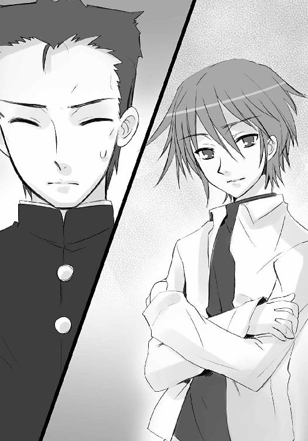
「!!」
正確に指摘され、声を失った。
言った佐藤は、微笑の種類を変える。
「良かったよ、そう思ってくれて」
「え？」
今度の微笑は、安堵であり、喜びでもあった。
「これでなにも思わなかったら、本当に道が分かれてただろうからな」
「佐藤」
言わせず佐藤は、親友の腕をポンと叩き、横を通り抜けていく。
「じゃあな。すぐに戻るから、その間、マージョリーさんのこと頼むぜ。バーの掃除、婆さんたちは遠慮して最低限しかやんねーからさ」
「佐藤！」
軽く手を振って立ち去る親友に、田中は名前だけを叫んでいだ。追いかけることも、それ以外を叫ぶこともできない自分に、より強い怒りと失望を感じながら。
この街に在る三人目のフレイムヘイズ、『万条の仕手』ヴィルヘルミナ・カルメルは、シャナが存在を割り込ませ、仮の姿とした平井ゆかりのマンションに同居している。
燃えるゴミの日が来る度、シュレッダーにかけた紙片入りの袋を山のように出すことを近所に不審がられる程、その手元には、外界宿から大量の書類が送付され続けている。
今も彼女は、給仕服の身をスチール製の執務机に付けて、山積みされた書類を分類、整理していた。その一通に目をやって、微かに険しい愁眉を開く。
「報告した案件についての返答が、各所から返ってきているようでありますな」
「危局認知」
その頭上、ヘッドドレス型の神器〝ペルソナ〟から、彼女に異能の力を与える〝紅世の王〟、〝夢幻の冠帯〟ティアマトーが状況を端的に説明する。
外界宿中枢も、彼女の送った報告書の重大性、その世界に及ぼす影響の危険性に、ようやく注意の目を向け始めたらしい。世界各地から、雑多とはいえ、幾らかの関連情報が集まり始めていた。
この数ヶ月、全世界の外界宿は、情報と統制を担っていた幕僚団『クーベリックのオーケストラ』、および交通網の管制と手配に当たっていた運行管理者『モンテヴェルディのコーロ』、双方の欠損による大混乱の渦中にあった。組織の主導権を巡り、実働部隊を抑えるフレイムヘイズ、組織の運営面を握る人間、双方して噛み合っていた不毛な権力闘争は、しかし昨今、俄かに収束の気配を見せつつあった。
重要拠点の損失が、既にそのような内輪の争いを許さないレベルにまで達していたことが、最大の理由である。名のあるフレイムヘイズが、幾人から幾十人と討ち果たされていく危機的状況は、無理矢理首を捻るように、組織中枢の目を互いから外部へと転換させた。
そうした時期に、シャナとヴィルヘルミナ、マージョリー連名による、まるで爆弾のような報告書が、外界宿暫定首班の地位に着いていたフレイムヘイズ、『震威の結い手』ゾフィー・サバリッシュの許へと届けられたのだった。
要点は二項。
一つは、謎多き宝具『零時迷子』を宿した〝ミステス〟が失踪したこと。
二つは、関与疑いなき組織が、世界最大級の〝徒〟の組織［仮装舞踏会］であること。
これらの報告によって、ようやく外界宿中枢は、各地の重要拠点を襲撃し続けていた一団に当たりを付けることとなった。今さら、という非難は当たらない。世に在る他の大集団から頭一つ二つ抜きん出た組織でありながら、薄々疑われる以上の注視を（ヴィルヘルミナらの報告を受けてもなお）受けなかった理由が、この組織には確かにあったのだった。
そもそも彼ら［仮装舞踏会］の本分は、フレイムヘイズにおける外界宿と同じ『情報交換と支援』である。構成員ではない〝徒〟の保護を始め、他組織との情勢分析の会合、討ち手らとかち合わない秘匿交通路の確保、渡り来たばかりの新参や若年者らに対する、この世で暮らすための訓令まで行っている。自ら進んで大規模な戦いを起こす動機には乏しかった。
また、組織を実質指揮する三柱臣の参謀〝逆理の裁者〟ベルペオルは、全ての企みに手が届く、と評される鬼謀の持ち主ではあったが、その印象どおり『陰』謀が活動の主体である。現在、世界中で起きているような、正面切っての戦いは彼女の流儀ではないはずだった。
現に、この組織は長く、自身による武力闘争と呼べるレベルの戦いを行っていない。遥か昔、盟主を失った痛恨の一戦以降、彼らの側から自発的に大規模な戦いを仕掛けた事例が絶無なのである。この事実が、外界宿の嫌疑から彼らを除外させていた、最大の事由だった。
そして、その盟主を失った以上、彼らには大きな戦いを挑む意味がない。敵の数を減らすための戦いを起こしても、世界の構造に変化など起きようはずもない。人員を損耗する一時的勝利は、互助共生組織である彼らにとって、むしろ害でさえあるのだった。
が、
危機的情勢下に齎されたシャナらの報告書は、その見方を一変させた。
三柱臣の内、世界を徘徊する将軍〝千変〟シュドナイが現れただけなら、なんの不思議もない。しかし、同じ場所に〝頂の座〟ヘカテーが、『星黎殿』鉄壁の守護者たる〝嵐蹄〟フェコルーまで帯同して、となれば、もう偶然では済まない。
彼女の目的が『零時迷子』という高度ながら半ば無視されていた秘宝への干渉であった、という点も含めれば、その出現にきな臭さを感じない者はいないだろう。
かてて加えて、［仮装舞踏会］の捜索猟兵と巡回士、および雇われの殺し屋〝壊刃〟サブラクによる大規模な攻撃が、『零時迷子』の〝ミステス〟失踪直前に起きている。
もはや、彼らの深い関与に疑問の余地はない。
組織ぐるみで、［仮装舞踏会］が動いている。
同時期に各地の重要拠点が襲撃を受けている。
ベルペオルの影を見るまでもない。外界宿中枢は、これら不気味な事実の認識でようやく、現在起きている異常事態を［仮装舞踏会］と結びつけて論じるようになった。
無論、シャナらの側としては、ヘカテー襲来から数ヶ月、しつこく警鐘を鳴らし続けていたわけだから、この再認識には憤りこそあれ、感心などするわけもない。
ひとまず、ゾフィーによる組織再編がようやく端緒に付いた、そのゾフィーの命によって御崎市に［仮装舞踏会］関連情報を優先的に振り分ける処置が取られた、これら二点を、勝ち得た辛うじての成果と思うしかなかった。
「とはいえ、情報精度の低さと、相変わらずの無駄な量については、今後の改善を待たねばならないようでありますな」
「着実漸進」
じっくりやれ、というパートナーの声にヴィルヘルミナは頷き、もう一つの懸案事項について纏めた書類に目を落とす。
「あとはこの、中国内陸で現地の外界宿が独自に小競り合いを始めたらしい、という情報の詳細を求めたいところ......欧州が内輪揉めしている間に、各地の統制が緩んだり、不審から非協力的になったりと、足並みの乱れは深刻なレベルに達しているようであります」
「情勢緊迫」
「む、こんなことでは〝逆理の裁者〟が本気で動き出したときに、対応しきれるか──」
言いつつ新たな封筒を開く、その耳に、
「ただいま」
数ヶ月で聞き慣れた、帰宅の挨拶が届く。
平静さを装って、しかし心底の土台を欠いたように虚ろな声だった。
その辛さを感じて、しかしヴィルヘルミナは鉄面皮を通す。同情も慰めも、少女にとっては侮辱にしかならないことは、育てた彼女が一番よく知っている。ゆえに、
「おかえりなさいませ」
こちらもあくまで平然と出迎える。
シャナは機械的な作業として靴を脱ぎ、スリッパを履いて、廊下を小さな食卓に向かう。
ヴィルヘルミナも襖を開けて、その後に続いた。今日学校であったことを、帰宅してすぐ食卓で報告する、と前もって決めていたのである。
両者、椅子に向かい合って座ると、シャナは前置きもなく、すぐに報告を始めた。
「席は消えてた。通常のトーチと同じ」
恬淡たる口調に、かえって痛々しさを感じたヴィルヘルミナだったが、それでもお互いのために、使命を疎かにすることはない。複雑な内心を隠して、簡潔に確認する。
「手紙に変化は？」
「──ない」
僅か、間を置いて、シャナは答えた。その手は、鞄に添えられている。
中に入っているのは、花のシールを張った、薄桃色の封筒。
封は切られ、中の手紙には一旦取り出された形跡も見られる。
十二月二十四日のクリスマス・イブ、シャナが吉田一美との勝負──別々の待ち合わせ場所で少年を待つ、という方式──に際して少年に送られた、所謂ラブレターだった。
その結果、少年は消えて、少年の宛名を記した手紙が、戻ってきた。
不可解な話、と言えた。
シャナの言ったように、宝具を宿したトーチ──〝ミステス〟としての彼の存在は、母を始め周囲の人々の記憶から掻き消え、存在の痕跡は何一つ残っていない。
彼のことを覚えているのは、フレイムヘイズであるシャナらと、長く彼女らと関わったごく少数の、『この世の本当のこと』を知らされた友人たちのみ。ごく普通の、喰われた人間の代替物、存在の残り滓たるトーチが消えたときの現象、そのままの結果である。
しかし、この手紙の宛名だけが、残っていた。
しかも、少女らの許へと、送り返されてきた。
仮に［仮装舞踏会］が『零時迷子』を奪取したとして、その入れ物でしかない〝ミステス〟の周辺事情に気を払ったりするわけがない。一体誰が、なんの理由で、数ある痕跡の中からこの手紙を選び、しかも送り返してきたのか。それとも、この行為にはなにか辛辣な罠でも隠されているのか。
考えれば考えるほど、疑えば疑うほど、謎の空虚は広がってゆく。
しかしシャナは逆に、この謎を一つの答えとして受け取っていた。
この手紙は希望なのだ、と。
あの時受けた衝撃の大きさの分だけ、強く信じた。
クリスマス・イブの夜、喪失の悪寒に駆られ、吉田一美を抱いて雪の空に飛び上がり、坂井家に舞い戻り、ベランダから彼の部屋を覗き込み、そこに──空白の部屋を見つけた、あの時の、衝撃の大きさの分だけ。
手紙が届いたのは、その翌日。
彼の生存を錯覚させ、こちらを撹乱する策略だとしたら、手紙一つに思わせぶりな痕跡を残すような半端はすまい。全てをそのままにするか、彼自身による便りを持ってきただろう。
だから、強く信じた。
この手紙は希望なのだ、と。
彼は消えてなどいない、と、
（──「でも、これ、なに......なんなの？」──）
返ってきた手紙を前に、惑乱の一歩手前にあった吉田一美にも、そう言った。
少年の失踪は、何らかの利用価値を敵に見出され、攫われただけなのだ、と。
（──「でも、でも、シャナちゃん」──）
ただ消されるような少年ではない、自分たちが誰よりもよく知っている、と。
もし一人だったら、彼女の冷徹な部分は、可能性の低さから否定しただろう。
（──「この、手紙が......その証......？」──）
しかし二人でなら、同じ想いを抱いた恋敵と一緒なら、信じることができた。
吉田一美も、そう告げられて、ようやく放心や惑乱を超え、涙を零していた。
（──「うん......私も、信じる......シャナちゃん」──）
シャナは、泣かなかった。泣くなら少年と再会してからにしよう、と決めた。
今在る彼女の頑なさは、迸る感情の濁流をせき止める、堤防の堅固さだった。
ヴィルヘルミナは、愛しい少女の見せる、そんな堅固さに辛い既視感を覚えて、しかし口調は努めて冷静に、事実だけを確認する。
「となると、やはりイレギュラーは、その手紙だけ、ということでありますな」
「奇怪現象」
ティアマトーに頷くシャナの胸元から、アラストールが訊く。
「今日の便で、なにか［仮装舞踏会］について分かったことは？」
「......残念ながら。送られてくるものは依然、外界宿襲撃についての断片情報が主で、『零時迷子』が絡むようなものは、特に」
「そう」
言って、シャナは立ち上がる。
もう、この後の行動は決まっていた。
着替えて、一風呂浴びたら、真夜中までヴィルヘルミナとともに情報の精査に当たる。真夜中になったら、マージョリーの許を訪ねて体力に影響のない程度、鍛錬に励む。そうして、最後に御崎市を巡回して異変の有無を確かめ、夜明け頃に、坂井家で朝の鍛錬を始める。
フレイムヘイズは、睡眠を取る必要がない。
ゆえに、肉体の機能としては十分、可能な行為である。
しかし、こんな常時動き詰めの生活は、人間であったときの記憶や習慣から、神経をパンクさせてしまう危険性を孕んでいた。心の休息は、超人にも必要なのである。
そうと分かっていながら、しかしシャナは断じて行う。
アラストールもヴィルヘルミナもティアマトーも、あえて止めなかった。
なにかをやっていない方が壊れてしまう、そんな危うさを、三人は少女の様子から感じていたのである。止め得ぬまま、そんな日々が正月越しに延々続いていた。
ヴィルヘルミナは、少女の背中を見て思い悩む。
（話すべきでありましょうか、あの情報を）
実のところ彼女には、少女の停滞を一押しする手がかり、あるいは突破口について心当たりがあった。あくまで可能性としての話であり、雲を掴むような作業となることも確実、そうしたとて成算もない戦いを強いられる、そんな心当たりが。
その源泉は、数百年前──〝髄の楼閣〟ガヴィダから放られた言葉。
（──「俺の『天道宮』と、奴らの『星黎殿』は、迂闊に近づけちゃいけねえ」──）
この、芸術に魅入られた〝紅世の王〟は、複数の人間と共に、世にある中で最大の、対となる二つの宝具を作った。即ち、移動城砦『天道宮』と移動要塞『星黎殿』である。
人間を喰らうことに倦んでいた彼は［仮装舞踏会］と袂を分かつ、その代償として『星黎殿』をベルペオルらに差し出し、もう片方の『天道宮』を己の隠居所と定めた。
そうして『星黎殿』は［仮装舞踏会］の本拠地となり、『天道宮』は後に、ヴィルヘルミナやアラストール、もう一人の〝王〟らによって、新たな『炎髪灼眼の討ち手』を育て上げる巨大な揺り籠となった（今は海中に没している）。
先の言葉は、背中を預け合った戦友とともに、その移動城砦を借り受けに行った際、聞かされたものである。実際、無事借り受けた後、言葉通りに移動ルートから一定範囲を迂回して目的地に向かった。
それが今、
全く意味を違えた鍵として思い出されたのだった。
（しかし、もし伝えれば暴走は必至）
と分かるほどには、ヴィルヘルミナも少女と少年の絆の強さについて認めている。認めたくは、なかったが。アラストールもその言葉を聞いていながら、未だ告げていないのは、同じ懸念を抱いているからに違いなかった。
（いかなる状況で、明かせばよいか）
その時期について、また改めて協議する必要がある、と彼女は考える。
とりあえず今は、ゆっくり閉まる襖を見つめる、それだけしかできなかった。
部屋に入ったシャナは、
「！」
自分の机の上に小包が一つ、置かれていることに気が付いた。嬉しさに不安を混ぜて、それを声に出さないよう用心して、胸元へと許可を求める。
「アラストール」
「うむ」
短い返答を受け取ると、きちんとメイクされたベッド、その枕の下へと、ペンダント〝コキュートス〟を押し込む。再び一緒に暮らすようになって以降、ヴィルヘルミナから教わった、自分宛の届け物を開く際の約束事だった。
「ゾフィーから......」
わざわざ彼女宛に手紙、あるいは小包を送ってくるのは、ほんの数度の例外を除けば、ゾフィー・サバリッシュと決まっていた。大抵は、シャナからの手紙を受け取った彼女からの返事という形である。
シャナにとって、この歴戦の勇者として知られる『肝っ玉母さん』は師の一人だった。故郷たる移動城砦『天道宮』を巣立った直後、彼女に付いて旅することで最低限の社会常識を学んだのである。
ほんの短い期間ではあったが、ただただ戦士としての機能に特化して、少女としては無垢・無防備に過ぎた『炎髪灼眼の討ち手』の体裁を、見られる程度に整えた、という点では非常に大きな影響を与えたと言って良い。
別れて数年を経た今も、シャナはこの貫禄満点、穏やかさと激しさを兼ね備え、どこか稚気までも漂わせる修道女が大好きだった。ゆえに、御崎市でヴィルヘルミナと暮らし、外界宿との連絡を行うようになると、ごく稀に、ごく自然に、伝言の如き短い手紙を彼女へと出すようになっている。
その遣り取りがやや密になったのは、ゾフィーが一つ所に定住するようになってから......即ち、混乱した外界宿の指導者として招かれて以降のこと。内容はそれまでと同じ、シャナの簡潔明瞭な伝言、ゾフィーの細やかな返事、というものである。
しかし、今度のそれは、違っていた。
少なくとも、シャナの方は、違っていた。
「......」
椅子にかけたシャナは、引き出しから鋏を取り出して、荷を解く。
包み紙を開けると、芳醇なクッキーの匂いが零れる。シャナが大の甘党と知っているゾフィーは、たまに気に入った菓子類を、こうしてシャナ宛に送ってくれていた。
常ならば、まずそちらを開けて、中の物を賞味しながら手紙を読む、という（やや行儀の悪い）慣例に倣うところだが、今度の場合、そちらは二の次である。
クッキーの箱の上、手紙を取ると、素早く蝋封を切った。
便箋を取り出してみると、やはりいつもの、季節ごとの挨拶から始まる数枚より、幾分か多い。流れるような筆致による英文（彼女は筆が走ってくると、すぐフランス語とラテン語を混入させるアバウトな書き手だが、いずれの素養もあるシャナには特に問題がない）で、まずは一枚、以前より僅かに仕事がやりやすくなった、どうせなら他二人共々こっちを手伝って欲しい、という近況と冗談が前置きとして綴られている。それからやや多く、シャナによる組織の改革や取り纏めについてなされた献策への成果と評価が続く。
読みながら、自然と小さく頷く。
「うん」
理論通りに行くことと行かないこと、実現できたこととできなかったこと、ただ事実だけが理路整然と書き記されている。その中、時折混じる註は、ゾフィーに異能の力を与える〝紅世の王〟、明哲な知恵者たる〝払の雷剣〟タケミカヅチによる見解と分析である。
「うん」
シャナは、それも読み込み、受け取った。
そして、残りを余して便箋が白くなる。
別紙へと、わざわざ分けてある話題。
シャナにとっての本題である事柄。
今回の事件報告に対する、返事。
「......」
勿論、感情を交えて書いたりはしなかった。ただ、この街で一年近く起きた出来事から今度の事件へと、連なる事実を全て、自分の視点から綴った。それだけである。
しかしゾフィーなら、あの自分を諭してくれた女傑なら、なにかしら察してくれるのではないか。そんな、甘えにも似た期待をシャナは抱いていた。それ自体、己の精神が衰弊していることの証左であると分かっていて......否、分かっているからこそ。
その、相談として書かなかった相談への返事、最後の一枚に記されていたものは、
『自分を誤魔化すのはおしまい。貴女と貴女を一つにする時が来たのですよ』
簡素極まりない二文のみ。
「誤魔化、す？」
別紙に書かれた、明らかに悩みへの答えとして書かれたと分かる、二文。
しかし、具体性がまるでない、判じ物のように漠然とした内容の、二文。
「私と......私？」
手紙を置いて考え込むが、答えどころか文の示すところすら理解できない。実質本位を旨とする彼女は、抽象的な思索や観念論が苦手だった。苦悩の重さに耐えかねるように、机にもたれかかる。
（私は、私なのに）
見つめる先、掌を軽く翻した。袖先に『夜笠』が一瞬だけ表れて、すぐ消える。掌の上には、一つの小箱が残っていた。
千代紙を張った葛籠──彼女の、秘密の小箱である。
自分自身のことで悩むとき、これを掌で遊ばせるのが、いつしか癖になっていた。
（手紙って、分からないことばかり）
溜め息を付いて、思う。
ここにも一つ、手紙が入っていた。今はもう、消えてしまった。
出した側にとってはその程度の、書いたことも忘れているような手紙だったのだろう。しかし、シャナは覚えていた。消えた後だからこそ、より鮮明に、忘れまいと。
ゾフィーの手紙も、その消えたものへの想いに、一つの回答を示したものなのか。
（分からない......でも）
例えゾフィーがここにいたとして、文面の意味を教えてはくれないだろう、と思える。悩みを察した上で、ただ二文のみを送ってきた。これはつまり、できるのはここまで、という彼女の意思表示なのである。『肝っ玉母さん』は、無制限に優しいわけではなかった。
掌の上で小箱を転がしながら、
（誰かに、尋ねてみようか）
と思いかけて、すぐに断念する。
一番身近な相手としてはアラストールが挙げられたが、彼に人間としての在り様に関わる問いをぶつけるのは、筋違いであるような気がした。それに、父にして兄、師にして友である彼に、少女としての内心を赤裸々に明かすことも、正直恥ずかしかった。
また、ヴィルヘルミナも、今度の件に関しては微妙な立場にある。失踪した少年によって、完全なるフレイムヘイズ『炎髪灼眼の討ち手』が変質させられた事態に、育ての親の一人として激しい反発を抱いている。心情の整理を共にするには不適格甚だしいだろう。
自分同様に落ち込んでいる吉田一美、一般人であり『この世の本当のこと』を何も知らない坂井千草や緒方真竹にも、話せない。
（相談......）
ふとシャナは、緒方のことから連想した。
一人だけ、こういうことに向いていそうな人物がいる。
いる、が、その人物に相談を持ちかけることに躊躇を覚える。
自尊心の面からも、少々以上に癪だった。
だった、が、今のところ他に適任者がいるようにも思えない。
しばらくの間、迷ってから、小箱を握り締める。
（そうするしか、ない）
少女は観念するように決断した。
吉田一美はこの二週間、心の平静を保つことに務めてきた。少年への強固な想いを頼りとする彼女にとって、その中核を抜かれるも同然の、彼の失踪という事態に面しても、なお。
クリスマスの夜、シャナに空っぽとなった少年の部屋を見せられた。そこで、涙を流すこともできず、放心した。そして翌日、返ってきた自分の手紙を受け取り、矢も楯もたまらず坂井家に走った。期待は砕け、坂井千草から『シャナちゃんのお友達』として迎えられた。
彼が消えた、もう二度と戻らない──その無慈悲な現象を他でもない、彼との間柄への様々なアドバイスを貰った女性から突き付けられ、我を失いそうになった。
そんな、衝撃に打ち拉がれる彼女に、シャナは各々返された手紙の意味を、そこに秘められた微かな希望を示したのだった。彼女はそこでようやく泣き、シャナは泣かなかった。
それら、次々と襲い掛かる波乱を超えた彼女は、平静を取り戻した。
激しい振幅を繰り返す感情を、想いの力で強引に固定したかのような、平静を。
それは、年末、少年の失踪について協議する場に在ったときも、正月、家で呆然としたまま過ごしたときも、今日、久々に登校して彼のいない教室を見たときも、崩れなかった。
しかし今、
ただなんとなく台所に入り、
ただなんとなく戸棚を開け、
ただなんとなく取り出して、
（──）
そこでようやく、自分の手元に誤差があると気付いたとき、崩れた。
（────）
明日から通常授業が始まる。
そのための弁当を用意する。
習慣にすらなっていた行為。
彼なき今、
（────っ!!）
弁当箱は二つも要らない、と気付いたとき、崩れた。
唐突に涙が零れ落ちそうになって、危うく後ろの椅子へと腰を落とす。
シャナから齎されたか細い希望に掴まって、なんとか耐えようとした。
と、傍ら、カラーボックスに詰め込まれた、料理の本が目に入る。
元から好きだった料理が、彼のために作るという遣り甲斐を得て、もっと好きになった。得意でなかった料理、作ったことのなかった料理、知らなかった料理にも、積極的に挑戦するようになり、結果、山ほどあった本に載っていた料理のほとんど全てを作ることになった。彼に説明するため、料理自体についての勉強までした。
この場所で自分の誕生パーティを開いてもらい、自分は料理で持て成し、弟も加えた皆がそれぞれの形で返し、最後には揃って写真も撮った。彼は新郎、自分は新婦として、写真に納まった。その写真は今、隣が空いた、新婦だけを囲んだ、不自然な光景を留めている。
彼のいた光景の中に在ることが、彼のいない現実を自覚させ、また反発するように、二度と戻って来ない日々、楽しかった思い出を、胸の内に呼び起こす。
──登校してきた彼に挨拶して、宿題の相談をして、日直を手伝ったり、手伝ってもらったり、なんでもない話で皆と一緒に笑って、お弁当を美味しいと言ってもらって、メニューの説明もして、それをからかわれて照れたり、別の教室に移動するときに声をかけてもらって、放課後に焦るように話しかけて、雨の日は傘を貸し借りし、寄り道もたくさんして、初めてのデートも、それからのデートも、彼を巡っての衝突も、辛い〝徒〟との戦いさえ──
逃避として過去へと傾いてゆく、心の流れが突然、
（──「消えてない」──）
強い、叫びではない叫びによって、断ち切られた。
（──「消えてない、絶対に」──）
手紙を受け取った後、坂井家で出くわした、シャナの叫び。
（──「本当に消えたのなら、これが返ってくるわけがない」──）
ほんの微かな、辛うじて理屈として通る、ギリギリの事実。
（──「そう。これが、ここに在り続ける限り、私は信じる」──）
シャナがぶつけてくれた、誓いの言葉を、自分でも唱える。
（信じる）
今の彼女には、それだけしかできない。
しかし、そうすることで、それ以外のことができるシャナ、手がかりを掴めるかもしれないシャナ、彼を助け出せるかもしれないシャナ、彼女の心を僅かでも強くできる。その自覚と自信だけは、恋敵として、友達として、確と抱いていた。
椅子から立ち上がることはまだできなかったが、ぐっ、と顔を上げる。
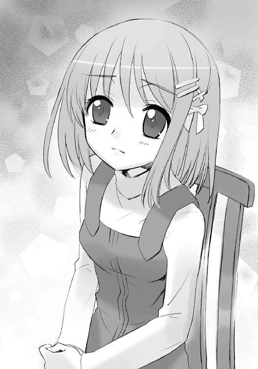
（私だって）
胸の中には、まだ想いが、恋する力が、熱く燃えていた。
その証として、首には未だ、それが下がっている。
コイン大、縦横長さの等しいギリシャ十字。
一人の〝紅世の王〟から託された、ペンダント『ヒラルダ』──今在る彼女にとって最大の代償を要求される、彼女がシャナらを助ける力を唯一振るうことのできる宝具だった。
（私は、これをずっと持ってる）
未練としてではなく、思い出としてでもなく、彼の生存を信じる証として......そして、もし彼を救うために必要であれば使うことも辞さない覚悟として、持つ。持ち続ける。
（お願いだから、生きていて）
吉田はペンダントを握り締め、そこから彼へと声が届くよう、祈った。
彼に向けて、今の彼女にできることの、それも一つ。
（それだけで、いいから）
祈りの持つ意味を、少女は知らない。
寒風が大きく辺りを払う、真夜中の佐藤家。
この広大な敷地の一角を占める冬枯れの日本庭園を、封絶が覆っている。
シャナが直向に申し入れ、ヴィルヘルミナが粘り強く口添えし、マージョリーが渋々と受けた、フレイムヘイズらによる夜の鍛錬の場だった。この二週間ほど、少年がまだ御崎市に在った頃の習慣を踏襲し、午前零時の少し前に行われている。
場所は出かけなくてもいい佐藤家の庭、封絶はヴィルヘルミナが行う、という条件で、世に名高き自在師たる『弔詞の詠み手』マージョリー・ドーが直々に、『炎髪灼眼の討ち手』シャナへと、自在法のコツを伝授しているのだった。
この場には、ゆえに三人にして六人たるフレイムヘイズらの姿があり、また明日、外界宿へと旅立つ佐藤が、見学者として立ち会っている。彼はこの鍛錬が始まってからずっと、役に立つ立たないを度外視して、見学を続けていた。僅かでも『この世の本当のこと』に接する機会を逃す気はない、という意気込みからの行為らしい。
これを、シャナやヴィルヘルミナは、鍛錬の邪魔にならないのなら、と黙認し、マージョリーとマルコシアスも、思うところは別として、口にはなにを出すでもなく放っていた。
その佐藤が、瓢箪型をした大きな池の端で、
「ぅおっ......！」
双眸の底を焼いて現れる威容に、思わず息を呑んだ。
池に架かった石橋の中央では、シャナが左手を天に向け、差し出している。
「──ふぅ──」
その口から漏れるのは、静穏な吐息。
頭上、差し出した手からは、紅蓮の火の粉が逆巻く風花のように舞い昇っていた。それら、疎らな光は、炎髪灼眼を夜に煌かす少女の頭上で渦を巻く。水面に照り映える火の粉は、やがて流れを整えて、物体の輪郭を薄く現した。
それは、全長にして二十メートルはあろうかという、炎の腕。
佐藤の隣、豪勢な毛皮のコートに身を包むマージョリーが小さく頷く。
「だいぶ形になってきたわね」
「ハッハー！ もう精神集中の溜めも不要になったみてえだな、嬢ちゃん」
その右脇に下がる神器〝グリモア〟を揺すって、マルコシアスが歓声を上げた。
が、
「まだ駄目」
シャナは一言で自らの為し様を斬って捨てる。
「この大きさを維持したまま、全力で振り回しても大丈夫なくらいの安定が欲しい」
瞬間、腰を沈め、手刀を横に払った。
その動作をトレースして、渦巻く紅蓮の巨腕が、庭の地表近くを奔る。その全体が、神速の動きに僅か遅れ、台風の下に在る大木のように微か撓った。
「ひぇっ!?」
佐藤は、情けない悲鳴を漏らしたこと、動きに反応すらできなかったこと、自分に影響のない方向へと腕が振られていたことを、事後になってから気付かされ、思わず赤面した。
もっとも、彼女らに劣っている、という負の悔しさは、もう覚えていない。自分はまだ未熟だ、という正の意味でのそれだけが、胸裏の内にあった。
（すげえ......）
気付けば、巨腕の過ぎった芝の先、枝の端、石の面は、色付く吹雪のような紅蓮の火の粉で撫で上げられたにもかかわらず、焦げ目一つ、残り火の欠片すら残していない。
（あれだけの火の粉で炙られたってのに......たしか、見た目どおりの炎じゃなく、物体として握ったり、打撃力として叩いたりできる、具現化って奴か）
しかし、使い手たる少女は、僅かな遅れ、微かな撓りが許せないらしい。
「誤差なく動かすには、この半分がせいぜい。十分な破壊力を発揮するには、もっと小さく収束しなきゃならない」
「それでいい、とは思わないわけだ」
佐藤は、その思考を正確に推測していた。
軽い頷きで、強い覚悟で、シャナは返す。
「うん、もっと強くならないと。なにがあっても対処できるように」
「......！」
少年の感銘に少女は気付かず、再び腕を振り上げて輪郭を解いた。
紅蓮が、パッと花吹雪のように舞い散る。この、輪郭を火の粉だけで形作る方式は、鍛錬に全力を使う愚を避けるための、彼女一流の工夫である。
マージョリーが鍛錬の監督を引き受ける条件には、すぐ回復できる程度まで力を使ったらお開き、その判断はマージョリーが下す、という事項が入っている。常在戦場、臨戦態勢を解くわけには行かないフレイムヘイズにとって、無駄な消耗は御法度なのだった。
それでも、自在法はどこまでも実地に感得する類の技能であるため、シャナも試行錯誤しないわけにはいかない。細かい技術習得の傍ら、火の粉で統御の実演を繰り返し、他の二人が適宜、助言や実演で指導する、という現在の形式に落ちついたのは、そういう事情による。
この今も、『弔詞の詠み手』は、
「しなるのは、大きさに感覚が付いてってない証拠よ。大きな自分を明確に認識することで、その誤差は埋まるはず」
「ま、よーするに、じゃんじゃん使ってとっとと慣れろ、つーわけだ、ヒヒッ！」
と、硬軟両方の声で督励していた。
シャナはまた頷き、さらにもう一度、振り上げた先に巨腕の輪郭を形成する。
フレイムヘイズとして、未だ数年のキャリアしか持っていない彼女は、この数ヶ月の定住を機に、目減りしない燃料タンクであった『零時迷子』の〝ミステス〟の少年を使って、自分の力の生かし方を探っていた。実戦で見せた紅蓮の双翼や炎で形作った大太刀、今も鍛錬で試している炎の腕は、その数ヶ月の模索が生んだ、大きな成果である。
そもそも、フレイムヘイズ『炎髪灼眼の討ち手』の持つ力は、審判と断罪を司る『天罰神』の権能そのもの......即ち、討ち滅ぼすための力そのものと、炎である。
それらは、ただ漫然と吐き出しても、他のフレイムヘイズらが破壊の意思として吐き出す炎弾等と同種のものにしか見えない。固有の力として威を振るうには、そこからさらに高度な、洗練された技能を身につけてゆくしかないのだった。
この場では専ら封絶を担当するヴィルヘルミナが、巨腕を見上げ、ふと漏らす。
「いっそ先んじて名称を付け、明確な認識の助けとしてはどうでありましょう」
「愛着必至」
例によって短く、ティアマトーがパートナーの説を補強した。
アラストールが、契約者に先んじて答える。
「ふむ......悪くない考えだが、名称自体も含め、決めるのは本人であるべきだ」
「名称？」
シャナはキョトンとなって、また炎の腕を散らした。
元来がハッタリやケレン味に乏しい、実直な性格である。現に、炎による大太刀を編み出した後も、それに気取った名称を付けたりはしていない。まま『大太刀』呼ばわりである。
「急に、言われても」
彼女としては、拘りもない以上、強いて拒否するつもりもなかったが、かといって、積極的にこうしよう、という良案も浮かばない。
そこに、
「事象としては好例が」
ヴィルヘルミナが、静かに語り始める。
「先代『炎髪灼眼の討ち手』の力は、『騎士団』という名称でありました。彼女にとって、強さの象徴的なイメージが、『自身を先頭に切り込む騎士の軍団』だったからであります」
自分の育てた『炎髪灼眼の討ち手』と顔を向き合わせて、真摯に。
「彼女は、そのイメージを〝天壌の劫火〟の炎で形作り、数百からの軍勢を、装備も大きさも自在に具現化した......しかして今、貴女が鍛錬によって見出したそれは、恐らく──」
「自分自身」
最後、ティアマトーの言葉で、
「!!」
シャナは何かを掴んだ気がした。
（自分、自身）
刹那の感得を逃すまいと、一振り、鋭く、拳で天を衝く。
「──っはあ!!」
炎髪灼眼の躍動を受け、火の粉の密度はそのままに、描かれる輪郭はより鮮明に、紅蓮の巨腕が形成されていた。振り上げた動作と輪郭には、微塵の誤差も撓みもない。
「できた」
それはまさに、彼女自身のような、力強い屹立だった。
名称については追って考える、と決定した時点で、その夜の鍛錬はお開きとなった。
夜空へと薄れゆくように封絶が解かれると、
「ふぁ〜あ、また明日......」
「良い夢を、お二方！」
「んじゃ。皆によろしく言っといてくれ」
それぞれ軽い挨拶を残し、『弔詞の詠み手』と佐藤は屋敷へと足を向けた。
ヴィルヘルミナも常の如く、シャナを促して辞去しようとする。御崎市に異変が起きていないか、二人で巡回し確認するのが、しばらくの慣例なのである。
「では我々も」
「定時巡回」
が、いつもなら、なんの余韻もなく淡白に立ち去るはずの少女が、それを拒んだ。踏み出すことへの躊躇も一瞬、目当ての女性を呼び止める。
「待って」
「へっ？」「はぁ？」
マージョリーとマルコシアスは、呼び止められているのが自分らと知って、素っ頓狂な声を上げた。
二人の反応も無理はない。腐れ縁として同じ街に在ること数ヶ月、互いに戦いを介した付き合いこそ持っているが、個人間での話をすることは、ほぼ皆無に近かった間柄である。だいたいが、使命第一と定める生真面目な少女と、感情感覚に任せる気儘な女性、馬も合わない。その少女が、この女性を呼び止めている。
佐藤も、ついでとして振り返った。
「どしたんだよ、シャナちゃん」
「如何なされたのでありますか」
「所用不審」
ヴィルヘルミナとティアマトーも、今までにない出来事を不思議がって尋ねる。
「......」
シャナは答えない。黒い双眸でマージョリーを見つめ、
「な、なによ」
次いで、佐藤とヴィルヘルミナへと、目線を巡らせた。
「なんだよ？」
「追加の発問でも？」
少し驚く二人に、また一瞬だけ躊躇して、言う。
「......『弔詞の詠み手』と、二人だけで話がしたい」
ますます驚く三人、特に、
「い、一体、彼女個人に何用が──」
うろたえる元養育係の女性には言わせず、
「いいから、ヴィルヘルミナは巡回に出て！」
語気荒く叫んだ少女は、そのお尻を強く押して追い出しにかかった。そんな、子供のような仕草の傍ら、佐藤のこともグッと睨む。
「マ、マージョリーさん？」
気圧された佐藤は、窺うようにマージョリーを見た。
どういうわけか指名を受けた女性は、その態度で薄々勘付くものがある。そういう役割を負うことが、この街に来て多くなっていたせいかもしれなかった。
「ま、いーでしょ。果たし合いでもなさそうだし」
相棒の声色で、同様の事柄を察したマルコシアスが尋ねる。
「んーで、俺はいてもいいのかい、嬢ちゃんよ？」
「できれば、遠慮して欲しい」
とシャナは遠慮なく言った。
その胸元から、己も退去を迫られると察したアラストールが、ようやく一言だけ。
「今日の手紙か」
図星を突かれて、
「うん。大事なこと」
しかしシャナは慌てず、肯定した。
ヴィルヘルミナだけが、おろおろと不安げに少女の様子を見ている。
２ 始めることを
発展著しい中国は上海市。
長江の河口近く、北へと突き上げるように合流する黄浦江の西岸に、繁華な一角がある。
列強諸国の租界を前身とした河岸の街、通称『外灘』である。
近年、本来担っていた都心としての機能を、東岸の浦東新区に移し、十九世紀末から二十世紀初頭の西洋建築を並べる旧態を意図的に残した観光エリアへと、変貌しつつある地区。
その、時代様式を雑多に織り交ぜるモダンな街並みが、燃えていた。
のみならず一面、砕けて倒れ、壊れて朽ちる、惨状が広がっていた。
でありながら、巻き込まれている人々は、ただ固まり、立ち止まっている。
それは、地を走る薄香色の火線で、広く対岸まで含めた都心に描かれる奇怪な紋章、天も同様、大きく夜空を隠す陽炎のドーム、これらの光景によって説明付けられる。内に捕らえた〝紅世〟に関わる者以外を全て静止させる、因果孤立空間・封絶だった。
各所の惨状には、しかし火災と倒壊以外に、動きは見られない。
その無惨さは、既に酣を過ぎ、終息を迎えた傷痕のものだった。
ただ、炎を抜け、瓦礫を踏んで進む影が、幾つか。
煤煙に隠れ陽炎に霞む空を遊弋する影が、幾つか。
そして、整然と居並び、一つ区画を包囲する影が、幾千。
対象物は、通りから隠れるように細く、奥に向かって長い、アール・デコの高層建築。
北京や香港と並ぶ、中国沿岸部におけるフレイムヘイズの一大拠点。
上海外界宿総本部である。
百年近くの歳月を経て、居住まいに風格を漂わせる石壁の奥深く。
地階へと伸びる頑丈な鉄製の階段から老人が一人、足を重く引き摺るように昇ってきた。身に纏った、一目で上質と分かるスーツの胸ポケットから、古めかしい紋様を輝かす札が覗いている。これは、彼が封絶の中では本来動けない、人間であることの証だった。
彼の出た先は、一階の大広間。玄関側にあるイタリアンレストランから、新旧三種のセキュリティを潜らないと入ることのできない、極秘の一室だった。中二階の回廊まで設えた絢爛豪華な宮殿様式は、かつてここを根拠地に使っていた洪幇（秘密結社）筋の名残である。
その大広間の中央に、腕組みした女性が、背を向けて待っていた。
大柄でこそないものの、力感に溢れた細い体の線が、ピッタリ合ったスーツ越しに十分見て取れる。ジャケットの腰を絞るように巻かれた紅梅色の帯と、そこに絡めた華美な拵えの直剣が、地下からの風に僅か揺れて、女性が絵画中の存在でないことを辛うじて示していた。
女性は振り向かず、大広間の正面──敵の攻め口たる玄関の方角──を睨みつけたまま、訊く。快く高く、通る声で。
「地下は、塞げたか？」
お前だけか、とは訊かない。戦いの経緯は概ね、気配で察している。地下から上ってきた老人が、最後の生き残りであることは分かっていた。
老人は、ゆっくりと歩み寄りながら答える。
「はい、范勲様が最後の力で岩盤ごと崩されてからは、敵も沈黙しました。大勢が決した今、犠牲覚悟の再突入もないでしょう。皆さん、あの状況からよく押し戻されました......そうそう、侵入経路は、やはり地下変電駅（変電所）から延びる整備通路でした」
「そうか。坑が攻城の常道であることを失念した、また〝徒〟がそのような手管を使うと見抜けなかった、我が身の不覚か。内外呼応しての急襲とはいえ、最後の一勝負と賭けた籠城を、こうも容易く破られるとはな。しかも、長く本拠としていた総本部で......なんとも不甲斐ないことだ」
女性は苦々しく、この大きな戦いにおける全ての兵権を預かった討ち手として、痛恨の呟きを漏らした。
上海市街を舞台としたフレイムヘイズと〝紅世の徒〟の一大会戦は、両勢ほぼ同等の数で始まったのだから、本拠地で守る討ち手の側に有利、長駆攻め込んで来た〝徒〟の側に不利、と見るのが妥当、以上に常識でさえあったろう。討ち手の側は準備万端、待ち構えて迎撃したのだから、なおさら。
しかし結果は、この通り。
開戦とともに上海へと雪崩れ込んだ〝徒〟らの、間断ない攻撃と練達の部隊運動、旺盛な戦意に巧妙な策を以て、討ち手らは一晩すら持たず、揉み潰されていた。
起死回生を図った総本部における籠城も、地下からの奇襲を受けて総崩れとなり、最早その企図は果たせない。狭まる包囲網への突破を敢行した残存の討ち手らも、騒乱の内に気配を断ち、地階への反攻も当面の侵入こそ食い止めたものの、生き残りは人間の老人一人だけ。
なんとも見事な負けっぷり、まさに完敗だった。
老人は、声だけではなく姿にも表して謝罪する。
「いえ、知らねば備えも不可能......地下施設の新規拡張工事を行う際、やはり討ち手の方々にも立ち会って頂くべきでした。私ども『傀輪会』の落ち度にございます」
「なに、我らもこの百年、『傀輪会』の大老方に限らず、人間の構成員に世事の雑務を押し付けてきたのだ。今という時になってそれを責めるは、虫が良すぎると言うものであろうよ」
言った女性の腰、帯に巻かれた剣から、
「項辛、些事はよい。そちに与えた命令の方は如何した」
古風な言い回しによる男性の声が発せられた。この問いをなすためにこそ、彼女らは出撃せず、ここで階段のある大広間を守っていたのである。
項辛と呼ばれた老人は、歩く身を僅かに屈め、復命する。
「ご安心を、帝鴻様。封絶の範囲が大きかった分、構成の完了まで幾らかの猶予があったのでしょう。気付いた者により、秘匿区画の爆破スイッチは、起動した状態で静止しておりました。封絶の解けた数秒後、なにもかもが花の如く散り果てます」
はっは、と女性が小気味良く笑った。
「これまでの襲撃事件で情報機器が奪取された形跡はないが、だからといって馬鹿正直に残してやる義理もないからな。せいぜい、できる限りの嫌がらせをしてやるのがいいさ」
項辛は、ようやく女性の隣に並ぶと、その横顔を見つめて、笑う。
「はい。しかし......」
「？」
「まさか、自爆装置などという馬鹿げた仕掛けを、本当に使う時が来るなどとは、思いもしませんでしたな」
「ああ、まったくだ」
女性も、また笑った。
出会った頃と何一つ変わらない、戦うには美しすぎる玲瓏の笑顔を、項辛は眩しげに見つめる。見つめて、自分がその彼女を今の苦境に置いてしまったことを悔やむ。
「申し訳ありません。帝鴻様、虞軒様」
言われたフレイムヘイズ・虞軒は、その姿勢や視線に微塵の揺るぎも見せない。ただ、軽く問う。
「ん？」
「一旦、上海都心から離れ、大動員のかかる日まで予備の分室で潜伏されたし、というサバリッシュ女史の訓令を容れず、それどころか周囲の戦力を結集して敵勢を迎え撃つ、との決定を下したのは、我ら『傀輪会』......」
懺悔を聞く虞軒は、やはり揺るがない。
中国から東南アジアにかけての外界宿は他地域の、例えば異能者・フレイムヘイズを指導者に据えた幕僚団『クーベリックのオーケストラ』等とは性質の異なる、人間のみで構成された結社『傀輪会』を戴く体制を伝統的に取ってきた。
もちろん、フレイムヘイズの情報交換と支援を目的とする以上、共同運営の形を取っていたが、討ち手らは成り立ちの上から基本的に放浪者であり、組織に定着する者は少ない。ドレルのような異才を得なかったこともあり、この地域では、地生えの人間（最高幹部は『大老』と呼ばれた）が、組織の活動方針を定める傾向が強かった。
この体制は、平時であれば、特段の不備もなく動いていたはずだった。しかし昨今の、常人には見えない動乱──外界宿主導部消滅、および重要拠点の失陥──の情勢下、彼らは結果的に、足並みを乱す大きな一派となってしまっていた。
無論、『傀輪会』の側にも言い分はある。
世情に疎い、あるいは無視する者の少なくないフレイムヘイズの中、例外的にその感性を備えていた『愁夢の吹き手』ドレル・クーベリックが不意の襲撃を受けて死ぬと、世界の外界宿を主導する欧州は、その内部で討ち手と人間による主導権争いを始めた。
この必定の流れとして、情報や連絡には齟齬や停滞という実務上の問題が発生、悪化の一途を辿り、幣害の被害者たる東アジア側は、欧州の権力闘争に巻き込まれることへの警戒を強めていった。事実、人間と討ち手の双方から『傀輪会』やその下で働く者らに協力を求める大小清濁、上手下手な根回しと工作が持ちかけられる事件も呆れるほどに多く起きている。
為すべき職務に支障を来すこと甚だしい、これら本末転倒の様を目にした彼らの間で、欧州への不信の念が極度に高まったのは、全く当たり前のことだった。
ほどなく、互いに噛み合うことの愚を自覚した欧州主導部は、大戦の英雄『震威の結い手』ゾフィー・サバリッシュの招聘で、混乱の収拾を図る。が、その選択は結果的に事態を紛糾させ、さらには一つの破綻へと導くこととなる。皮肉にも、とは言えない。それまでの愚行が齎した、むしろ順当な破綻だったからである。
ある日、ゾフィーを頂点とした討ち手らによる新たな臨戦態勢を構築する、という布達が欧州から全世界に向けて発せられた。各外界宿の協力と討ち手らの助力を求める旨、強く込められた一文である。事変の発端となった主要外界宿襲撃に対処するための、建前としては非の打ち所のない、真っ当な要求だった。
しかし『傀輪会』は先の事情から、これを馬鹿正直に受け取ることができなかった。どころか、中枢の指導力強化を、根回しの延長線上にあるおためごかし、自分たちの伝統的な組織体制に対する不当な介入、影響力拡大を目論む欧州の謀略とすら受け取っていた。
この地に所属する、あるいは度々立ち寄る討ち手らの中からは無論、非常時ゆえ積極的に協調すべし、欧州には懸念される野心などない、という異論も出たが、『傀輪会』の大老らはこれに、欧州の布達を別の形で受容し、実現させるという行為で応えた。
即ち、彼らの担当する東アジア管区で独自に、謎の襲撃者への網を張り、誘い込んだこれを一気に殲滅する──独断による作戦行動である。
敵勢を誘い出す囮、釣り上げる餌には、討ち手らの集結と収容を容易にする重要拠点、北京、上海、香港の三箇所が選ばれた。
そうして広大な中国へと索敵の網は張り巡らされ、ほとんど芸術的と言って良い、絶妙な誘導と軍勢の集結が同時に図られた。各地で小規模な遭遇戦を行い、擬態の敗走や勝利による進路の封鎖で敵本隊の位置を絞り込み、その予想された行動線の先・上海に、管区内で立ち働くフレイムヘイズのほぼ総員、持てる全戦力を揃え、これを迎え撃ったのである。
彼ら、東アジアの外界宿を統べる『傀輪会』、軍勢の指揮を執り、また受けて働くフレイムヘイズらの優秀さは、この数世紀を超えた大規模な作戦行動が、現代文明の助けを借りたとはいえ、一糸乱れぬものであったことからも明らかだった。
ただし、誤算が二つあった。
一つは、集結して叩く、という彼らの意図こそが敵の狙いだったこと。
二つは、その肝心の上海一帯を舞台とした決戦で、完敗を喫したこと。
欧州の与り知らぬ間に、東アジアにあった屈強の討ち手らは、ほぼ一掃された。
遠くか近くか、建物の崩れる断続的な地響きが、広間を細かく鈍く震わせた。
滅びの実感を覚える中、項辛は懺悔を続ける。
「欧州への不信があったとはいえ、主導権が討ち手の側に握られることへの反発や、我らだけで戦果を挙げることによる挽回の野心がなかったとは申せません。『傀輪会』の決定に、虞軒様や季重様らが決して否とは言われぬことへの甘えも──」
「よい」
剣に帯を靡かせて、帝鴻が声を遮る。
「我らの代わりに弁解などしてくれるな、項辛。面映いわ」
「そうとも。知略の粋を尽くし、油断を敵に突かれ、敗れた。それでよいではないか」
虞軒は、命の際だからこそ凛と言い放つ。
そんな彼女だからこそ憧れたのだ、と想いを改めた老人は、力を抜いて笑った。
「そう、ですね。せめて、疎ましがられるのを押して、他の大老を、戦前にこの上海総本部から退去させておけたことだけでも、喜ぶとしましょうか」
「本当は、お前にこそ退去して欲しかったのだがな」
やはり前を向いたままの虞軒は、声に微量の異物を混ぜる。
それを今度は、項辛が笑い飛ばす。
「あなたの隣を、他の者には渡せませんよ。本部には討ち手の方には分からない仕掛けもありますし......なにより、あなたがいるから、私がいる。それでよいではありませんか」
「こ奴」
帝鴻が言い、虞軒もようやく顔を俯けて笑う。
「紅顔の少年であった頃よりの悪癖......減らず口は結局、治らなかったな」
「美少年、と言って欲しいものですな、最後くらいは」
言われた通りの減らず口で、項辛は返した。
笑った末に、虞軒は再び前を向く。
「そろそろ、敵本陣にも地下の戦況が伝わっただろう。私は行く」
その顔には、決死の力と気迫が宿っていた。
「どうぞ、存分のお働きを」
項辛は発した言葉と裏腹に、虞軒の前に立ち塞がった。
老人は半世紀以上前の、彼女との出会いを思い出していた。
無知で無謀な若造だった項少年は、貧民街をうろつくのに似つかわしくない彼女の盛装、なにより恐れを知らぬ強者としての──まさに今の──顔に、安っぽい反発と僻みを抱き、それを暴力で解消せんと、道を遮ったのである。
結果は無論のこと......たった一撃、顔の真ん中に拳を喰らって吹っ飛んでいた。
あのときの、灼熱と鉄の臭いが広がる感覚を、今でも鮮明に思い出せる。
同じ行為を、今度は命を奪われる程に貰おうと、両の目を閉じた。
長い付き合いである、これだけの仕草で通じるはずだった。
攻囲を突破して逃げるのは論外（敵の侵入に使われた、変電駅に通じる整備通路こそが、秘密の退き口として機能するはずだった）。このまま残っていても、戦いで崩れる建物の下敷きになるか、〝徒〟に喰われるだけ。となると、採るべき道は、ただ一つ。
が、
「!?」
覚悟したものと正反対の柔らかな感触が、唇に来た。
驚きに目を開いた彼の視界いっぱいに、虞軒の微笑がある。
鮮烈な感激に呆然となった首が一閃、抜かれた剣によって飛んだ。
「馬鹿、何という顔で死ぬんだ」
転がった首、自分を愛してくれた男への、それが虞軒からの別れの言葉だった。
「出たぞー!!」
叫んだ蜘蛛が両断された。
散った火の粉を突き破り、虞軒は上海外界宿、アール・デコ様式の風格漂う外壁を、真上に向かって駆け上がる。
その前方を塞いだ蝙蝠男、西洋甲冑、三つ首髑髏、
「単騎だ、討ち取れ！」
「逃すなあ！」
「大将首だぞ!!」
いずれも叫んだ次の瞬間、二、二、三と神速の太刀捌きを受けて、細切れとなっていた。
虞軒は切り抜ける間に、外灘に立ち並ぶビルの階下に谷間に屋上に、様々の味方ならぬ影が蠢き満ちている光景を目に過ぎらせる。
（現代という時節に、よくもこれだけの兵を掻き集めたものだ）
さらに正面、壁を砕いて現れた、金槌を頭にした鉄塊のような怪物を、半秒構えて溜めを作り、胴から横一文字に切り裂く。落ちる巨体を掻い潜った先は、煤煙交える陽炎の空と、外界宿の者たちが戯れに作っていた、小さな屋上庭園。
（しかも、よりにもよって、こ奴ら──）
一飛びして庭園の端、置石の上に降り立った彼女は、
「！」
小さな楼閣の欄干から突き出された、両足と槍の石突を見つけた。
戦いの最中、誰かが楼閣で、だらしなく足を投げ出して寝転んでいる。
異常に巨大な気配を感じるまでもなく、虞軒はこの誰かを、よく知っていた。心中、呟いていた言葉の続きが、声として漏れる。
「──［仮装舞踏会］、とはな」
それこそ、世界各地の外界宿主要拠点を襲撃していた者の、全く意外な正体。
呼ばれたように、足が大きく振り上げられ、ズン、と敷石の床を重く叩いた。
槍を取り上げ、立ち上がった男が、ゆっくりと歩き出す。
「まったく、物見が真っ先に飛び掛かってどうする」
眼前に降り立ったフレイムヘイズにではなく、一軍を率いる将として、配下の〝徒〟へと投げかけた言葉だった。楼閣の出口、低い石段を踏んで、その姿を現す男。
目許を隠すサングラス、オールバックにしたプラチナブロンドという面相。ダークスーツを纏った長身に携え、肩慣らしのようにグルリと振るった得物は、身長を二回りほども超える鈍色の剛槍。咥えていた煙草が、濁った紫の炎に包まれ、灰となる。
後ろに続く黒衣と白衣の男女が、
「は、全く心苦しいばかりにて。厳しく申し付けてはいるのですが」
「ここは、来る戦勝に、一兵までも士気の昂ぶっている証と受け取って頂ければ......」
重く謹直に、軽く笑って、それぞれ答えた。
虞軒は後の二人には気を払わず、ただ敵将に切っ先を向ける。
まず直剣が、
「久しいな、蚩尤......いやさ〝千変〟シュドナイよ。並み居る猛き討ち手らを、古にはない起伏間隙の戦場を、よくぞ討ち平らげた」
続いて持ち主が、
「一世紀余の一人働き程度では、差配の腕も錆びぬということか」
朗々と戦勝した将軍を讃えた。
その男・シュドナイは困った風に笑う。
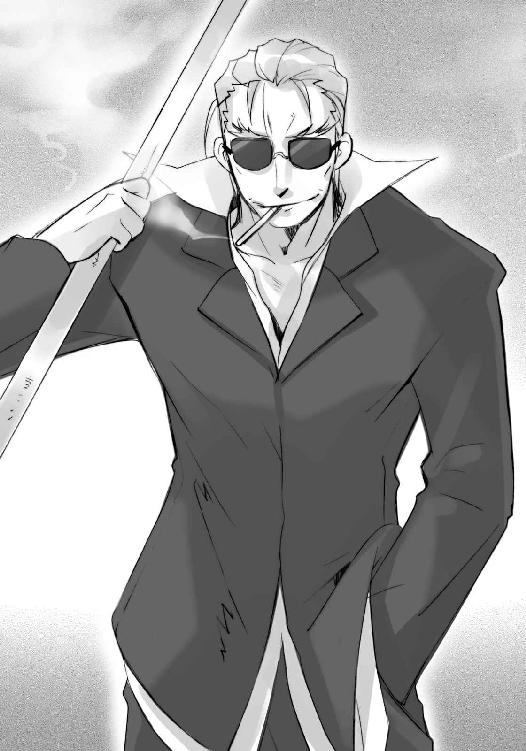
「ふ、未だその名を呼んでくれる旧知を失うのは辛いな、〝奉の錦旆〟帝鴻、『剣花の薙ぎ手』虞軒」
笑って、剛槍を一回し、ドシッ、と脇に掻い込んだ。無造作な一つ姿勢が、見る者を身震いさせるような強力を宿している。ついでとして、
「オロバス、レライエ。俺の客だ、手を出すなよ」
付き従う黒白の男女に言い捨てた。
二人、恭しく一礼して、その姿勢のまま数歩下がる。
「はっ」
「承知いたしておりますとも」
戦勝した将軍と、敗残の強者との一騎打ち。
この、必然性のない、どころか万が一の危機すら孕む行為を、止めようともしない。
ビルの周囲に蠢く〝徒〟の軍勢も、屋上に侵入するどころか、囁き一つ漏らさない。ただ、じっと見守っている。彼らは、彼らの将軍の強さに、全幅の信頼を置いているのだった。
虞軒は、自分が舐められたとは思わない。そうするだけの、そう思われるだけの実力を、この［仮装舞踏会］を統べる三柱臣の将軍〝千変〟シュドナイは持っているのである。
しかし、東洋屈指の使い手と謳われたフレイムヘイズ『剣花の薙ぎ手』は、
「ゆくか帝鴻」
「応」
この自信と信頼にこそ付け込み、せめての一矢を報いんと、全力の勝負を挑む。
腰に巻かれていた帯が、ゆっくりと靡く端から、紅梅色の火の粉となって解けてゆく。鞘も同様に、やがては服、体までも。そうして、下辺を花弁の散るように減耗しつつある肩と首のみの虞軒が、穏やかな顔で、力の開放を告げる。
「──『捨身剣醒』──」
瞬間、残された体も飛散し、火の粉は紅梅色の霞へと変ずる。ただ一つ、構えられた場所に残されていた直剣型の神器『昆吾』の刀身に優美な花文様が点り、柄を霞が握りなおす。
天女の如き優美な盛装を茫漠と象った、紅梅色の霞が。
これぞ『剣花の薙ぎ手』の誇る、神器『昆吾』を中核とした戦闘形態『捨身剣醒』。
「ゆくぞ、帝鴻」
「応」
返答の瞬間、剣がまさしく飛ぶように、シュドナイへと襲い掛かった。
構えも振りもない、霞を噴射炎としたかのような、壮絶な刺突。
「！」
シュドナイは咄嗟に体をかわした。通り過ぎた高熱の霞に、スーツの肩が焦げる。かわした動作を途中から大きく加速させ、剛槍『神鉄如意』の端いっぱいの握りで、一振り。
通り過ぎようとしていた末尾、柄頭に僅かかすって、『昆吾』はあらぬ方向へと回りながら吹っ飛ぶ。が、それも数秒、どこからともなく湧いた紅梅色の霞が再び天女となって受け止め、
「一の太刀を避けるだけでなく、触れたか」
「流石にやるものよ、蚩尤」
言って宙に舞うもまた数秒、今度は雪崩れるように霞ごと、降りかかった。
核に縦回転する剣を内包した、高熱の霞を見上げるシュドナイは一息、
「ふっ」
大きく息を吸い込んで変化を始める。
槍を持つ右半身は人の身のまま、左半身の輪郭が膨れ上がった。現れたそれは巨大な、尻尾の尖端を人間の右半身へと繋げる、恐竜のような蜥蜴。
分厚い鱗で固めたその脳天に回転する『昆吾』がぶち当たり、
「む」
シュドナイの驚き見上げる先で一撃、蜥蜴の頭が縦に断ち割られた。さらに、傷口から口から、灼熱の霞が割って入り、中と外、たちまちの内に大蜥蜴は消し炭へと変わる。
余波を受けて燃え上がる屋上庭園の中、
「ちいっ！」
危うくこれを切り離し、飛びのいた半身のシュドナイへと、再び『昆吾』神速の刺突が繰り出される。今度は、切り離された断面、という死角からの一撃。
（もらった──、っ!?）
が、その切り離された面が、瞬間的に牙を無数生やした顎へと変化していた。しかも、刺突のタイミングに合わせて閉じつつある。戦慄する虞軒の心中に、
（地勢を利せよ！）
即座伝わる帝鴻の声が響く。
咄嗟に『昆吾』と紅梅の霞は、軌道を本来のものから微か下方へとずらした。屋上庭園の薄い土壌を突き破って階下へと、灼熱の破壊力は雪崩れ込む。
狙いを外されたシュドナイは、呼吸より容易く半身を戻し、『神鉄如意』を振り上げる。
と、さらに機先を制して床が割れ、虞軒の切っ先が顔面に向けて突き出された。
「！」
シュドナイは仰け反ってこれを避け、お返しと横様の一撃を叩き込む。
紅梅色の霞が吹き払われた、と見た次の瞬間、それは再結集して剣を取る天女となる。
再び頭上からの唐竹割りに振り下ろされる剣を、シュドナイは危うく槍の柄で受けた。
ギリギリと力の限り押し合う両者、
「虞軒、全くお前は運が良い。『神鉄如意』の全力を、目の当たりにできるぞ」
至近、睨み合う中でサングラスが二つに割れて、落ちる。
「そうか。では蚩尤、こちらも『捨身剣醒』の奥義で応えよう」
「ゆくぞ！」
帝鴻の声で一拍、互いに、より力を込めて離れた。
霞の天女は、優美に屋上庭園を焼き払いつつ輪舞し、両手を広げ飛翔する。屋上よりも、より高い空へ舞い上がった彼女は、身を解いた。その中央で『昆吾』が横回転を始め、早め、より早め、やがて霞全体が平たい円盤状の力の渦へと変化する。
それが不意に傾いて、上海外界宿の屋上へと、そこに立つ［仮装舞踏会］の将軍へと、回転鋸の振り落とされるように突っ込む。
その渦は、生の視線で見上げるシュドナイを、
「!!」
触れるより過ぎるのが早く感じられるほどに容易く、屋上へと押し潰した。のみならず、その破壊の余波で階層の全てを貫き切り裂き、勢いを減じぬまま地面近くまで一気に引き裂く。
周囲で一騎打ちを見守る〝徒〟の軍勢が凍りついた──ように見えた。
炸裂の余韻が空間から去ること数秒、中ほどをごっそり削られる形で割れたビルは、断末魔とも聞こえる唸りをあげて傾き、ゆっくりと倒壊を始める。
濛々と立ち込める粉塵の中に浮かぶ霞の刃が一巻き、天女の姿を取り戻した。虞軒と帝鴻は、自分らの刻み付けた壮絶な破壊を見やる。
「どう、だ？」
「気配はど──」
言いかけた二人の正面、
「なかなかの美技だ......が、残念。俺の心にも命にも、届かんな」
「なっ!!」
「む!?」
先の唐竹割りと同じ、攻撃を受け止めた姿の〝千変〟シュドナイが、傲然と立っていた。その手に掲げられる剛槍『神鉄如意』には、傷一つ付いていない。
「馬鹿な」
「無傷、だと」
驚愕する二人に、不倒の男は目線鋭く声を放る。
「俺たち三柱臣の宝具は特別製でな。この『神鉄如意』は、俺が望まない限り、折れも曲がりもしない。そして望めば──」
周囲、粉塵の中、倒壊しつつあるビルが、動きを止めた。
と突然、その砕けた断面に、無数の目と口が開く。
大小種類も様々のそれらは［仮装舞踏会］の兵らではない。全てが、〝千変〟シュドナイだった。ビルのあらゆる階層に、彼の一部、あるいは全身が充満している。
受け止める姿勢の膝から下が、地面を覆い尽くすように広がり、両脇のビルへと伸びている。これが、自分の攻撃を受け止め誘い込む、シュドナイの巨大な罠であったことに、遅まきながら虞軒らは気付き、
「っく!!」
天女の姿を解き、離脱しようとする。
が、遅かった。
「ッゴアアアアアアアアアアアアアアア───ー!!」
周囲全域の口から迸るシュドナイの咆哮とともに、信じられないことが起きる。
霞となった虞軒に向けて、両側の階層から数百数千という、濁った紫の炎を纏った『神鉄如意』が突き出されたのである。己が内へと針を伸ばす針鼠のように、それら圧倒的な刺突と打撃は、ただ一点へと収束する。
フレイムヘイズ『剣花の薙ぎ手』の中核となる神器『昆吾』へと。
剛槍数千の打撃を同時に受けて震える剣へと、
「──っふん!!」
その正面、人身のシュドナイの持つ『神鉄如意』が、空を貫き繰り出される。
キーン、
と直剣の切っ先と剛槍の穂先が一点、衝突すること一瞬、『昆吾』が粉々に粉砕された。残された紅梅色の霞は、怒涛と押し寄せる紫の炎に飲み込まれ、掻き消される。
声も姿も、仕草すらもなく、虞軒は散った。
その存在に取って代わるように、一点で突き合った『神鉄如意』は炎の中混ざり合い、ビルの中に在った体の全てを引き寄せて、完全な一人と一本の姿を取り戻す。
「佳人の薄命は、花の散るように人を魅せる、か」
声を幕切れと受けたかのように、支えを失ったビル、上海外界宿総本部が、震えた。壁を割り柱を折り、粉塵轟音へと埋もれるように、世界でも指折りの重要拠点は崩壊してゆく。
その数分の最後に転がり、止まった小石を踏んで、シュドナイは街路へと進み出た。
背後、当然のように避難していたオロバスとレライエが跪き、祝辞を述べる。
「おめでとうございます、将軍」
「この戦勝、必ずや我らが盟主様にもお喜び頂けましょう」
応えて、周囲の兵らが、一斉に歓呼の声を将軍に捧げた。
「うおおおおおおおー！」「将軍閣下、万歳ー!!」「勝った、勝ったぞおー!!」「我ら［仮装舞踏会］に栄えあれ！」「三柱臣の御為に!!」「〝千変〟シュドナイ様、万歳!!」
が、当のシュドナイは、遠くを見るように興薄げな面持ちである。
兵らに聞こえないよう、オロバスが三者のみに通じる（二者にしないのが、彼の謹直なところである）声を、敬服する将軍へと投げかける。
（同胞殺しと討滅の道具とはいえ、旧知を討たれた心中、お察し致します）
（なにか、攻略の過程に気がかり、心残りがおありなら、今からでもこの場を総員かけて掘り起こしますが？）
レライエの方は、いけしゃあしゃあと会話に加わった。
シュドナイは拘らず、声で返す。
「ふっ、余計な気遣いはするな。奴らとの戦いは、その死も含めて互いに楽しんだ、と言うべきだろうさ。それに、人間どもの仕掛ける細工は、自在法で見抜ける類のものではない。探すだけ無駄だ。第一、外界宿を探れとの命も受けていない」
（では、いったい）
オロバスはなおも声なく、
「なにゆえ、浮かぬお顔を？」
レライエはあっさり口で、また尋ねる。
「この戦が呼ぶ結果について、考えていた」
答えて、シュドナイは煙草を取り出し、軽く指先に振るだけで火を点けた。
「連携なく単独で挑み、大打撃を受けた『傀輪会』も、この結果を知った他地域の領袖らも、以降は危機感から欧州の命に服すようになるだろう」
ようやく二人にも、懸念の意味が分かってくる。
「世界の要路を不安定にするため、相当数の拠点を抜き取った。俺たちの一方的な奇襲、奴らの不用意な迎撃、という条件で果たし得る最大の戦果も、ここで捥ぎ取った。恐らく、この次は生半可じゃない。浮かれていられる状況ではないさ」
次に起きるとすれば、それは決戦となる。
見立てに同意する二人も、覚悟の重さに身を伏せた。
「はっ！ 来る日に向け、より強く大きく、軍を纏めます」
「雑事は我らにお任せあって、どうぞ将軍閣下には大命遂行に御専心頂きますよう」
シュドナイは紫煙を吹いて、思う。
（大命、か......そうだな、そろそろ俺も一度、俺のヘカテーの顔と、帰ってきた盟主殿の御姿でも見に、戻ってみるか）
今、彼の意中にあるそれは、常の回遊コースを離れ、極東の島国にあるという。
世の空に人知れず浮かぶ［仮装舞踏会］の本拠地、移動要塞『星黎殿』が、とある地に数日、停泊している。泡のような異界『秘匿の聖室』によって、内部に在る者の気配が完全に隔離・隠蔽されているとはいえ、常には在り得ない長さである。
が、今、その程度の細かい差異を気にしている者は、どこにもいなかった。それどころではない、もっと、最も、重大な出来事が、起こっている最中だったからである。
要塞内部は、その出来事を一目でも見ようと、あわよくば立ち会おうと、世界各地から集った〝紅世の徒〟の構成員らによって、数百年ぶりという活況でごったがえしていた。
宮橋を下ろす城門の双塔、要塞の上半分を占める入り組んだ城壁と尖塔群、下半分の岩塊部に突き出た掩体道と兵員の詰め所等々、岩塊部の中にある秘匿施設以外のどこにも、人目につかない場所のないほどに〝徒〟が詰め込まれている。
現在、諸事情あって禁足令が布かれているため、なおさら彼らは要塞内部を歩き回って、今起きている、これから起きることについて、互いに語らい、期待し、また尋ね合っていた。
その一隅たる酒保──飲食による娯楽を提供する休息所兼連絡所──で、
「ストラス様！」
食事を楽しもうと現れた〝翠翔〟ストラスを、呼び止める者があった。
「おや、〝蠱溺の盃〟ピルソイン」
ストラスは、首無しの身を振り向かせた。古株の布告官たる彼は、両腕が翼、全身を獣毛で覆い、張った胸に一対の目、腹に裂けた口、という鳥とも人ともつかない異形だが、我もアクも強い〝徒〟には珍しい穏やかな性格から、役目以上の親交を持つ者も多い。
人垣越しに彼を呼び止めた〝徒〟も、その一人。
「将軍の遠征に同行されていると聞いていましたが、戻っておられたのですね。やはり、此度の件と関係が？」
行き交う大小の狭間を、ぴょこぴょこと跳ねるように近付いてくるのは、やぶにらみの子供である。袖が地に着くほどブカブカなローブと、二昔前の盗人のように背負った大袋が、身の小柄さを強調している。これでも名の知れた捜索猟兵で、相方の巡回士とともに上げた大功も多い。
久方ぶりに会う顔馴染みに、ストラスは笑って答える。
「いえ、私は将軍閣下の命で、たまたま。そちらは？」
「もちろん、拝謁の栄に浴すためですよ......我らが盟主の」
構成員たる〝徒〟らの参集している理由は、まさにそれだった。
本日間もなく、この『星黎殿』において、盟主の帰還を祝す式典が執り行われる予定なのである。長く空座だった地位に即く、ほとんどの者が伝え聞く以上の実態を知らない、盟主なる者への謁見を果たすべく、あるいは盟主足るかを目で肌で確かめるべく、彼らは世界中から集ったのだった。
ピルソインもその一人として、素直な喜び以外の感情を、声の中に混ぜていた。
ストラスは、それを感じつつも流し、辺りを見渡す。
「そういえば〝驀地祲〟リベザル殿は？ 当然ご一緒なのでしょう？」
リベザルと言うのは、常々ピルソインと組んで任に当たっている巡回士で、実力は折り紙つきながら、言動の荒っぽいことで知られる〝紅世の王〟だった。
「ええ、まあ」
ピルソインはやぶにらみの目を僅か巡らせて、その居場所を示す。
「でも今は、あまり触れない方が──」
「〝翠翔〟ストラス!!」
言いかけた声におっ被せて、ほとんど怒号のような声が酒保に響いた。
「こっちに来い、一緒に飲め！」
賑わっていた声が途切れ、遮っていた人壁が開いてゆく。誰もが、手の付けられない乱暴者と関わることを面倒に思っているのだった。
人あしらいも上手いストラスは、特段恐れた様子もなく、開いた人垣の間を通ってゆく。
「ご機嫌麗しゅう、とはいかないようですね。如何なさいました」
「如何もなにもあるか」
酒保の中ほどにあるテーブルに腰掛け、特大の木製ジョッキを手に飲んだくれているのは、象ほどもある巨躯を人間状に直立させる、三本角の甲虫である。四本ある腕の内、下の二本は硬く腕組みして、その上から水晶の数珠を巻きつけていた。
この、ストラスにも負けない異形の〝王〟は、蜂蜜酒のお代わりを樽から手酌で注ぎながら、やや呂律の怪しい声を張り上げる。
「おまえも見ただろう！ ご帰還あった我らが盟主だと......冗談じゃねえ！ あれは〝ミステス〟じゃねえか！ どんな宝具を蔵してるとしても、多少の力を宿してるとしても、俺たち〝徒〟が構成を弄れば四散する人間の喰い滓に過ぎん！」
リベザルは、途中から相手ではなく自分へと語っている。
それを分かっていて、しかしストラスは耳を傾けた。話を伝える前に聞くのは、組織中枢と捜索猟兵、巡回士間の連絡を受け持つ布告官の重要な職能である。
既に独演状態となっているリベザルは体を声を震わせ、
「そんな、どこの馬の骨とも知れん野郎に......なんで俺たちの参謀閣下が、大御巫が傅かなきゃなんねえんだ!!」
ドン、と鉤爪の足を床に打ちつけた。
敷石がひび割れるのみならず、酒保自体が大きく揺らぐ。天井から埃がパラパラと落ちて、周囲の〝徒〟には無駄な騒動に巻き込まれるのを避けて立ち去る者もあった。酒保の責任者たる〝徒〟からの、救いを求めるような視線が、同席する二人に向けられる。
（ははあ、つまり）
ストラスは、彼が不機嫌な理由に、容易に見当がついた。視線で傍らに確かめると、ピルソインも苦笑して頷き返してくる。
（まあ、そういうわけで）
リベザルは、組織の一構成員として、それ以上に、力ある〝紅世の王〟として、またそれ以上に、ベルペオル直属の側近として、与えられた任務を果たすことに大きな歓喜と充実感を覚えていた。
そんな自分の信奉する上官が、全く当たり前のように、なんの抵抗もなく、他者に膝を屈したという状況に、信奉した分だけ憤慨しているのである。
ふと、周囲を見渡してみたストラスは、その様子に、
（やはり、そうなのか）
帰還して以降、『星黎殿』の中に感じていた奇妙な空気の正体を見た気がした。
リベザルが荒れ狂っていること自体には呆れや迷惑さを感じて、しかし誰一人として、盟主に対し不敬であることを咎めてはいない。どころか、あちこちで平然と飲み食いしている者、じっと乱行を見つめている者らの間には、声に出さない支持の雰囲気すら漂っている。
（しかし、無理もない）
ストラスもほんの先刻、帰還した際に、驚くべき光景に出くわしている。
あの様を見れば、盟主がさせたと知れば、数百年、長い者は千年の単位で［仮装舞踏会］に付き従ってきた〝徒〟は、許し難い軽率さへの憤り、精神的・実質的な指導者であった二人に対する無礼への不満を、感じずにはいられないだろう。
温厚なストラスでさえ、その疼きを感じているのだから、気性の荒い他の者たちの胸中は、いかほど荒れていることか。
（それに、出自や性質は大きな問題ではない......そもそも、大半の構成員たちは、盟主そのものについて、これまで碌に知らされて来なかったのだから、唐突に『盟主だから従え』と言われれば、困惑する者が数多く出るのも当然）
そうでなくとも、〝徒〟の組織というものは人間のそれのように、倫理規範に拠って立つ性質のものではない。三柱臣が率いてきた長年の実績、相対した際に抱かされる感情こそが、彼らを組織に服属させる原動力なのである。それはストラスとて例外ではない。
（もしかすると、今日の謁見の式典は、盟主の存在を我らにお披露目する、という......字義とは逆の意図からなるものなのだろうか？）
彼の疑問を、リベザルが別の言葉で代弁する。
「だいたい、盟主とやらは、これからなにをしようとしてんだ!? いきなり、帰って来たと抜かして奥の院に居座ったが、参謀閣下以上に物事を自在に動かせるのか？ 大御巫以上に我らの心を纏められるのか？ 将軍閣下以上に戦いを上手く運べるのか？」
叫び終わった咽喉を潤そうと樽を傾けるが、既に空。これを粉々に握りつぶすと、
「くそっ、次の樽を持って来い！」
不快そのものの声色で、酒保の責任者を怒鳴りつけた。
いい加減、見かねたピルソインが、相方の腹、二組目の腕に絡んだ数珠の端を、背伸びして引っ張る形で宥める。
「呑みすぎだよ、リベザル。蜂蜜酒でも酒は酒なんだから」
「おめえは黙ってろ！ 甘いもんは、かえって悪酔いするんだから問題ねえ！」
と、ずれた反論を返すリベザルに、今度はストラスが穏やかな声をかけた。
「まあ、そう荒れずに。なんなら私が、構成員の間にそのような空気があることを、上申しましょうか？ 参謀閣下なら、悪いようにはされないでしょう」
布告官は役柄上、彼らよりやや近しく三柱臣に近づける。その言には、偽りでは在り得ない重みが感じられた。不満を漏らした個人について密告・讒言される、と勘ぐられることがないのは、普段より培った人望の賜物である。
（それに私自身、参謀閣下に此度の意図を尋ねてみたくもありますから）
むしろ彼としては、そちらの方にこそ興味をそそられている。
リベザルは、良案と思える申し出に、
「む......」
僅か心動かされたように黙り、
「それがいいよ、リベザル。そうしなよ」
「この情勢下、参謀閣下も内部の不和は望まれないはず」
言う二人を見て、しかし一転、
「いや、やっぱり駄目だ」
きっぱりと拒否した。そうして突然、
「それよりも、だ」
二人を抱え込む。
「わっ？」
「な、なにを!?」
表情の表れにくい甲虫の顔を二人に寄せて、小さく笑った。
「いいことを思いついた。とりあえず、一緒にいてもらおう」
勿論二人は、彼の『いいこと』を、額面どおりには受け取れなかった。
全体には平坦ながら、峰の一つ一つが荒削りな鋭角を表す山容は、この地域の特徴なのであろうか。冷たく澄んだ空気も、岩棚に残った僅かな緑を、より際立たせているようで快い。
「時節が真冬、というのは、聊か以上に間が悪い」
凱甲から溢れる衣を靡かせて、盟主の声が発せられた。
「春ならば、美しい花も多く咲き乱れていたのだろうが、な」
崖の際に立つ同じ姿が、今度は少年の声で言った。
彼の後ろでは、少女が一人しゃがんで、風にそよぐ緑の端を指で撫で上げている。
白い帽子とマントに身を包む三柱臣の巫女、〝頂の座〟ヘカテーである。
「十分です。冬には冬の、喜びがありますから......それに」
目を細め、少女は言う。
「今は高きに声を求めずとも、貴方と語らうことができます。私は、それだけで」
「冬には冬の、か......そうして、我が身の不在を耐えてきたのだな」
「......」
盟主の声に、今度は答えない。ただ、緑を指先に遊ばせる。
彼は強いて求めず、ただ遠く、山嶺の果てを見やった。
そんな二人を祝すように囃すように、
バラン、
と幽玄な弦音が、山間に揺れて、響く。
「冬と見えども冬は去り、春と見えねど春の来る......」
二人の後ろ、高い岩の上に座っていた楽師が、古びたリュートを爪弾き、歌い上げた。目深に被った三角帽、襟を立てた燕尾服、という出で立ちで顔を隠す、面妖な人物。
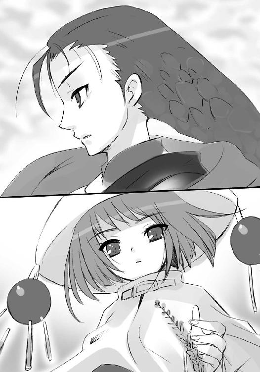
「そは仮初の幻か、迷った時の悪戯か......」
少し前から『星黎殿』に入り込んでいる〝徒〟、〝笑謔の聘〟ロフォカレである。
干渉を受けず、迫害を受けず、といって賞賛を受けることもない、ただそこに在って奏でることを許された、特殊な存在だった。
ゆえに今も、彼はなにも言わず、ヘカテーも振り向かない。
「知るは互いの、心のみ......」
それでもロフォカレは、自分が空気であるかのように、空気に色付けするだけの存在であるかのように、リュートを二度、三度と爪弾き、即興らしき詩歌を零していった。
やがて幾らか風も過ぎ、少年の声が背中越しに、要塞から戻ってきた美女に言う。
「ベルペオル、先の〝徒〟は布告官か？」
「は」
三眼の右目に眼帯をした三柱臣の参謀、〝逆理の裁者〟ベルペオルは、優雅な仕草で岩肌に膝を着いた。
彼女はヘカテーとともに数日、この山間を散策する盟主に付き従い、慣れぬ陽光の下に遊んでいた。『星黎殿』へと参集する〝徒〟らが、外界へと無防備に晒される彼女らの姿を見て驚愕し、また目を剥いて怒っていることに、自己演出以上の苦笑を覚えながら。
その無用心さに不安を、彼女らの扱いに不満を覚える者があることは重々承知していたが、盟主の要望とあれば、否やのあろうはずもない。それに、この行為が彼にとって重要な確認作業であることも理解していた。
せめて、重要な協議や伝令のある度に『星黎殿』に戻る、という辺りで、衆を宥めるよりない。たった今も、その伝令の報告に立ち会ったところだった。
頭を下げ、ここ数日では最も重大な報告を、参謀は行う。
「将軍〝千変〟シュドナイよりの急使にございます。昨日深夜、上海外界宿総本部を陥落させたとのこと。外部の地均しは、これにて概ね完了にございます」
「大儀。余が不在の間も、〝千変〟の腕には寸毫の衰えなしと見える」
盟主の声が讃え、
「これでフレイムヘイズ陣営は当分、事後処理と現有する勢力圏の警戒で、外部にまで網を張る余裕はなくなろう。余も、無粋な介入に心をかけず、彼女の許へ行けるというものだ」
少年の声が継いだ。
ベルペオルは、伏せる下から窺うように、言上する。
「やはり、向かわれますか？」
「無論だ」
即答は、盟主の声で。
「これより大命を進めるに当たって、余を阻める可能性を持つ者は、あの『天罰神』〝天壌の劫火〟のみ......分かっているはずだ」
説明は、少年の声で。
ベルペオルは、表情を動かさず、再び尋ねる。
「できますか？」
様々な意味に取れる、その問いに、答えはすぐ返らなかった。
霧を混ぜた山上の寒風の中、隠れては照らす明るい陽光の下、衣のはためく音は大きく、答えのない空白は長い。
ベルペオルは、不安の暗雲を胸裏に抱いていた。
この二週間ほど、仮の帰還を果たした盟主の言動を見る内に湧いたものである。
元々、帰還した盟主の入れ物には〝ミステス〟などという余剰物を介さない、もっと安定した媒体、専用に設えられた受信装置『暴君』が用いられるはずだった。
それを今の......〝ミステス〟と精神を同調させ、その体を自在に動かす、という形態に変更させたのは、他でもない盟主自身。宝具『零時迷子』の転移から数ヶ月の間に宿主たる少年に興味を抱き、同調可能な思考と志向を持ち合わせている、と認めたことからの選択だった。
本来の計画からは外れた形態ながら、現在のところ問題は起きていない。どころか、言動には一切の躊躇いや迷いは見られず、かつての彼そのままの覇気が満ち溢れている。
ただ、奇妙な、予想の範疇外の現象が二点、発生していた。
一つは、どういうわけか、異常なまでに鋭敏な探知能力を、その身に備えていたこと。
二つは、表出する声が、盟主と少年を混じり合わせた、いわば混在状態になったこと。
式を編み上げた盟主、遠くそれを受信したヘカテー、解析し実働させた〝探耽求究〟ダンタリオン教授、いずれにも解明不能な、まさに怪現象だった。
（そもそも、極度に複雑な式を無数、碌な仮稼動もなしのぶっつけ本番で動かしているんだ、細かな支障の一つ二つも起きて当然と言える、が......）
その影響なのかどうか、計画における修正が、早々に下命されている。
即ち、審判と断罪を司る『天罰神』──〝天壌の劫火〟アラストールの処置。
より突き詰めれば、その契約者の、ということになる。このフレイムヘイズ『炎髪灼眼の討ち手』は、言うまでもなく〝ミステス〟だった頃の盟主が近しくしていた存在。この修正が、盟主の遠謀によるものか、それとも少年の私情からなのか、大命遂行における利点と個人の思惑に重なる部分が多すぎるため、真意は容易に察せられない。
処置の方策については既に練られ、準備も終わっていたが、いざという時、彼にそれができるのか。できなかった時、そこから彼が崩れはしないか。
彼女ら［仮装舞踏会］の目指す大命遂行の道は、順風満帆に見えて、実は最も不確定なモノを、その核としたまま突き進んでいる。事に慎重な彼女が不安を抱くのも当然だった。
（まったく、儘ならぬ）
しかし、その胸裏の暗雲は、彼女にとって決して不快なものではない。むしろ、喜びすら覚えさせられる。『思う儘に生きる』ことを旨とする〝徒〟の中で、彼女だけが持つ『思う儘にならないことにこそ、挑む甲斐を感じる』という特質のなせる業だった。
（そう、この不測の事態にも、手立ては一つ取ってある......その到着を待って、分析なり解明なりを、進めればよいさ）
自嘲ではない、満足感としての複雑怪奇な喜びを、今も鬼謀の〝王〟は得ている。
（我ながら、度し難い）
と、その彼女へと、
「できるか、ではない」
盟主が言いつつ、近寄る。
「断じてやる、それだけだ」
少年が言って、ベルペオルの前に立った。
盟主が、今度は笑いかける。
「かつてのことといい、余は、おまえを困らせてばかりだな。おまえの喜びに甘えて、結局は大きな辛さを与える。なんという、不敏の盟主であろう」
正確に己が内心を測られていることに、喜びとも焦りとも付かない気持ちを抱いて、思わずベルペオルは平伏で顔を隠す。
「左様なことは──」
と、その手を少年が無造作に掴み、
「だが、二度はしくじらぬ。おまえたちのためにも」
「──!?」
緩やか軽やかに引いて、その身を立たせていた。
まず誰も見たことのない、呆気にとられた表情の彼女を、盟主は見つめ、
「小さき人の身も、まんざら悪いものではないな」
少年がその眼帯に、優しく指先を這わせる。
「おまえたちと、こうして近しく触れ合えるのだから」
「......は」
ようやく一言だけを返したベルペオルと、
「はい」
振り向き、はっきりと答えたヘカテーに、
「この数日、おまえたちを無防備に晒し歩いていることを、許せ。だが、どうしても感じておきたかったのだ。広がり満ちる、生の世界というものを......お前たちと共に」
盟主は言って、天を仰ぎ、
「やはり、こうでなくてはならぬ」
少年は言って、地を見渡した。
バラン、
とロフォカレが、またリュートを爪弾いた。
「在るは遥かに目を潤し、重なるは新たに心を染む......ああ、其がまさに、世界」
詩歌の意図を受け取った盟主が、再び振り向く。
数キロ先に降ろされた宮橋、『星黎殿』を包む隠匿の殻『秘匿の聖室』内から伸びる、見た目には宙から忽然と出現する板敷きの吊橋を、不思議な物体が降りてくる。
宙に浮かぶ人間大の、臙脂色をした直方体。
上に松明が刺された、不可思議なそれは、走るほどの速度で彼らの方へと近付いてくる。
ベルペオルは急ぎ半歩、彼と距離を取って、これを出迎える。
「どうしたね、フェコルー」
「はっ！」
この直方体は、『星黎殿』鉄壁の守護者として名高い〝紅世の王〟、〝嵐蹄〟フェコルー。
正確に表現すると、直方体は彼の防御系自在法『マグネシア』からなる生成物で、自身を棺のように中に納めているのである。
彼の容姿は、冴えないスーツ姿の中年男性に、尖った角と蝙蝠の翼と鉤のある尻尾と大振りな蛮刀を付属させる、という露骨なまでに悪魔めいたものではあったが、だからといって日光に当たってどうこう、という性質まで持ち合わせてはいない。
今、彼がこのように身を隠しているのは、滑稽な理由からである。
ただ『星黎殿』を守るだけでなく、ベルペオル不在時の裁量までも任されているこの〝王〟は、日頃から組織の構成員らに己の姿を晒し歩いている。
といって、正体身分を明かしてのことではない。
頭上に掲げる松明『トリヴィア』......空間を操作する『銀沙回廊』の誘導装置を使うことで、彼は『秘匿の聖室』の力を纏い、己の強大な気配を隠し、一〝徒〟の身分を偽って、『星黎殿』の中を巡察しているのだった。陰湿な監視が目的ではなく、構成員たちの立場から組織の姿を捉えるための施策である。
こうした事情から、人目の付く可能性のある場所で〝嵐蹄〟として三柱臣への謁見を求める際、彼は今のような間の抜けた偽装を施さねばならないのだった。
「どうした......？ いえ」
予定通りの招請に現れただけ、ベルペオルも当然知っているはずの事柄を、なぜ今さら問い返されたのか。彼は不審に思ったが、とりあえずと報告を行うため、直方体をバッタリと前のめりに倒した。平伏する姿勢のつもりである。
「我らが盟主、謁見の式典準備、相整いましてございます」
大げさな態度と言葉に、盟主は簡単に答え、
「ご苦労、〝嵐蹄〟」
少年は軽く、他を促す。
「では、行こうか」
バラン、
とリュートを一払い、ロフォカレが岩上から軽やかに飛び降りた。
ヘカテーも彼の傍らに寄り添い、その反対側にはベルペオルが立つ。
後ろには直方体のフェコルーが続き、一同はゆっくりと歩みを進める。
これから始まる、彼らの戦いへと。
移動要塞『星黎殿』の上半分である城砦部は、秘匿施設の多い下半分の岩塊部と違って、基本的に無駄な部屋というものが存在しない。
建造当時には、あるいは存在していたのかもしれないが、それも戦いの時を経るに連れ、より戦闘的に、より実用的であるように、改修を受けている。
そんな城砦部にも、例外と呼べる部位があった。
双塔城門から一直線、普段は閉ざされている大扉を三つほども抜けた先に広がる空間。両脇に二列ずつ太い円柱を並べる、五廊式の大伽藍である。列柱の間は緩やかなアーチで繋がれ、広い天井に向かっては溶け合うように平面を形作る、壮麗な石造りのトンネルとも見える。
中央に厚く敷かれた赤絨毯の行く先、伽藍の突き当りには、段にして十余の、競りあがった舞台がある。絨毯の先に祭壇はなく、広いもう一段、舞台の上の舞台が設えられている。
見上げれば、天井には、フレスコによる彩色が一面施されている。様式として通常見られる、宗教的な図画ではない。ただ、大きく一つ、小さく無数に、絵姿が描かれている。
中央を大きく貫きのたうつ黒い蛇と、それを背に広がり奔る〝紅世の徒〟たち──。
誰も絡み合わず掴み合わない、切り裂かず切り裂かれない、噛み砕かず噛み砕かれない、ただ蛇を中心にどこまでも進んでゆく、彼ら［仮装舞踏会］の在り様だった。
「見ていろ、馬の骨が。参謀閣下や大御巫への礼儀を、この俺が叩き込んでやる」
今、この図案を解す者多数、解さぬ者もまた多数、［仮装舞踏会］の構成員らが、絨毯から数歩の間を置いて詰め掛け、犇き合っている。
長きに渡り空座だった彼らの盟主が、遂に帰還を果たした。
今より、その謁見の儀式と、大命の令達が行われるのである。
「ほ、本気でそんな大それたことを!?」
大命、という言葉を初めて聞いた構成員も、実のところ多い。内奥に通暁しているのはベルペオルの側近や一部の布告官のみ、存在を知る者も歴戦の捜索猟兵や巡回士に幾らか、という程度。組織にとって秘中の秘たるなにか、というのが大半の構成員らによる認識である。
「止めなよ、リベザル！ 絶対不味いってば!!」
それが明かされる、と事前に布告されることで、彼らの放つ熱気は事前から最高潮に達していた。なにしろ（大半の者が伝え聞いた話だけしか知らないとは言え）、あの盟主が本気で取り組むほどの計画である。よほど素晴らしい、あるいは壮大なものに違いなかった。
「構うものか。俺たちは、位階等級によって畏怖や敬慕を受けるわけじゃない。ただ力によって。それのみが、互いの在り方を決める」
もっとも、数千年は昔の存在という盟主、その抱いているという大命、いずれものイメージがあまりに桁外れ過ぎて、ピンと来ていない者もかなりいる。そういう者らは、単純に周囲の熱狂に乗って、来るべき大きな式典への期待を高めていた。
「しかし、よりにもよって、それを盟主に仕掛けるなど」
「だいたい位階って、盟主様はそれどころの御方じゃないんだよ!?」
これら流れの中、熱狂に同調せず、壁際で揉める三人が在った。
言うまでもない、ストラスとピルソイン、そしてリベザルである。
前者二人はリベザルの巨体、上部一組の腕に抱え込まれジタバタ暴れているという、見た目には珍妙ながら微笑ましくすらある光景である。
が、当人たち、特に抱え込まれる二人にとっては、微笑ましいどころの騒ぎではない。下手をしてもしなくても、悪巧みの片棒を担いだ、という嫌疑をかけられる瀬戸際にある。
リベザルの方も、元来が愚鈍の男ではない。自分の行為の意味については重々、理解していた。ただ今は、己の奉じるベルペオルとヘカテーを傅かせる者を試す、傅かせる価値があるかどうか腕ずくで見極める、という厚い忠誠心の裏返したる激情の虜となっている。
「御方もなにもあるものか。見ろ」
三本角で、沸き返る構成員らの後方、大伽藍の端を指した。
そこには一人、壁に背を預けてブツブツと何事かを呟いている、陰気な男の姿がある。硬い長髪の下、巻き布で顔を、長いマントで体を隠す──殺し屋〝壊刃〟サブラクである。
「あっちもだ」
新たに角が指すのは、中央の絨毯を挟んだ、反対側の最前列。
三角棒に燕尾服の楽師が、立てたリュートの頂に、バランスを取って器用に座っている。先んじて謁見の間に乗り込み、盟主の入来を待つ〝笑謔の聘〟ロフォカレである。
「あのような胡散臭い連中を引き入れ、自由に『星黎殿』内を闊歩させるなど......これまでにはなかったことだ。なにもかも、あの盟主とやらが来てからおかしくなっている」
忠誠心は帰属意識に繋がり、帰属意識は排他性に繋がる。彼の敵愾心は、組織へと乱入してきた者たちを一まとめに、その標的としているのだった。
「しかし〝壊刃〟殿の助勢なら、むしろ我らとしても望むところ。ロフォカレとて、あの一党なら見物にも来るでしょう。盟主がどうこうの話ではないはずです！」
「そうだよ、だいたい、どうやって、あの人たちを呼んだのが盟主の命令、って見分けをつけたのさ!?」
なおも説得を試みるストラスとピルソインに、しかしリベザルは開き直るように、
「ふん、俺の企図を知ってしまった以上、どの道放免はできん。せいぜい俺に捕らえられていた、という言い訳作りのために、そこで暴れていろ」
などと、無茶な要求を言い放つ。
抱えられた二人は、もはや理屈が通じないほど、この〝王〟が自分の計画に入れ込んでしまっている、という事実に、危機感を募らせた。
（ええい、こうなれば）
（もう、仕様のない奴！）
式典に泥を塗る騒ぎも辞さず、と二人して力を込めた、
その瞬間、
シン、
と音の静まる音の響いたように、大伽藍の中が静まり返った。
城主一党のみ通ることを許される大扉が、開いたのである。
二人はつい、静けさの中でなにかを行うことに躊躇した。
そして、まさにその躊躇の隙を突いて、リベザルは自分の力を開放する。
二人を抱える上部一組の腕の下、脇腹で組まれる下部一組の腕が大きく広げられ、絡み付いていた数珠が、無数の玉となって弾けた。
（あっ！）
（馬鹿！）
息を呑む二人が放り捨てられる。
その見つめる先、鎖を周囲に浮かべたベルペオル、および錫杖を携えたヘカテーを引き連れて、盟主が入来していた。異形人形、大小の猛者らによる無数の、突き刺さるような視線を受けて、動じた様子もなく悠然と、彼は厚い絨毯を踏んで堂々、歩を進める。
後頭より黒い竜尾を伸ばし、緋色の凱甲と衣を纏う、少年である。
特段華美な容貌でもないが、ただ、異様に落ち着いている。
まず〝徒〟が力量として測る貫禄も、妙に掴み難い。
得体の知れないモノ、というのが彼らの抱いた印象だった。
と、どういう儀礼の手順か、ヘカテーとベルペオルが足を止める。
たった一人、己を存分に見せつけるように、大伽藍の中央を歩いてゆく。
その盟主とやらが一点、足を止めた。
笑って、
「名乗れ!!」
鋭く群集に向かって手を差し伸べる。
声の先、突然の行動に驚く〝徒〟らの後方、企図を知られたリベザルがギョッとなる。なって、しかしそれが盟主からの、舞踏への招待であることも同時に気付かされた。
ぶちのめしたい、試したい、走りたい、ぶつかりたい、戦いたい──それら、
欲望の肯定。
心に火を点された〝紅世の王〟は、湧き上がった凶暴な喜びを、返礼の怒号に変える。
「巡回士〝驀地祲〟リベザル!!」
ズン、と巨重が踏み出して、進路上に在る〝徒〟たちを押し退けてゆく。
大伽藍を埋め尽くす構成員らは、唐突な代表者の登場に沸き返り、熱狂の声を爆発させた。
この変事を、予見していたベルペオルは平然と、無関心なヘカテーは冷厳と、知って放置していたサブラクは興深げに、驚いたロフォカレは大喜びで、各々見やる。
叫喚と喧騒を突き破る──誰も、挑み挑まれる者を邪魔せず飛び退いていたが──象ほどもある三本角の甲虫は、見かけほど単純な猪武者ではない。本人としても、招待された以上は無様な舞踏を見せるつもりはない。準備も既に整っていた。
「我らの盟主足るか、御身が力を賭して見せ候え!!」
再びの怒号が反響する大伽藍の中、ばら撒かれていた数珠玉が、弁柄色の炎を撒いて膨れ上がる。炎は合わさって形をなし、彼と全く同じ、七つの姿を象った。本体のリベザルだけが一歩先んじ、角度を変えた鏡のように八方から八体が押し包む円陣となる。
盟主は、この先んじる一歩に、挑む者の気骨を感じた。
ふ、とその身が宙に浮かぶ。
一瞬、逃げるつもりかと憤ったリベザルは、
「！」
すぐにその浮遊が、とある高さで止まったと気付いた。そして、それが彼と丁度、顔を見合わせる、受けて立つ位置であると知り、歓喜し、勇躍し、猛進する。
「っはああああああああああああああああああ！」
まるで歓呼のような咆哮を放ち、彼は全身全霊の力を三本角に宿して挑みかかった。一歩遅れて、威力も同等の七体の分身が雪崩れ込む。その中央、遥かに小柄な盟主が包み込まれ、
ドガアアアアアン!!
凄まじい衝突音が空気を引き裂いた。
足元を、腹の底を震わす余韻が薄れ、
「──よくぞ」
「っ!?」
代わりに、盟主の穏やかな声が響いた。
「よくぞ、ここまで育った」
「うお、お!?」
驚愕するリベザルの本体、角の尖端を、棒を握るように横からではなく、前に在るものを掴み取るように正面から、右の掌が捉えていた。体は浮かんだ場所から毛ほども動かず、少年の顔にはどこまでも強烈な、燃え立つような喜悦があった。
見れば、七体の分身たちも、後頭から伸長した竜尾によって阻まれている。受け止め、受け止められた二人を囲んで緩く巻いた渦の表面、漆黒の鱗に一点の傷さえ付けえられず......全員が止まっていた。
リベザルは盟主の、瞬間的に湧いた途方もない力への畏怖を感じた。
感じて、しかしその畏怖に竦んだり怯んだりはしない。そんなものは、己が身命、存在を惜しむ者の感じる雑念、と切り捨てていた。今の自分はそれどころではない、欲望を肯定し自分を招いてくれた相手がここにいる、燃え立つような、痺れる喜悦を顔に乗せて。
（挑まねば!!）
としか頭に浮かばない。どころか、
（戦う力はまだまだ山ほどあるんだ、一の手とは違う様々な技を試したい、持てる全てをぶつけて打ち砕きたい、この、ここにある、存在を、俺は、乗り越えたい!!）
そんな、身の程知らずな狂熱に駆られていた。
が、
「一番槍、見事──〝驀地祲〟リベザル」
少年の声による称揚で、
（──っ、は？）
自然と、彼の片膝は折れた。次いでズンと重く両膝、さらに四つの掌も全て、絨毯に着く。招かれて火を点し、力をぶつけて滾った心が今、言葉をかけられて、熔けていた。敗北感や劣等感など、陰性なものは胸中に欠片もない。
満ちるのは、極限の驚嘆と感動。
快く欲望を受け取り、
持てる力をぶつけ合い、
歓喜と共に行為を認める。
そんな、彼ら〝紅世の徒〟の主足る者の姿を、リベザルは盟主に見ていた。燃え立つ喜悦に感染したかのように、全身を飛びかかったとき以上の激情に打ち震わせる。
（っぐうう、──っ残念だ!!）
その震えが感極まり、平伏した。
「ははあ──!!」
その態度に嘘偽りはないまま、心の中では大きく叫んでいた。
（戦いが、俺とこの御方との戦いが、終わっちまった!!）
意思による統制が漫ろな乱れによって失われ、七体の分身は全て掻き消え、無数の数珠玉に戻ってパラパラと床に落ちた。
盟主の声が言い、
「うむ、やはりこの体、悪くない」
軽く髪を払うように頭を振ると、黒く流れた竜尾が、一瞬で元の長さへと戻る。
そうして見渡した大伽藍にはリベザル同様、平伏する〝徒〟らが一面、広がっていた。
欲望の肯定者。
強大な力のみではない、彼の在り様そのものに対する敬服を、ここに在る〝徒〟らは肌身に感じ、心魂で喜び、沈黙で称え、態度で認めていた。
彼こそが、まさに［仮装舞踏会］の戴く、盟主足る者である、と。
やがて、少年の声が言い、
「ともに歩む、その実感が、在る」
降り立って、再び前へと、歩き出す。
唯三人、平伏せず膝を着き、控えていただけのベルペオルとヘカテー（あと一人は無論、壁際にいるサブラクである）が後に続き、ようやく主従、舞台へと上がる。
衣を 翻し振り向いた盟主が、一同を睥睨した。
「さあ立て、〝紅世の徒〟よ──留まる猶予は、我らにはない」
大伽藍に在る全員、騒動に引き攣れた絨毯からリベザルも同様、立ち上がったことに、満足げな笑みを浮かべる。
盟主としての在り様や、持てる力の披見は、もう十分だった。細々とした説明まで自ら行うのは蛇足であろう。思って、傍らと目線で確認し合い、少年の声を放る。
「任す」
「は」
命を受けたベルペオルは優雅に腰を折って一礼し、長く自分が負ってきた役割、組織における差配を、久方ぶりに他者の下で行う。
「これより［仮装舞踏会］構成員への、大命布達を行う」
盟主に圧倒され通しだった構成員らは、今さらのように、謁見の儀式における本題のもう半分、自分たち自身の運命も左右するであろう事柄を思い出した。
彼ら［仮装舞踏会］の奉じる大命。
期待が、盟主への敬服と畏怖の分だけ、高まってゆく。誰がなにを明確に言うでもない、深いどよめきが大伽藍を低く満たしていった。
その中、意外な人物が、意外な人物の名を、呟く。
「おじ様」
盟主を挟み、ベルペオルと反対側に立っていたヘカテーが、異才ながら超の付く変人として知られる〝探耽求究〟ダンタリオン教授を、呼び出していた。
その名を知る者が──特に、壁際にある男が──思わず眉を顰める。
と、
舞台後方の壁から、銀色の雫とも霧とも見える光点が零れた。光点はすぐに渦を巻き、厚みのないまま広がってゆく。渦は程なく、中空に別の空間への抜け道を、伽藍の高さギリギリまで大きく広げた。
組織に在る者、誰もが一度は潜ったことのあるこの現象は、『銀沙回廊』。
『星黎殿』内部の空間を組み替え、離れた場所と場所を繋ぎ合わせる特殊な通路だった。
固唾を呑んで、渦の中を見つめる構成員らの鼓膜が、
「おぉー待たせっしました!! いぃーっよいよ出番、うぅーっきうきの大命！ ェエークセレント！ かつェエーキサイティング！ な実験の、始まりでぇーすよぉー!!」
技術的な面から大命の解説を任された男の、無駄にハイテンションかつ間延びした声で、ぶっ叩かれた。
声は『銀沙回廊』の渦の奥、要塞の何処とも知れない区画から上がっている。
「こぉーの実験こそ！ 我ら〝紅ぅー世の徒〟のポォーッジションを根っ本っ的にぃーっ変える！ 故にこそ『大』っ命!! 長年の研っ究が、今まぁーさに結実しぃーたので──」
「教授、皆さん待っておられるんではありまへんはひははは！」
ブツン、と音が途絶えて、代わりに『銀沙回廊』の奥に薄暗い明かりが点る。
見えるのは、丸いなにか。
やがてそれが、真上から見た丸口の竈であると分かってくる。
組織の枢要に関わる者には、角度以外では見慣れた光景だった。
縁にどす黒く煤を纏わり付かせた竈型の宝具『ゲーヒンノム』である。
常はそこに挿され、また浮かんでいるはずの三つの宝具は、ない。ベルペオルの周りに浮かぶ鎖『タルタロス』、ヘカテーの携える錫杖『トライゴン』、そしてシュドナイの遠征に伴われている『神鉄如意』は、それぞれの形で、大命に立ち働く者らの傍らに在った。
その満たされた灰が、ゆっくりと動き出す。
高低のみで精巧に立体を描いてゆく灰は、気付けば一つの像を結んでいた。
現在、『星黎殿』が停泊している国・日本を中心とした世界地図である。
「では、説明を始めるかね」
ベルペオルの声に、総員が耳を傾けた。
世界の片隅、とある町。
霧雨の夜、古びた石畳を危なげなく踏んで、一人の、年配の男が歩いている。
時折、疎らな街灯に浮かび上がる姿は、クラシックなスーツを纏った、棒のような痩身。スーツに合わせた帽子、手にあるステッキ、そこはかとなく漂う気品と合わせて、老紳士という形容が相応しい。どういうわけか、傘は差していななかった。
長い年月、ただただ踏まれ続け、滑らかになり過ぎた白い石畳は、ほとんど磨かれた鏡同然に、街灯をキラキラと反射している。光源の弱さゆえに、夜を照らし出すほど明るくはならない。ただ闇を飾る宝石、あるいは暗きに浮かぶ光の島と見えた。
その、宝石を踏み、島を渡り続ける老紳士が、ふと、足を止める。
「ほう。久方ぶりだな、デカラビア」
帽子の鍔越し、覗くように見上げたものは、霧雨の中空に突如浮かび上がった、自在式。
人間大の円に収まった五芒星、中央には目の紋章が一つ、眠たげに半閉じになっていた。
「緊急事態というわけでもない今、姿を見せるとは」
相手の奇怪さは意に介さず、老紳士は続ける。
「遂に......私にも動員令がかかったのだな」
自在式は答えず、ただ揺れては回り、回っては変わりして、霧雨の中に浮かんでいた。
３ 旅立つために
佐藤啓作は、電車の人ごみに押され揺られしながら、
（やっぱ、もっと朝早くに出るべき、なんだよな）
と今さらの後悔をした。
朝夕のラッシュ時に比べればマシなのだろうが、御崎市駅は複数の路線が乗り入れるハブ駅である。昼の二時三時が慢性的に混雑するのは、立地による宿命と言えた。特にこの、御崎市駅から南西に出ていく路線は、遠く首都圏にまで繋がっている。混まないわけがなかった。
人ごみに押されて、肩からかけた無駄に大荷物のバッグが強く引っ張られる。
（痛っつつ......でも、しようがない）
佐藤としては、この旅立ちに際して、『弔詞の詠み手』マージョリー・ドーにキッチリと挨拶しておきたかったのだった。前の晩も、何が変わるでもなく深酒していた彼女が起きてくるまで待っていたら、結局この時間になってしまった、というわけである。
その、何が変わるでもなく、というところに少なからず凹んだ彼だったが、この程度で、と気を取り直し、屋敷の門前で意気込みも露わに、
「それじゃ、行ってきます!!」
自分の全てを賭けようと決めた女性に告げた。
対するマージョリーの返事は、
「はーいはい。お使いなんだから、言われたことキチッとやんのよ」
という力の抜けたもの。
むしろ〝蹂躙の爪牙〟マルコシアスの方が、
「良い旅に、期間の長短は関係ねえぜ？ おめー次第だ、佐藤啓作よお」
と珍しく真面目に声をかけてくれた。
（もう少し、なんというか──）
奮起の裏返しとして少年は思いかけ、
（──っと、いけね）
また自分の方が彼女に求めている、と気付いた。慌てて首を振る。押し詰まった周りの乗客が、その身震いを迷惑げに見ているが、あえて無視した。
（出だしからこんな弱気でどうするよ！）
彼女のためにできる事をする、という誓いの元、自分から志願したのである。ご褒美など期待するのは贅沢、どころか身勝手というものだった。
（そう、言い方はともかく、『言われたことをキチッとやれ』って、マージョリーさんの指示自体は正しいんだ......俺が、キッチリ、やらないと）
外界宿から任命された初等連絡員として、迅速かつ的確に物事を処し、情報の直接的な受け渡しという任務を果たす......これら身分・行動・目的、全ては自分の責任として背負うものとなった。子供のように誰かに甘えることも、愚者として世間を舐めることも、今や許されない。無論、分かっているからこそ、こうして意気込んでいるわけだが。
（よし、やるぞ）
心中、自身を奮い立たせつつ、ジャケットの内ポケットに入れた紹介状、およびマージョリーが渡した新しい付箋に、確認作業として癖付けるため掌を強く当てる。
付箋は、今までのものと少し違う、とマージョリーは言った。
「外界宿構成員の心得はね、私たちフレイムヘイズが傍にいないとき、決して〝紅世の徒〟と出くわさない、ってことなの。これは、そういうときに持たせる類の物よ」
「老婆心からイーロイロ余計な機能もくっ付けちゃいるがなあ、ヒッヒヒヒブッ!?」
二人の説明するところによると、これは〝徒〟の探知機であるらしい。もし付近にその気配があれば、なんらかの感触によって持ち主に危機を知らせるという。
「要するに、もしこれで〝徒〟を感じたら、どんな手段を取ってもいいから、とにかく全速力で逃げなさい、ってこと。勝手に近付いたり、調べようと思ったり──」
「言うまでもねえが、戦おうなんて、ちいっとでも考えたら──」
「絶対に、許さないわよ」
念押しは不本意だったが、実際にそうした前科があるので、甘んじて受けるしかない。
（たしかに、マージョリーさんがいなかったら......）
その前科、宝具である大剣を台車に載せて〝徒〟に挑もうとした──今にして思えば、なんという間抜けで軽率で無謀な行為だったか──彼ならではの、体感した力の差が、鮨詰めの電車内でも身震いを起こさせる。
（この今だって、フレイムヘイズがいなかったら、俺なんか......）
ゴクリ、と佐藤は思わず唾を飲み込んでいた。
旅立って初めて、実感する。
今、自分が御崎市というフレイムヘイズの守る城、あるいは揺り籠の中から出て、無防備なまま人喰いの魔物うろつく世界を歩いているということを。密林の奥深くを一人で彷徨うよりも恐ろしい、逃れ抗する力を決定的に持たない、どんな武器を持っていても多人数であっても意味のない、ここは、恐怖の世界だった。
恐怖の世界では、この瞬間も、何処かで、確実に、人が喰われて死んでいる。誰一人、喰われた本人さえ気付かぬ間に、世界から零れ落ち、忘れ去られている。どれだけ誰かを思い、どんなに誰かに思われていても。
（そうか......これが『この世の本当のこと』なのか......）
気付いたときにはフレイムヘイズ・マージョリーの盾を得ていた、彼女の判断に全てを委ねることで無意識の安心を得ていた少年は、ここにきて遂に、何度も会話の中で聞かされ、また熟知していたはずの言葉の真髄に辿り着いていた。
（ここにいる皆、人間たちは、こんな剥き身の世界の中にいるんだ）
真に『この世の本当のこと』を知る異能者、マージョリーを始めとするフレイムヘイズらが見せていた、どこか突き放したような淡々とした態度は、決して見たままの単純な冷たさではなかったのである。
世界が、全ての人間を救うには広すぎる、
〝徒〟が、全てを討滅し尽くすには多すぎる、
これら、どうしようもない事実を受け入れてなお戦う、決意の強固さの表れなのだった。彼女らに反感を抱き噛み付くのは、理解の及ばないことを感情で拒否する、子供の駄々と同じなのだった。
（フレイムヘイズ）
佐藤は改めて彼女ら、異能の戦士の総称を、胸中でなぞる。
（凄い......本当に凄い、人たちだ）
そうして、自分が彼女を助ける心を持てるのか、慄きの中で確認した。
外界宿の人間は、こんな恐怖を常時感じて動くのだろう。しかも昨今、外界宿は何者かの大規模な襲撃に晒されており、構成員が巻き添えとなって死ぬことも珍しくないという。
それでも、自分が彼女を助ける心を持てるのか、慄きの中で確認した。
（持てる）
いつか、駅で〝徒〟の下僕たる〝燐子〟に襲われ逃げたとき。
いつか、高校の清秋祭で起きた血と炎の惨劇に叩き込まれたとき。
いつか、市街全域を破壊して回る〝王〟の力を目の当たりにしたとき。
それらが無防備な自分に襲い掛かってきても、受け止める覚悟を持っているか。
（ああ、持ってるさ）
恐怖を克服してはいない、そう都合よく成長などできない、と少年は自覚する。ただ、恐怖していても動けるかどうかの感触を、幾度も恐怖に出会った者として、捉えていた。
（それに、俺がどうこうの話じゃない......マージョリーさんのために、やるんだ）
胸の中だから言える、その真摯な想いに、
（......？）
まるで答えるように、まるで試すように、
（......──）
とある感触が、まさに今という時に、来た。
「──っ、えっ!?」
思わず佐藤は声を出して、付近の乗客から再び怪訝な目を向けられた。
（うっ、嘘、だろ!?）
胸に掴んだ付箋が、それの近付いてくる感触をダイレクトに伝えている。これほど明確なら、確かに細かい説明は不要だった。まるで目とも耳とも違う、新たな感覚器が生まれ出たかのように、凄い勢いで近付いてくる、何者かの気配を感じる。
（ほ、本当に〝徒〟が!? でもなんで!? 俺がここにいるのがばれたってのか!?）
事情の詮索をしかけて、しかしすぐに、どうでもいいこと、それよりも、と慌てて周囲を見回した。朝夕のラッシュほどでないとはいえ、足元も見えないほどの混雑である。無理矢理に押し退けて逃げるどころか、身動き一つ満足にできなかった。
（どうすれば）
そもそも逃げるとして、走っている電車のどこへ逃げる？ そうだ！ 停車させるなにか、非常用の装置でもあるんじゃないか？ でもどれが、その装置だ？ いや、あれはホームにあるのか？ 電車の方にはないのか？ そうだ、教えてもらえば！ でも大声で事情を説明したところで、いったい誰が信じてくれる？ こんな突飛なことに協力してくれる？
（どうすれば!?）
気ばかり焦って、行動に移れない。感じるそれが、明らかに自分に向かって一直線、突っ込んでくることを把握して、ようやく動揺から恐怖が染み出してくる。
ここには、『弔詞の詠み手』マージョリー・ドーがいない。
当たり前の事実が、あまりに酷な現実として、旅立ったばかりの少年へと襲い掛かりつつあった。付箋を使って連絡を取るか、しかしもう助けは間に合わない、相手は速過ぎる。
（いや、そうじゃない、違うだろ！）
恐怖の中で、なお佐藤は思った。我に返ったわけでも、冷静さを取り戻したわけでも、新たな境地に至ったわけでもない。恐怖の中で実行できる、自分の役割にしがみ付いたのだった。
（こうなったら、もうやるだけだ！）
今こそ、まさに今こそが、誓ったことを実践するときじゃないか。
ここまで来たら、最後までマージョリーさんのために働く。
俺が〝徒〟の襲来を伝えれば、備えも早めにできる。
それが、今の俺にできる、せいぜいの抵抗だ。
（最後まで、やれるだけのことを！）
が、その決意すら間に合わない。
迷う時間が、長すぎた。
（くそっ、もう──）
それは、あっという間に猛接近する。
（駄目か──）
判断が間に合わなかった、あいつならもっとうまくやれたはず、口ほどにもねえ、なんの役にも立てなかった、畜生、完全な犬死にだ......諸々の悔しさだけを、最後に捧げていた。
（──マージョリーさん!!）
心の中で、絶叫する。
その彼を、
ボン、
という音が、
音だけが、叩いた。
「っ!!」
ビクッと体を跳ねさせた少年を、周囲の乗客はいい加減、薄気味悪く思う。
本人には、他に構ったり、ましてや取り繕ったりできるような余裕もない。極限の緊張と恐怖から頭の中が真っ白になって、音の齎した意味を飲み込むまで、幾らかかかった。
（......）
その十秒ほどで、窓の外を塞いでいたモノが通り過ぎている。
（なん、だ？）
同時に、付箋に感じていた〝徒〟の気配も遠ざかっていた。
（まさか）
近付いて来たときと同じく、一直線に、遠ざかっていた。
（電、車？）
気配は、自分を狙っていたのではなかった。
ただ、対向の電車に乗っていただけだった。
「......っ」
それを感じて、理解して、佐藤は堪らずへたりこみそうになった。電車の人ごみに支えられなければ、そうしていたかもしれない。別の意味で頭の中が真っ白になっている。
（助かった、のか）
旅立ちの出だしから『この世の本当のこと』に直面させられ、生き延びた体が、純粋な生の在る喜びに、改めて震えていた。体の持ち主の方は、あまりに切羽詰まった、死を潜り抜けた虚脱に落ちるばかりで、まだこれを喜びと判じられるほどにこなれていない。
とりあえず、ようやく動き始めた頭で、
（ばれたんじゃ、なかったんだ）
と安堵に弛緩しつつ考え、
（それにしても......〝徒〟が、電車だって？）
やっとのこと、そんな疑問を抱いた。
これは全く彼の偏見で、実際にはフレイムヘイズも〝徒〟も、人間の交通機関を便利に要領よく（大概の場合は運賃さえ支払って）使っているのだが、今の彼には知り得ようはずもない。
そうして電車に揺られる彼は、
（冗談じゃ、ねえよ、ったく......寿命が縮むぜ）
当たり前の、重大な事実に気付くまで、さらに数秒かかった。
（ん？ 電車と、すれ違った──）
彼は、御崎市から旅立った。
御崎市駅から、電車に乗って。
気配の乗る電車と、すれ違った。
であれば当然、その行く先は一つ。
「──っあ!?」
今度こそ佐藤は、大声で叫んでいた。
新たな〝徒〟が御崎市に向かっている。
「くそっ、なんだって、よりにもよってこんなときに！」
混雑の中、慌てて胸ポケットの中にある付箋を取り出そうともがく。その中で、
（引き返そうにも特急に乗っちまったし......いや、駄目だ！）
マージョリーとマルコシアスからの、なによりも重要な、守るべき言いつけに照らし合わせて、今から取るべき行動を検討する。
（ええと、これは言われた通り、全速力で逃げてることになるよな!?）
窓の外、過ぎる光景を見て確認した。
（そうだ、連絡するなら、もう少し距離を取った方がいいのか？ 俺が自在法を使ってると分かったら、あの〝徒〟が引き返してくるかもしれない）
とまで思ってから、気付く。
（あっ、俺は馬鹿か!?）
別のポケットから取り出したのは、携帯電話。
連絡員が人間であること、異能者たちのサポートを務めること、それらの意味と意義に、佐藤は薄すらと気付き始めていた。もっとも今は、目の前の出来事を収拾し処理するだけで手一杯である。
（ええと、家にかけたら、婆さんが出るか？）
ハウスキーパーの老婆からマージョリーに代わってもらおう、と手順を考えた彼は、
「......」
沈黙を数秒、なにを思ったか、自宅とは別の場所にかけた。携帯電話を耳に当てて相手が出るのを待ち、そのコール音の、妙な長さにイラつく。
（ったく......なにやってんだ、早く出ろよ!!）
極限の緊張と恐怖を感じて、しかしそこから逃げ出す、もうやめる、という選択肢を既に考慮の内に持っていない、ということに、彼は気付いていなかった。
自宅でなにをするでもなく過ごしていた田中栄太は、格好つけて出て行った佐藤が早々、要するにこの今、電話をかけてきたことに、嫌な予感を覚えた。
（なに考えてんだ、ったく）
いっそ切れてくれないだろうか、と必要以上に躊躇してから、携帯電話の通話ボタンを押した彼は、その話──〝徒〟襲来の急報を彼に委ねる旨──を聞いて、
「な、なに考えてんだよ!!」
先に思ったことと同じ言葉で怒鳴り返していた。
佐藤はそんな親友の駄々に耳を貸さない。
《いいから頼む！ 『玻璃壇』に誰かが張り付いてた方がいいってのは分かるよな!? それと例の付箋は使うなよ、向こうに勘付かれるかも知れん！》
「おい！ ちょっと待──」
電話が切れた。
どうせかけなおしても、着信拒否か電源を切っているに違いない、あいつはそういう強引な奴だ、と田中は推測して（そしてそれは当たっていた）歯噛みした。
またしても〝紅世の徒〟。
前に来てから、友達を奪ってから、ほんの二週間しか経っていない。
（だから、もう懲り懲りなんだよ!!）
吐き捨てて無視することができれば、どれほど楽か。
しかし現実として〝徒〟は街に迫っており、放置して急襲を受けるままにしていれば、どんな災禍が街に齎されるか分かったものではない。なによりそれを恐れているのは自分自身である、と彼には分かっていた。そして、癪なことに、佐藤にも分かっていたのだろう。
（こうしている間にも、電車が来る）
結局、二週間前と同じように田中は立ち上がっていた。歩き出す傍ら、携帯電話で佐藤の家を呼び出す。なんにせよ、まずはマージョリーの指示を仰がねばならなかった。
（帰ったら覚えてろよ、佐藤の奴......）
胸中、苦々しく罵った田中は、恐れの中で感じていた。
二週間前のような、行動に移る時の躊躇いがないことを。
あの時、迷った自分の情けなさを身に染みて知ったからか。
それとも単純に、佐藤に抱いた嫉妬の裏返しとしての発奮か。
自分で判別することはできなかったが、どちらにせよ行動は起こす。とにかく迅速に、辛くてもなんでも、ただ動く......それ以外の道が、今はない。
足は震え、心は怯え竦んでいる。
それでも、自分がやるしかない。
足は速まり、心は焦りに満ちる。
始まりこそ二週間前に走り出したときと同じだったが、今度は自分が逃げるために後を託す佐藤がいない。どころか、自分の方こそが、その佐藤から後を託されている。八方ふさがりとはこのことだった。携帯電話を握る手に、力がこもる。
「ああもう、なんなんだよ畜生っ!! 婆さん、今日くらいはすぐ電話取ってくれえ！」
自分の立場か電話の向こうへか、田中は涙声で怒鳴っていた。
この路線に乗るのは久しぶり──夏に乗ったか？ いや、そんなわけはない──だった。わざわざ人間の交通機関を使うことには、異論もないわけでもなかったが、結局押し通した。
自分がこれから行うことへの確信を得るために、もう一度、この視点から全てをこの目で見ておきたかったのである。こうして、厚手の上下に黒いマフラーという、普通の服を着て人間の中に混じるのも久しぶりだった。目的のせいもあるが、どこか気分も弾んでいる。
人ごみに揺られる、という状況自体も、そういえば高校が近所にあったせいか、ほとんど味わったことがなかった。最近では、大戸へと向かうシャトルバスに揺られたのがせいぜいだろうか。今となっては疲れることもないが、たしかにこれは、人間には心身ともに辛い。
ふと、
（......？）
ほんの微かな、自分でなければ探知できないだろう、自在法の行使を感知した。この感覚には覚えがある。恐らくは、気配察知。遠くに感じたそれは、猛スピードで近付いてくる。
（違う、か）
進行方向は同一線上、ほぼ等速度で互いに接近している。ということは、双方が電車に乗っているのだろう。判断をつける間にも、距離がどんどん縮まってくる。
（さて、どうしたものか）
何者かは知らないが、フレイムヘイズでも〝徒〟でもない。となると、外界宿の関係者だろう。連絡員でも呼んだのだろうか。こちらが気配を隠す必要はない、それが抑止力にもなる、と考えて小細工抜きで来たことが裏目に出てしまったらしい。まさか到着する寸前に、そちらの関係者に出くわしてしまうとは思わなかった。
（なかなか、思い通りには行かぬな）
行く先、最終的な邪魔立てはともかく、こちらの真意を見極めるまで迂闊に手を出してはこまい、と予測はしている。ただ、時間はできるだけたくさん欲しかった。ここで不確定な何者かに、不用意な事前通告で騒ぎ立てられて、徒に警戒心を煽られるのも面倒だった。
（始末するか）
電車がすれ違う瞬間に封絶を張って、中で動いているはずの何者かを消し去れば良い。
（待て）
それはいけない......いや、止めておこう。
（目的は一つだ、瑣末な事柄にかかずらうこともあるまい）
どちらにせよ自分の現状を見れば、彼女らは当面、静観の構えを取るはずである。先に手を出して、連絡員を始末したことが万が一にでも知れれば、欲する猶予を自ら放り捨てる、遭遇即開戦、という事態を招いてしまう。それは本末転倒というものだった。
（そう、それに）
自分が鋭敏な知覚を持っていることを知る彼女らは、眼前を通り過ぎる連絡員を見逃した、と理解するだろう。その連絡員からの急報は逆に、当面、危害を加える意思はない、というアピールにもなる。やはりここは、放置しておくのが一番だった。
（と、いうことだそうだ）
誰にでもなく思う眼前、窓の外を電車が通り過ぎてゆく。
十秒あるかないかの殺しの機会は去って、奇妙な安心感が胸中に満ちた。
（やれやれ）
溜め息を吐いて眺めやる先に、
「！」
随分と久方ぶりに思えるものが、低い住宅地越し、遠くに見えた。
御崎市の中心を分かつ真南川に架かった大鉄橋・御崎大橋の、Ａ型主塔。
それが二つ並んで、自分を出迎えている。下に目線を転ずれば、既に見慣れた、市西部の住宅地が広がり、ゆるりと流れていた。
（帰って......来た）
感慨深く思い、そして新たに念じる。
（旅立つために）
ここに混じって、生活を送っているだろう母、友達、そして──彼女らへと、
（帰って、来たよ）
心だけで呼びかける。
眼前の景色が河川敷になって、真南川を渉る。
市の南西の端から住宅地を斜めに北上、真南川を渡って御崎市駅に到達するこの路線を、来訪者として、また帰還者として、進む。
耳に、聞き慣れているような、そうでないようなアナウンスが響いた。
《間もなく〜、御崎市、御崎市で〜ございま〜す》
何者か、新たな〝紅世の徒〟が接近している。
その急報を受け、即行即席の作戦会議と佐藤家の庭に集った一同の中、
「吉田一美、そなたはどうする？」
とアラストールに問われて、吉田一美は返答に窮した。
（私、は......）
今までも幾度か、巻き込まれたり飛び込んだりしたが、改めて気付けば、彼の関わらない戦いというのは、目の前のこれが初めてだった。
「選択肢は、田中栄太氏とともに旧依田デパートで『玻璃壇』の監視に当たること、今からできるだけ遠くにはなれること、この二つであります」
「後者推奨」
ヴィルヘルミナとティアマトーが至極妥当な流れとして言い、
「ま、関係者たあ言っても、嬢ちゃんにゃ命張るだけの理由はねえからな。俺たちゃなんとも思わねえ、早えとこ避難しとくこった」
マルコシアスがこれを補強する。
田中も、吉田から見て分かるほどに青ざめた顔で言い、
「それがいいって、吉田さん。どんな奴が来るか分かんないんだ、意地張ってここにい続けることなんか、全然ないぞ」
震える足で、自分の役割を果たすべく踏ん張っていた。
いっそのこと、彼に吉田を遠くへ逃がす役目を託そうか、と考えていたマージョリーは苦笑して、少女の方だけに行動の選択を迫る。
「皆言ってるけど、無理しなくてもいいのよ？ 正直、いてもらったところで戦いの役に立つとは思えないし、それも、こんな状況じゃ使いようがないでしょ」
軽く指で指したのは、部屋着に羽織った上掛けに隠されて、見えないもの。
吉田が首にかけている、ギリシャ十字のペンダントである。
マージョリーの言う通り、彼女が唯一〝紅世〟の側の力を振るうことができる宝具『ヒラルダ』は、ただ使えば良いというだけのものではなかった。彼女だけが知る発動の条件も、いざ使った後の効果も、一人の少年がいて初めて、効果を持つものなのである。彼の失踪した今の状況におけるこれは、ただの飾りに過ぎなかった。
「私は......」
吉田は、上掛けの襟元へと、答えを押し出すように手を沿える。抑えて、なにも言わない少女、この場に自分を連れてきてくれた少女に、目をやった。返ってくる視線は、試しているように挑戦的であり、また労わるように優しくもある。
「......残ります」
ぐっ、と顔を上げて、吉田は言った。
「もし田中君の手が回らないようなことがあったら、どんな小さなことでも手伝います。それに、今の時期にやってくるんだから、無関係とは思えません」
一同、特にフレイムヘイズらは、少しだけ感心した。確かに今の状況で、これまでの事件と全く無関係な〝徒〟が偶発的にやってくるという事態は考えにくい。
見た目には怯え、動揺していても、考えるべきことは考え、賭けるべきことを賭ける、そんな心構えが、少女にはできていた。
「今、逃げたら......私は本当に、踏み込んだはずの場所から放り落とされてしまうような気がするんです。私、それだけは、絶対に嫌です」
宣言とともに、吉田は胸の『ヒラルダ』を強く、強く、握り締めた。
（──『それでも、良かれと思うことを、また選ぶ』──）
御崎市駅のホームに下りた。
雑踏の流れから外れて、長細いそこを、なんとなく歩く。
（すっかり、きれいになったな）
一度破壊され、新築された駅舎は、どこもまだ真新しい光沢を放っていた。
旧駅舎は、そこに取り付き、大規模な逆転印章の起動を謀った『お助けドミノ』を撃退するため、周囲の橋脚や〝探耽求究〟ダンタリオン教授を乗せた怪物列車もろとも、完膚なきまでに叩き潰されたのだった。
破壊の光景は直接見ていなかったが、その『跡地』となった無残な様は、よく覚えている。もし封絶の外で〝紅世の徒〟とフレイムヘイズが戦えばどうなるか、という恐怖とともに。
（あれで人死にが出なかった、というのは奇跡と言うよりないな）
思いつつ、幾つかホームを越えた壁の向こう、駅の東側を見やる。
自分たち御崎市の住人が、駅向こう、と呼んでいるそこは、所謂ビジネス街で、新旧多くの無味乾燥なオフィスビルが立ち並んでいる。
その一角に、一際高く新しい、全面ガラス貼りの高層ビルが立っている。
御崎アトリウム・アーチである。
内部に全層吹き抜けの半屋外空間を持ち、そこに渡された四本の渡り廊下からなる美術館を始め、上層部の飲食店街、中層部のホテル、下層部のオフィス等を備える複合施設だった。
（たしか、あそこで吉田さんと初めてデートしたんだっけ）
一緒に見た展示品は......なんだったか。その後に起きた出来事が強烈過ぎて、よく覚えていない。なにしろ、最初の戦いを辛うじて生き延び、今後どうすればいいのか、道も定まらず漫然と過ごしていた日常の中で、再び〝徒〟に出くわしたのだから。
老紳士の姿をした〝屍拾い〟ラミー。
（いや、〝螺旋の風琴〟リャナンシー、なんだっけ）
御崎市にトーチを集めようと立ち寄った、その〝徒〟を追って現れたのが、フレイムヘイズの中でも戦闘狂として知られる『弔詞の詠み手』マージョリー・ドーだった。
（最初は、本当に恐い人だったな）
佐藤や田中が巻き込まれていた、彼女を親分と慕っていた、と当時は知らなかった。戦いに際して、ただ只管に怒りと憎しみをぶつけてくる恐ろしい姿は、使命一筋、生真面目に生きるあの子とは対照的な、しかし後から聞いた事情で納得した、まさに典型的なフレイムヘイズのものだった。
（今にして思えば、よく未熟者二人で、あの人を押さえ込めたもんだ）
思わず苦笑が漏れた。
いつしか、次の電車を待つ人で多くなったホームから、階段を下りる。スッキリと綺麗になった自動改札を潜ると、これも新しく増設された駅ビルとの連絡通路が見えた。
ここを北に抜ければ、駅の新築に合わせて作られたショッピングモールに出る。
（数ケ月の鍛錬と幾つかの戦いを越えて、少しはマシにやれた、かな）
クリスマス・イブに起きた、この街での最後の戦い。自分を餌に利用して、フレイムヘイズを一網打尽にしようとした［仮装舞踏会］の捜索猟兵〝聚散の丁〟ザロービと、
（もう一人の巡回士......）
少し考えて、ベルペオルの説明から思い出す。
（たしか、〝吼号呀〟ビフロンスだ）
そして、その二人を危うくも倒した瞬間、現れた真打──殺し屋〝壊刃〟サブラク。
戦いに艱苦は付きものだったが、だとしても、あれほど大規模に破壊を撒き散らし、かつ厄介な手管を使う敵もいなかった。事前の備えがあって、連携を密にし、互いに機転を利かせ、逃げずに踏み止まることで、辛うじて撃退に成功した、まさに難戦だった。
しかし、それよりもなお、強く溢れるのは、一つの気持ち。
（ごめん）
ショッピングモールの出口で自分を待っていたはずの、二人の少女のこと。
（本当に、ごめん）
自分が送り返させた、二人からの手紙は、無事に届いているだろうか。今は去らねばならない、消えねばならない、しかしここに在るという、自分からのメッセージとして。
ベルペオルは、即座に手配した、翌日には届いているだろう、事情を何一つ知らない人間だから足がつくこともない、と請合っていたが......。
（まあ、彼女は無駄な嘘は吐かないだろうけど）
一人、納得して、駅ビルから出る。
（それに、もう、どうでもいいことだ）
駅の出口から一直線に延びる大通り、広がる自分の故郷、御崎市を望んだ。
（こうして今、ここに、余は来たのだから）
思って、踏み出す。
人に交じり、多くの人とすれ違う。
駅舎と共に新築された広場に、小さな時計搭が見えた。その向こう、機能的に再整備されたバスターミナルを、まさしく溢れるように人が行き来する。
次々と入ってくる車の中、派手な赤いバスの路線表示板に、一つの施設名が見える。
大戸ファンシーパーク。
吉田と二人でデートに出かけた遊園地だった。
（懐かしいな......吉田さんと一緒に行ったのは、いつだっけ？）
あの時は、自分を消そうとした『万条の仕手』ヴィルヘルミナ・カルメルとの間でいざこざがあり、折りよく帰宅していた父に助けてもらっている。着ぐるみの中は死ぬほど暑かったよ、今度はもっと快適な作戦を立ててくれ、と後に笑って注文を付けられた。
（そう、夏だ）
山の斜面にある木陰で、美味しいカツサンドを食べさせてもらったことを思い出す。当時の自分は、なにもかもを決めかね、ただ好意を向けてくれる少女の優しさに甘えていた。
（まったく、厚顔無恥、ってやつだな）
残酷な幸福に無自覚だった頃を、呆れつつも偲ぶ。
戦いの中に飛び込むことへの恐れ、故郷を出ることへの躊躇、人間として悲喜を抱ける温かさ、穏やかに過ぎ行く日々の愛おしさ......ここで抱いた全てが心から大切に思えるのは、皮肉にも、行くべき道と留まりたい場所、双方の間で迷いに迷い、悩みの材に供するように見つめ続けていたからだった。
今という時なればこそ、それらの尊さを、人間の側に引き留めることで教えてくれた少女、この街で共に過ごし、いつしか日常の象徴となっていた少女、吉田一美への敬意を込めて、ハッキリと言える。恐れに躊躇、温かさに愛おしさ、迷いに悩みまで、何もかもを抱いて、家族や皆と過ごすことのできた〝ミステス〟の日々は──楽しかった、と。
（そうした日々も、全ては）
駅前の変わりかける信号を早足に渡って、少し歩いた先にある通りの入り口を横切る。
（ここから、始まったんだ）
そこは、レストランや飲み屋の立ち並ぶ繁華街。相変わらず人通りが多い。
夕日が溢れ出したかのような深い赤で視界が満たされ、封絶の中に囚われた、あの日。
それまでの日常が呆気なく燃え落ちた──否、燃え上がり、変わったのだった。
夕の揺らぎを利用して封絶を張ったのは、自分を襲った二体の〝燐子〟。
危うく助けに入ってくれたのは、『炎髪灼眼の討ち手』の少女。
魔神〝天壌の劫火〟アラストールの契約者が持つ称号以外に固有の名を持たず、同業と区別するために、『贄殿遮那』のフレイムヘイズ、という記号だけを持っていた、少女。
（本当に物扱いだったな、あの頃は）
自分は既に死んでいる、どころか死んだ自分の残り滓から作られた紛い物でしかない、と理解できず（それは普通そうだろうと、今でも思う）、沸き立つ感情のまま食い下がって、少女を苛立たせた。待ち受けるものを知らず、自分以外に気を向ける余裕もなかった。
（気取った言い方になるけど、本当にあれは、運命の出会いだったんだ）
少なくとも自分にとっては、間違いなく、そうだった。
（あの光景までは、まだ少々時間があるか）
大通りから頭上を一望して、思う。
今日の空は澄んで、流れる雲も疎ら。
良い夕日を見ることができそうだった。
繁華街には入らず、雑踏の流れるまま大通りを西に向かう。その中、駅が破壊されてからしばらく、ここが歩行者天国だったことを思い出した。
（たしか、皆とガードレールに座って、ジュースなんか飲んでたっけ）
大通り全体に人が溢れ、オープンカフェから露天商、ストリートミュージシャンまでが混沌と溶け合った、日常にある非日常の光景は、未だに不思議な感興を呼び起こさせる。
友人たちと何度も飛び込んで過ごした、そのほんのひと時の、毎日がお祭りのように思えた光景は今、行き交う車の列に敷かれて消え失せ、人々の記憶の中にしかない。
一抹、感じた寂しさを打ち消すように、別の思い出を振り返る。
（清秋祭のパレードは、ここを往復したんだよな）
一年生のクラスから選ばれた『クラス代表』が数人ずつ、仮装して駅前まで往復するルートを練り歩いたのだった。自分たち七人も、それぞれの格好で、スポンサーの看板を担いで。
そこから、学校に泊まりこんで準備に当たった高揚感、当日の目の回るような忙しさと弾けるような爽快感、祭りの最中に現れた〝彩飄〟フィレス急襲による危機感、閉幕式で立て続けに起きた衝撃的な戦いの恐慌まで、思いは勝手に流れた。
自分の正体が漠然と知れ、不安が許容の限界まで膨らんだ、最悪の時期まで。
（まったく、どこまでこの体は......）
仕掛けた者、仕掛けられた者、そこに巻き込まれた者、全てが入り組み交じり合って、実は未だに完全解明を見ていない、不気味なブラックボックスたる宝具『零時迷子』。
今にして思えば、よくもまあ、こんな隣に在る不可解な物に、好意を持ってくれたり、親しく付き合ってくれたりしたものだった。
（そういえば）
いつか、言われた。
（──「佐藤啓作も、田中栄太も、吉田一美も、おまえが人間じゃないっていう真実を知っても、その真実に対応する術を持ってない」──「真実がなんであれ、それまでと同じで不都合がないものは、そのまま惰性で流れ動いていく」──「おまえが今日感じた、いつもの日常、いつもの風景、いつもの友達。それを、寒々しさとよそよそしさが、削ってゆく」──）
いつか、言い返した。
（──「でも、全部知って、認めてくれた皆は、この惰性の日々が終わるときに」──「寒々しさとは違う、なにかを僕にくれると思う」──）
結局、どちらが正しいのか確かめる前に、自分の方から飛び出してしまった。
彼らが今の自分の在り様を知れば、寒々しさやよそよそしさどころではない気持ちを抱くだろう。それは怒りや悲しみだろうか。それとも拒絶反応だろうか。
確かめるつもりでもなく、大通りから北に道を折れる。
大通りの喧騒が程なく消えるそこは、道路以外を丸ごと覆う塀と大きな門、という邸宅ばかりが並ぶ閑静な地区。御崎市における地主階級だった人々が集住する、通称『旧住宅地』だった。ここから少し奥に入ったところに、佐藤啓作の家があるはずである。
（佐藤の奴、もう転校したのかな）
広くて豪華でなんでもある彼の家には、マージョリーが居候していることもあって、日常にイベントのある時、非日常に事件のある時、事ある毎に集っていた。気取らない家主の性格と相俟って、居心地のいいそこは、皆の広場だった。
（田中は、どうしてるんだろう）
その中に在った、しかし中途から外れた友人のことを思う。彼もこの近くに住んでいるはずだが、生憎と家には行ったことがない。だいたい行ってどうする、今の彼には迷惑だろう、むしろそっとしておく方がいい──と、探さず角を西に折れ、旧住宅地から出た。
（マージョリーさんを、無駄に刺激しない方がいいだろうし）
考えて、すぐにおためごかしと、笑って打ち消す。
（気付かれてないわけがない、気配をまったく隠してないんだから）
少し歩くと、真南川の土手に行き当たった。
階段を探さず、軽い二、三歩の足取りで、草の急斜面を駆け上がる。
（雨上がりだったらな......あ、でも早朝の、太陽がない空でないと駄目なのか）
河川敷を見下ろして、いつか見た二倍に広がる青空、その感動を胸に呼び覚ました。
（もっと、知ることができるように......なったんだろうか）
同じ河川敷でも、こうして場所や時間ごとに、眺めは違っている。かつて見てきた多くの景色とてそれは同じ、とこうなってから気付いた。景色は世界を映す鏡として、時とともに流れ、変わり、移ろい行く。知っても、知っても、未知の眺めは減らず、尽きないのである。
（あの時の景色も、あの時一度きりのもの、ってことだ）
今の、冴えない真昼の光景でさえも、その一つなのだろう──と歩きながら思った。
時には早朝の鍛錬でしごかれ、時には皆と寄り道して歩き、時にはミサゴ祭りの中をうろついた、それぞれの光景を改めて思い出し、心の底にしまう。
（光景を、知る、か......あのとき、吉田さんがこちら側を覗いたりしなければ、吉田さんの光景はもっと穏やかな、静かなものでいられたんだろうか？）
しかし、覗くことを選んだのは、他ならぬ吉田一美自身だった。
ミサゴ祭りの直前、調律師たる古きフレイムヘイズ、不届き極まる怪物『儀装の駆り手』カムシンと出会った彼女は、増大していた御崎市の歪みを均す『調律』への協力を求められ、同行する中で、一つの宝具を借り受けた。
片眼鏡『ジェタトゥーラ』──『この世の本当のこと』を見通すことのできるそれが、ミサゴ祭りの中、まだ日常へと引き返すことのできた彼女の退路を、完全に打ち砕いた。
彼女は、恋した少年が、既にトーチと成り果てていたことを、知ってしまったのである。
（でも、それでも、彼女は）
全てを知った上で、
（──「今ここにいる坂井君が、人間だってことを、私は知ってます」──「こんなに温かい。身も、心も」──「私は、そんな坂井君が好きなんです」──）
そう、言ってくれた。
（今ここに在るモノは、何者なのか）
こうなっても自身、答えに時を費やす問いを、彼女は想いだけを拠り所に答えた。
飛び込んだ過酷な場所でそう答えることのできた強い力に、心からの感銘を受ける。
歩く先に、井之上原田鉄橋が見えてきた。
（そう認めてくれた吉田さんだけじゃない、父さんも）
衒いなく言える、世界で最も尊敬する人間である父・貫太郎と、ここを渡ったときのことを思い出す。人間としての身は、現実としてとうに死んでいる。しかし、母・千草に新たな命が宿ったことを知った父は、言ったのである。
（──「ちゃんと話せる男になってるように見えたんでな」──）
父とは、その数ヶ月前にも会っている。既に残り滓だった息子の正体を知らず、二度。
双方の時点を見比べて、決してお世辞を口にしない父がそう言った......ということは、
（成長が、事実としてあったんだ）
ただ漫然と暮らして、身に付いたものではない。父の指摘した成長は、様々な危機や苦難を超えた経験と、超えるため身に付けた力に裏打ちされたものと言えた。
（それを、母さんを助けることに生かせないのは、残念だけど）
新たな命、喰い滓でしかない自分に代わって両親の傍にいてくれる弟か妹ができたことで、自分は出てゆく決意を固められた。とはいえ、これから大変になるだろう母の生活を手伝ってあげられないことには、小さくない胸の痛みを覚える。親不孝、の言葉が重かった。
（ごめん、母さん......でも、もう変わってしまったんだ）
橋を渉りきった土手の上から、遠くの町中にポツンと一つだけ盛り上がった濃緑の塊、御崎山が見える。皆と出かけ、花火をしたり夜景を眺めたり、少女の弁当を突きつけられたりした御崎神社が、その中腹にチラリと覗いていた。
たしか、自分が鍛錬次第で変われる、と初めて告げられたのは、あの日の帰り道だった。
（──「あなたはもう、人間を超えられる」──）
告げられた直後は、人間ではないと認めること、人間ではないものに変わること、双方への恐れを抱いたはずである。それがいつの間にか、消えていた。
成長する先に、何度も脳裏に思い描き、何度も力足らずと断念してきた終着点、あるいは新たな出発点が、日常との決別という辛さの彼方に、明確な形で輝き始めたからである。
フレイムヘイズの少女と旅立つ、自分の姿として。
（あの時はまさか、こんなことになるなんて思いもしなかったな）
土手を降りて、御崎市西側の住宅地へと少し入ってゆくと、広い公園に行き当たった。
（何より、あの時に抱かされた想いがあったからこそ、ここに在る）
帰り道で抱かされた感情は、恐れだけではなかった。
決別の辛さを乗り越えさせる力となった。もう一つのそれは、戸惑い。
フレイムヘイズ『炎髪灼眼の討ち手』が、一人の少女として自分と向き合ったことへの戸惑いだった。少女の信頼される戦友であろうと努めてきた、少女をそういう対象として見ることを戒めてきた、そんな自分の盲が啓かれた瞬間でもあった。
好きになってもいい。
（そんな当たり前のことに気付くまで、何ヶ月もかかるなんて）
己の愚かさに失笑が漏れる。
（好き、と思えるだけの欠片は、日々の中で積み重なっていたはずなのに）
踏み入った公園の、冬枯れの枝が空を掻く並木道の先──噴水広場の端にあるベンチで過ごした一時も、その一つ。ここで、彼女がメロンパンを美味しく頬張る横顔、満面の笑みを見ていた。見て、確かに、胸に抱くものがあった。
（そして......どこよりも、この場所で、無数に）
公園を抜けて大通りに出た向かい側に、何一つ変わらず佇んでいる。
市立御崎高校。
古びて狭い、ただの校舎。
（ああ）
この光景には、もう言葉らしい言葉が浮かばない。
ただ、喜びとも寂しさとも付かない、胸に響く万感だけがあった。
まるで誘われるように、変わるのが遅い信号を渡る。今在る自分の大部分を作った場所を確かめるように、しかし入りはせず、塀沿いに外を歩いた。ここで何をしてきたのか、考えれば考えるだけ、まさに止め処なく思いが溢れ出してくる。
（春も、夏も、秋も、冬も、ここで過ごした......本当なら、もう二年と少し、ここで）
過ごした日々は、あまりにも鮮烈で、どこまでも心地よかった。二度と戻らず、二度と来ることのないあの日々が、浮かんでは消えてゆく。
西側の塀沿いを行くと、商店街の東口が見えた。
（......）
買い物客で賑わう商店街の向こう側、見えるところからさらに数十、屋根を越えた場所に在るはずの光景へと、目線をやる。先とは逆の、どう言えばいいのかが分からない、悲しさと苦しさの、目線を。見る先には、よく知る少女、よく知る少年、二人の家があるはずだった。
誕生会で一度だけ訪れた、吉田一美の家。
小さい頃から何度も遊んだ、池速人の家。
自分に好意を向けてくれたあの少女は、今の自分を見てどう思うだろうか。
（これこそ、未練......かな）
自分の変化を何も知らないまま忘れた親友は、今どうしているのだろうか。
（考えても意味がない、か）
今となっては、足を向けることなどできなかった。
（もし、出くわしたりし──）
思う前方、学校の塀周りをジョギングする一団が見えた。
「！」
その中に一人、見覚えのある少女が混じっている。
容貌は『可愛い』と言うよりは『格好いい』、体躯はすらりとした長身、笑うときは弾けるように、怒るときは爽やかに、恥じらうときは微笑ましく、行動するときは思い切りよく、名前の通り、竹を割ったような性格の──クラスメイトだった、緒方真竹。
「御崎ぃーっ、ファイッ！」『ファイッ！』「ファイッ！」『ファイッ！』「ファイッ！」『ファイッ！』「御崎ぃーっ、ファイッ！」『ファイッ！』「ファイッ！」『ファイッ！』──
一人ずつ順番に掛け声をかけて、全員で大声で唱和して、彼女の所属する女子バレー部らしき生徒たちは、寒風の中を駆け抜けてゆく。
「......」
傍らを通り過ぎる刹那、緒方と目が合った。
が、
それもすぐに逸れて、横顔となり、後姿になる。
彼女はなにを態度に見せることもなく、恐らくは感じることも気に留めることもなく、角を曲がれば忘れるだけの出来事として、当たり前に通り過ぎ、駆け去っていった。
全て予想されたこと、分かっていたはずのこと。
それでも、胸は痛かった。
仕様がなく、笑ってみる。
「......ふふ」
笑顔は、こういうときにも使えると、ようやく気付けたように、笑った。
胸の痛みは和らがないことも、分かっていたが、それでもなお、笑った。
そうして、高校の裏から、逸れた。
東に折り返す。
その途上にある場所に、ギリギリまで行くかどうか、迷った。
（今行って、どうするんだ）
緒方とのことだけで、もう沢山だった。
この上、さらに辛い確認をするのか。
（どう、する？）
分かれ道、大通りから分岐した副道に行き当たった。
片や、ここを渉って、真っ直ぐ進めば、そこに到る。
片や、道沿いを北東に進めば、当面の目的地に着く。
（今、顔を合わせても、意味がない）
会いたい気持ちとは裏腹に、爪先が道沿いを向いた。
気持ちの強さが、結果への恐怖をより抱かせていた。
分かっていても、その恐怖には屈するしかなかった。
まだ、帰ることはできない。
（会うのなら、なにもかもが終わってからだ）
採るべき道は、一つだった。
歩く道は、北東に向かって伸びる。
やがてそれは、東西御崎市を結ぶ交通の要衝へと繋がった。
真南川に架かる大鉄橋・御崎大橋。
両脇に備えられた人通りも盛んな広い歩道、片側三車線の広い道路、中央分離帯から伸びる太いケーブル、それらを前後に繋ぐ巨大な二つのＡ型主塔......。
今のような境遇に陥る前も後も幾百、千度となく通って、思い出すら埋もれるほどのそこを、渉るのではなく見るために、ゆっくりと歩いて、近付いてゆく。
西端、デジタル時計の下に立った。既に帰宅時間も迎えて、行き交う人々も多い。かつては眼前を過ぎる人々の多くに見えたトーチの灯も、今は全く見かけられなくなっていた。カムシンが行った調律によって大半は消え、残りも時の過ぎる間に燃え尽きたのだろう。
いつか見た、燃え尽きる灯を彷徨わせる異常な世界の光景を、思い出す。
街明かりの中に無数、混じっていた、〝紅世の徒〟の爪跡を。
（あれだけの数だ......『零時迷子』が転移してきても不思議じゃない）
爪跡を残した〝紅世の王〟の本拠地は、ここからでも見える。
対岸、橋の袂に立つ、市街地で最も高い高層建築・旧依田デパート。
親会社の事業撤退で放棄された廃ビルだった。
この上層階に潜み、御崎市で秘法『都喰らい』を発動せんと無数の人間を喰らい、トーチに変えていた〝狩人〟フリアグネ。備える奸智と力量、持てる多くの宝具と〝燐子〟による脅威は、思い返す度に、綱渡り以上の、奇跡としか言えない勝利の際どさを感じさせられる。
（本当にちっぽけな......ただのトーチだったものな）
そんなちっぽけだった自分が奇跡の勝利を迎え、もう消えると思い込んで口にした言葉を、小さく呟いた。
「自分が何者でも、どうなろうと、ただやる」
今も言葉の字義ままに、変わらず生きていることを、認識する。
（あのときは、あの子のために）
出会ったばかりの頃、鉄橋の手すり上で踊った、少女の軽やかな姿態が脳裏に蘇った。
（今は──今も──）
ふと、衝動に駆られて、手すりの上に飛び乗る。
あのときの、あの子のように。
踊りは知らない。だから、ただ子供のはしゃぐように、直下十メートルはあろうかという手すりの上を、周囲から向けられる好奇の視線の中で、クルリと回って、ピョンと跳ねる。
（ここまで、来た）
橋の中ほど、Ａ型主塔の根元に来ると、強く一跳び、人々の視線から消える。
（ここまでできるように、なった）
少年が消えたことに驚き騒ぐ人々を、上から見下ろした。
足の裏を主塔の壁面に着けて。
夏の始め頃、御崎市は巨大な封絶を張る〝紅世の徒〟の兄妹──〝愛染自〟ソラトと〝愛染他〟ティリエル、およびその護衛たる〝千変〟シュドナイらの襲撃を受けた。
その際、彼らの力を支える中核たる宝具が、この主塔上に据えられていることを、自分は知った。知って、しかしなにもできなかった。壁面、遥か頭上から始まるメンテ用の梯子を、下からただ眺めることしかできなかった。
（せいぜいできたのは、すぐに見破られるような、ハッタリ一つだった）
今の自分は、平然とその場所にいる。
梯子に掴まるどころか、壁面に立つ姿で。
（でも、あの〝千変〟の干渉という行動があったからこそ、ここにいる）
別種の喜びが混じって、倍加はせず、ただ複雑になった。
壁面を、ゆっくり、一歩一歩、踏みしめるように上がってゆく。
いつしか日は傾き、血のような赤が、橋を、河川敷を、御崎市の全てを染めている。
その中を、ゆっくり、一歩、一歩、上がってゆけることが、たまらなく嬉しかった。
（遠かった）
世界から零れ落ちた自分が、ようやく、あの子のいる場所へと登ってゆけるようで。
（でも、ここまで、来た）
日常から外れた長い道を辿って、この血のように赤い夕焼けの中で、再び巡り会う。
（ここまで、来たんだよ）
いつしか抱いていた、燃え上がる高揚を声に表して、呼びかける。
向かいの主塔上に立つ、御崎高校の制服を着た、少女に向かって。
自分の付けた名を、どこまでも真摯に、微笑みながら呼びかける。
「シャナ」
「悠二」
未だ瞳も髪も黒いまま、シャナは向かいの主塔の頂に立つ少年に、答えた。
彼の身に、特別変わったところは見られない。姿形も、態度も、服装も、ごく普通。
しかしその、ごく普通の見かけが、尋常ならざる存在感と違和感を撒き散らしている。
シャナは理解していた。
今、肌に痛いほど響いている感覚が、〝紅世の徒〟と同じものであることを。
理解して、首肯したくなかった。
眼前の少年が、既に元の彼ではなくなってしまったことを。
首肯したくなかったが、それでも、戦わねばならなかった。
彼が世を陽に影に荒らして回る〝紅世の徒〟であるように、
彼女は、それを討滅するフレイムヘイズだったからである。
できることは、黙って見つめ、少しでも開戦を遅らせることだけ。
代わりにその胸から、
「何者だ」
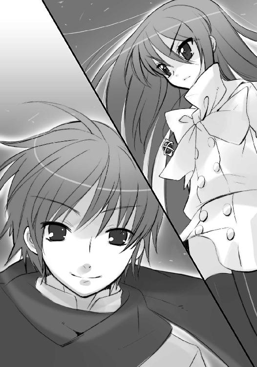
アラストールが端的かつ核心を突く問いを投げかけた。
両主塔の間は数十メートル離れているが、人間を超えた者なら容易に会話も可能である。
そうと証明するように、悠二は笑いの奥に感慨をたゆたわせて、答えた。
「余を見紛うとは悲しいぞ......〝天壌の劫火〟よ」
声は少年のまま、口調だけを変化させた彼の意図を、アラストールは訝しむ。
「余、だと？」
翻訳の自在法『達意の言』を瞬時に繰って、その意図するところを探るが、分からない。
答えは不完全な形で、少年と見えるモノから放られる。
「いや......察せられぬのも無理はない、か。この世で発した声を、綴った言葉を、余に遅れて渡り来たおまえは、直に聞いていないのだからな」
「なに？」
漠然と心中に湧く不安を、アラストールは戸惑いの声として漏らした。
「貴様、いったい──」
と、そこに、
「どーせ三眼のババアが作った玩具なんでしょ？ ──あの〝銀〟を組み込んだ、ね!!」
マージョリーの声が、遠く割って入った。
マルコシアスも唸りを上げる。
「ったく性懲りのねえ......今度こそ分捕まえて、洗いざらい吐かせてやるぜ」
悠二は、喧嘩に逸ると見えて、実は自分を細かに観察している『弔詞の詠み手』を、
「恐らくは洗脳を受けた、あるいは何者かに意識を乗っ取られたようでありますな」
「所為未熟」
同じく、冷静に見えて、心の内に激しい怒りを隠すヴィルヘルミナとティアマトーら『万条の仕手』を、それぞれ見やった。
正面に立つシャナと、丁度三角形を描くように後方、左右の土手に立っている。
分かりきっていた周到な包囲に、苦笑が湧く。
「やっぱり、行く道ですれ違った連絡員から、通報されたのかな？」
また年相応な口調に戻った、しかしらしくない自信に溢れた様子の少年に、マージョリーは先制攻撃として一言、事実を突きつける。
「ええ、ケーサクからね」
「！」
これには悠二も、本当に驚いた様子を見せた。マージョリーとしては、精神の動揺から洗脳を解く隙ができないか、という試みでもあったのだが、彼は重く、友人の行為を糾弾するだけである。
「連絡員......そういうことか......なんて危険なことを。この大きな戦いが起きる時期に、自分から火の中に飛び込むなんて、軽率にも程がある」
「あんたが──」
マージョリーは逆に、あの若者のための怒りを覚え、思わず怒鳴っていた。
「あんたが、消えたからでしょうが！」
「!! ......そう、か」
事情を大筋察したらしい少年は、沈痛な面持ちも僅か、強烈に笑う。
「佐藤も、覚悟を決めて自分の道を選んだんだな。なら、それを咎めたりはできない......いや、むしろ、あいつの選択を重んじて、喜ばなきゃいけないのかな」
友人を祝す彼を、今度は反対側の土手から遠く、
「随分と調子のいい物言いでありますな」
「驕慢不埒」
ヴィルヘルミナらが吐き捨てた。その心中には困惑が広がっている。
彼の見せる言動には、操られている、という自分のなさが感じられない。どころか、自身何らかの企図を抱き、確固とした意思の元で動いている、という自我の芯までをも感じさせられる。正直、得体が知れず、不気味だった。
不気味な少年──そう、なにかを企んでいる坂井悠二は、ここに在った頃のように謝る。
「すいません、カルメルさん」
謝って、それだけで終わらない。
「でも、これからやろうとしていることを実現するためには、それくらいの調子のよさ、意気込みが、絶対に必要なんです」
その声を受けてアラストールが再び、今度は操られる人形ではない、主体性を持った何者かへの追及を行う。
「貴様は、坂井悠二なのか」
「ああ。余は、坂井悠二だ」
再び、奇妙な一人称で断言して、
「ただし、それはこの世における通称。真名は当然、他にある」
別の調子で、自分の主体が何処に在るかを明言せず、悠二は笑った。
「真名、だと？」
アラストールは不興を覚える。
真名とは〝紅世〟における言わば本名で、アラストールであれば『全てを焼き尽くす』意をこの世の言語で〝天壌の劫火〟と訳し、表明している（一方の『アラストール』は、この世において付けられた通称であり、各々の〝徒〟で由来も付け方も異なる）。
特に彼は〝紅世〟の世界法則を体現する存在、即ち『神』ということもあり、何らかの目的で作られたモノが真名を持つことへの拒否感情も強かった。
その作りモノである悠二が、クスリと笑う。
「誤解してるみたいだね」
それなりに長く付き合ってきた〝紅世〟の魔神の心中を正確に察して、また口調を悠然としたものへと変えて、説明する。
「余は、あの〝銀〟なる作りモノと同一の存在ではない。あれらは、余の意思をこの世で再現するための装置、その断片の現れに過ぎん......対して、今ここに在る余は、真名を名乗る資格を、持っている」
「なんですって？」
「どういうことでえ」
その正体に執心するマージョリーらの不審を、
「では、一体あなたは」
「誰何」
眼前の脅威として警戒するヴィルヘルミナらの疑念を背に、
「これを、見れば分かりますよ」
ただ正面、第一声から無言のままでいるシャナだけを見据えながら、悠二は微笑む。
「この、炎を」
血の色を、僅か翳らす夕焼けの中──その影が不意に、異様な〝銀〟色を点し、
「封絶」
声とともに、広大な一帯を埋めて、炎が湧き上がった。猛烈な圧力と迫力を伴ったそれは、地面に奇怪な紋章を結晶させ、頭上に陽炎のドームを形成する。
湧き上がった炎は、銀色ではなかった。
誰もが知識として知る、その色は、
全てを染め上げ塗り潰す、黒。
旧依田デパートの上層階、玩具の山に囲まれた箱庭で、
「ふ、封絶か」
田中が戦慄の声を上げた。
御崎市を精巧に象った箱庭たる監視用宝具『玻璃壇』に、奇怪な紋章が浮かび上がる。
いつ見ても、人間には怖気しか呼ばない光景だった。
特に田中にとっては、封絶それ自体が恐怖の体験を呼び起こしてしまう。それでも、
「吉田、さん......？」
まだ他人を気遣えるほどの余裕があった。それとも、気遣うべき他人がいるから、我を保っていられるのか。押し付けるべき佐藤がいない今、ここに立っているように。
「大丈夫、です」
声をかけられた吉田は、全く大丈夫そうではなかった。
（無理もない、よな）
田中は友人として気遣い、箱庭の中央、主塔に点る灯火を見つめた。
これこそ、佐藤が知らせてきた、御崎市に接近する何者か──坂井悠二だった。
フレイムヘイズ側の発する声は全て、田中の持つ付箋──封絶の中でも動くための守り札でもある──越しに届いている。そこから、シャナの声で『悠二』と聞こえた瞬間、まさに崩れかけた吉田は、しかしなんとか、少なくとも見かけには堪えて、箱庭の一角に座っていた。
（本当は、走ってでも会いに行きたいんだろうな）
付箋の、相手の声が聞こえないという仕様は、この場合良い方に転んでいるのか、それとも悪い方に転んでいるのか......悠二がなにを言い、なにを思って帰ってきたのかを、彼自身の言葉では伝えていない。どうやら、フレイムヘイズたちにもよく分からないらしい、という程度には、会話の流れも把握できた。そして今の、封絶。
（黒い、炎、なのか？）
直下から吹き上がっていく場面と直に遭遇しても、闇との区別がつかない、なにか根源的な恐怖を感じさせる、田中でなくとも初めて見るだろう、輝かない炎だった。
その不安からの脱出、事件の解決、友人の奪回を、少年は箱庭に三つ点る光に託す。
（姐さん、シャナちゃん、カルメルさん、頼みますよ......）
眼下広がる『玻璃壇』は、監視用の宝具と言いながら、表示するのは人やトーチ、自在法のみで、フレイムヘイズや〝徒〟は感知できない。今、悠二を三角形に囲んで光点が見えているのは、マージョリーが各々に渡した付箋の効果である。
田中に課せられた役割は、この『玻璃壇』に怪しげな自在式か自在法が表示されたら即座に伝えることだったが、今のところ、封絶以外に自在式の展開は示されていなかった。
細い目を血眼にして、主塔の上に在る光点の動静に注目する。
（なにやってんだよ、坂井......この街を、守りたいんじゃなかったのかよ）
友人が敵として帰ってきたという事実の悔しさと苦しさ、まるで自分だけが取り残されたような孤独感に、動揺からではない涙が零れそうになって、思わず袖で拭う。
（強くてすげえおまえが、なんで〝徒〟の手先なんかに......こんな、こんな情けなくて弱っちい俺でも、こうやって恐いのを我慢してやってるってのに、なんでだよ）
自分を囲む『玻璃壇』、御崎市を表す箱庭の中で、田中は守らねばならないものの大きさを、自分の小ささ頼りなさゆえに感じていた。その大事さも、同時に。
（俺なんか、今のこれで、もう一杯一杯だ）
街の一隅にある、御崎高校を見る。
一時、悠二が緒方に遭遇したと聞いて肝を冷やした場所。
（お前たちとは違って、俺にはこれが大きすぎるんだ）
大事に思ったものを、意識する。
それは、自分を好きだと言ってくれた少女と、この街という、大きなもの。
（なんで、よりにもよって、こんなときに佐藤の奴は──）
不在の親友を、嫉妬とともに思って、
（佐藤、は──）
己の背負う重さに苛まれる中で、彼は不意に気付いた。
（佐藤は、出て行けた......なんで、出て行けたんだ？）
この苦しみを総身に受けていたからこそ、気付いていた。
悲劇を目にした、しない、というだけではない、自分と友人の差異が、どこに生じたのか。
それは親友が、この街を出ることができた、という行為にこそ示されていたのではないか。
本当に守りたいと願ったものが、今の自分と違っているのではないか。
彼が外界宿という道を選んで、揺るがなかった理由は、そこにあるのではないか。
自分がそんな彼の姿に、激しい嫉妬を覚えた理由も、そこにあったのではないか。
（佐藤の、守りたいものは、まさか）
彼らが無邪気でいられた頃、常々口にしていた言葉を、思い出す。
『マージョリー・ドーに付いて行く』
憧れのままに自己鍛錬を行って、戦いが起これば駆けつけて、彼女の役に立とうと懸命に頑張ってきた。それほどに、彼女は少年らにとって魅力的な存在だったからである。
しかし、佐藤が見せた、あの落ち着いた態度の中に、かつて彼を暴走や狂騒に走らせた熱っぽさは、見出せなかった。
（俺は、それに、気付いていた？）
先に一歩を踏み出されただけではない。彼の在り様が変わったことを、彼に異なる理由が生じていたことを薄々にでも感じた、ゆえにこそ、あの嫉妬が湧いたのではないか。
今まで区別したことがなかった、意識に上らせることすらなかった、好きという言葉の中にある差異。田中にとって、マージョリーと、例えば、そう......緒方に対するものは、確かに違っている。憧れる気持ちが強烈過ぎて、違いがあることなど考えもしなかった。
（でも、佐藤は）
もしかして同じなのではないか。
そこに、ようやく思いが至った。
（俺の、羨ましい、ってのは、そういうことなのか）
佐藤啓作は、自分も憧れた力の象徴たる女に、男として惚れた。
そのために、だからこそ、躊躇なく街を出て外界宿に飛び込む道を選べた。
田中栄太は、そんな親友の姿に、同じ場所にいた少年として嫉妬を覚えた、と知った。
（だから俺は、こんなに悔しいんだな、畜生！）
確かに佐藤は格好良い......しかし田中は一方で、親友に対する、嫉妬ではない反発を、少年として覚えていた。自分が震えるのは、大きなものを背負っているからだ、大切さを知っているからだ、と無理矢理に己を鼓舞した。それくらいは、自分も格好をつけたかった。
（姐さん、坂井の奴をふん縛って、帰って来た佐藤に見せつけてやりましょう）
青ざめる顔で、震える体で、田中栄太は『玻璃壇』に目を落とす。
封絶してからの長い沈黙にどんな意味があるのか、彼は知らない。
「──」
在り得ないものを見たアラストールが、呆けていた。
「アラス、トール......？」
シャナが沈黙の意味に気付いて、答えを促した。
が、常なら返ってくる冷静な説明が、来ない。
マージョリーとマルコシアス、ヴィルヘルミナとティアマトー、いずれもが、眼前に現れた事象に心底からの意表を突かれて、茫然自失していた。
夕焼けを黒い世界に塗り替えた悠二は、ふっ、とその身を浮かせた。
「これが、余の炎」
右腕を、まるで見えないマントでも引っ張るかのように、斜め前へと振り上げる。いっぱいに緊張させた腕を、今度は大きく払うように真横へと払った。
瞬間、
腕の周りに巻いた黒い炎が少年の全身を包み、また一瞬で消える。
宙に残されたのは、異形異装へと変わった、何者か。
「そして、これが今在る、余の写し身」
身に鎧ったのは、厚き凱甲、緩やかな衣──全てが緋色。
後頭から、髪のように長々と伸びたのは──漆黒の竜尾。
「称して余......〝祭礼の蛇〟坂井悠二」
異装に変わった少年を宙に見上げて、アラストールはようやく名乗りをなぞる。
「──〝祭礼の、蛇〟？」
なぞってから、
「っ〝祭礼の蛇〟だと!? 馬鹿なっ!?」
言語の示したものを許容できず、叫んでいた。
一方のシャナは、事態の推移を飲み込めないまま、その真名の意味するところを、ゆっくり確かめるように呟く。
「......『創造神』......」
はるかな太古。
この世に渉る方法が見出されてから、無数の〝紅世の徒〟が『歩いてゆけない隣』、己が欲求を様々な形で実現させる楽天地へと飛び出していった。
侵略、などという纏まった考えはない。単純な好奇心から旺盛な知識欲、原始的な物欲に異世界への探求心、志向野心の高低を問わず、また〝紅世〟に逼塞する弱小の〝徒〟から、名も誉れも得ていた強大な〝王〟まで、ただ欲し求める、その思いのままに、飛び出した。
その中に〝紅世〟における世界法則の体現者、『神』の一柱であった創造神〝祭礼の蛇〟が混じっていたのは、決して偶然でも、不作為の結果でもない。なんとなれば彼は、その権能として、造化と確定という、踏み出し見出す力をこそ司っていたからである。
「つまり、彼奴は理の当然として、新たに見出された世界に溢れた、同胞らの進取の気風に惹かれ、原初の接触に誘われ、この世に降り立ったのだ......始まりの神であるがゆえに」
自失の動揺を声の端に残すアラストールが、重く、重い上にもなお重く、語る。
「新たな、ものを流れを作り出す、それをこそ権能とする彼奴は、この世に溢れた流れにも同じく、三柱の眷属とともに現れ、求められるまま、多くのものを同胞らに齎した」
良いも悪いも、彼には関係ないのだった。余地があればそこを埋め、未踏のものには手を伸ばした。それこそが、彼の神としての存在理由だったからである。
「だが──己が権能に溺れ、世界の在り様にまで手を出した彼奴は、太古の世に生み出されたフレイムヘイズらの手によって〝久遠の陥穽〟の彼方へと葬られた」
そう、異界に異物を振り撒き続けた彼は、高転びに転んだのだった。
転んで、追い出されたはずなのだった。
「その不帰の秘法で追い払われた『御伽噺の神様』が......なんで、こんなとこにいんのよ」
「あそこはあらゆる法則から外れた、神さえ無力な世界の狭間、なんだがな」
マージョリーらが、伝聞で知る『神殺し』について呟き、
「主なしの［仮装舞踏会］が動く......そういうことだったのでありますか」
「慮外事変」
ヴィルヘルミナらは、眼前の思わぬ現象に狼狽を見せる。
その在り得ない存在は、いつしかシャナの立つ主塔の頂に近付いていた。
「シャナ」
悠二の姿をした別のモノが自分の名を呼ぶことに、欲した姿の歪な紛い物が近付いてくることに、シャナは猛烈な拒否感を湧き上がらせた。一歩、退きそうになるのを、
「違う」
背を伸び上がらせて耐え、逆に一歩、前に踏み出す。
同時に、瞳と髪が黒を排除し、紅蓮に染まった。黒衣『夜笠』を纏い大太刀『贄殿遮那』を抜き、火の粉を舞い咲かせて、『炎髪灼眼の討ち手』は、姿と言葉で立ち向かう。
「おまえは悠二じゃない」
「シャナ」
自分の焦がれ憧れた、凛々しい少女の姿を見つめる悠二は、自分だからこそ分かる硬さ、緊張、その意味を理解して、目を細めた。近付く速度を同じくしたまま、答える。
「違う。坂井悠二なんだよ」
凱甲で固め衣を揺らす手を、ゆっくりと、差し伸ばした。
欲する少女、眼前で勇む姿を硬くする少女を掴むように。
「シャナ──、っ！」
言いかけた背後、舞い上がる人影の気配を察して、悠二は宙で鋭く一回転する。後頭の竜尾が大きく撓って伸び、強襲したそれ、マージョリーの横腹を強く叩き潰した。
と見えた瞬間、
「むっ!?」
細い女性の体がガラスのように砕け、竜尾に纏わりついて自在法と結晶し、気付けば、長大なこれを宙に縫い止めている。
引っ張られて、ガクン、と体勢を崩した悠二の頭上から、
「成敗！」
ヴィルヘルミナが幾条ものリボンを豪雨のように降らした。
ドドドドッ、と無数、その体に突き刺さって、悠二はシャナの眼前から落下する。
「悠二！」
と、シャナが叫んだ遥か下で、ズン、と落着音がした。
傍らに、狐のような仮面とリボンの鬣、という可憐な戦装束となったヴィルヘルミナが、桜色の火の粉を舞い散らせて降りてくる。
「話は、まず捕縛してからのことであります」
「危険存在」
仮面に変化したティアマトーからも短い注意が来た。
「そーいうこと！」
と、もう一つの主塔上に立つ、寸胴の獣と見える炎の衣から声が届いた。『弔詞の詠み手』の戦闘形態〝トーガ〟である。
「騙りにせよマジにせよ、あの伝説の『天裂き地呑む』化け物を名乗ってんのよ！ なにされるか分かったもんじゃ──ないわ!!」
言いつつ、炎の獣は遠慮無用、特大の炎弾を落下点に投げ落とした。封絶で停止した、橋上にある車両や人間を、真南川に多数、吹き飛ばす大爆発が起きる。
が、その炎渦巻く中心点。
御崎大橋に開いた大穴の中、ゆっくりと浮かんでくる影がある。黒い炎を全身から撒き散らす、少年。その凱甲や竜尾はおろか、衣や肌にさえ、一点の焦げ目も見えなかった。
マージョリーは舌打ちし、
「やっぱ、そう簡単にはいかないか」
「今さら弱音たあ不甲斐ねえ。我が鋼の拳骨、マージョリー・ドー。お探しの兄ちゃんがノコノコ現れたんだ。とっととボコって、嬢ちゃんに詫び入れさせんのが正解だろうよ」
ようやく動揺から立ち直ったアラストールが、重い声をゆるりと紡ぐ。
「うむ、ともあれ詮議は──」
ガン、と鉄を鳴らす、
「生憎だけど」
重い靴音に気付けば、
「シャナだけに、用があるんだ」
驚いたシャナの眼前、主塔の頂に、悠二が足をかけていた。
その傍らに立つヴィルヘルミナ、
「むっ!?」
向かいの主塔上に在るマージョリー、
「この──」
二人の視界を、分厚く広がった銀色が覆い隠す。
悠二の上昇に伴い、その足元から伸びた鎧の破片や歯車、発条にクランク等をグシャグシャに混ぜた膨大な銀色の濁流が、まるで洪水の溢れるように、まるで爆発の膨らむように、巻き上がっていた。濁流は広がりの頂点から急速に収束し、御崎大橋の中ほど、二つの主塔を丸ごと包み込む、巨大な球状の牢獄と化す。
その封鎖から空に逃れたのは、二人。
手を繋いだ、二人だけ。
「シャナ」
「悠、二」
紅蓮の双翼を背に燃やすシャナは、手を引いて浮かぶ悠二を灼眼で見つめること数秒、
「──っ放して!!」
グッと眉を顰めて、手を振り払った。
悠二は少し驚いて、しかしすぐに悪戯っぽく笑いかける。
「余を捕縛するのではなかったのか、〝天壌の劫火〟？」
「本当に、貴様なのか......〝祭礼の蛇〟」
己が〝紅世〟に留まる間に、帰還不能の死地に葬られたはずの同胞にして同格たる存在。その思わぬ生存に、アラストールの声は常になく上擦っている。
「いったい、その姿はどのような趣向の戯れだ」
「戯れなんかじゃないさ。必要だったんだよ、お互いに」
「悠二の声で喋るな!!」
少年の口調で答えたそれの咽喉元に、シャナは『贄殿遮那』の剣尖を突きつけていた。切っ先は揺らがず、ただ硬い。
「......」
「......」
二人は微笑みと怒り、対照的な表情で睨み合った。
その間も数秒、悠二は屈託なく、決定的な申し出をする。
「シャナ、一緒に来て」
「!?」
より硬く動かなくなる剣尖越し、強く眉根を寄せる少女に、さらに一言。
「君を、迎えに来たんだ」
「貴様......！」
アラストールは今さら〝祭礼の蛇〟の企図、そこに込められた悪辣さに気付かされ、心底からの憤激に駆られた。
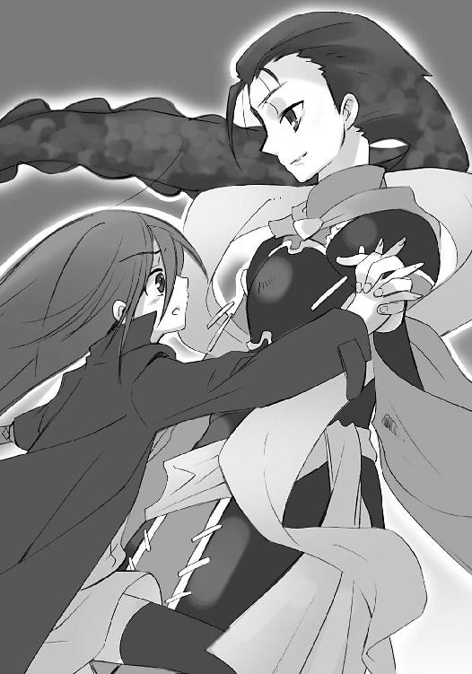
創造神を掣肘できるのは、同じ神にして審判と断罪を司る天罰神〝天壌の劫火〟のみ。そして、天罰神の権能を全力で発揮できるのは、その契約者たる『炎髪灼眼の討ち手』のみ。
ゆえにこそ、彼は自らシャナを捕らえに来たのである。
シャナが想いを寄せる少年の身を借りて。
あるいは、乗っ取って。
「君と共に、生きたいんだ」
「──て」
「？」
シャナが、声を小さく零していた。
「──どうして」
剣尖を支えていた硬さが、一番欲しかった言葉を受け、限界を超える。
超えて、崩れる。
「どうして今、そんなこと言うの」
「違う、今だからこそ、言えるんだ」
咽喉元で揺れる剣尖を前に、悠二は断言した。
「この、今だからこそ......」
そうして、剣尖を掴もうと、ゆっくり手を上げる。
と、二人の直下、
「！」
ズン、と振動が走った。
悠二が見下ろせば、銀色の影で編み上げた牢獄の一部が、内側からの圧力に拉げ、裂け目を作っていた。中の二人が、早々に出てこようとしているらしい。
「さすがだな、あの程度じゃ足止めにすらならなかっ──シャナ!?」
彼にも全く予想外なことが起きた。
シャナが、空から零れ落ちるように、降下していた。
シャナが──『炎髪灼眼の討ち手』が、逃げていた。
「そう、か」
溜め息を吐いた悠二は、自身も眼下遠く、真南川の水面に向けて降下を始める。
「やっぱり、こうするしかないのか」
逃げる彼女を追いかける、という経過は予想していなかったが、目的は一緒と思いなおす。
彼女を捕まえ、連れ帰る。
予定通り、それを果たせばいい。
前方、真南川の水面が近付いてくる。
その間に、炎を尾と引く紅蓮の双翼が見えた。
「待ってよ、シャナ」
言って、手を差し伸べる。今度は、ただ差し伸べるだけではない。その腕から湧き上がった黒い炎が、絡み合う蛇の形を取って、掴むべき少女の背を追った。
追いすがるそれに気付いたシャナは、
「！」
水面ギリギリになって足裏に爆発を生み、水の破裂による撹乱と、方向の急転換を行う。
逃れた後方の水面を炎の蛇が突き破って、新たな水蒸気爆発が起こった。
濛々と一帯を覆う水煙の中、
「邪魔されるのは困るな......マージョリーさん」
引き離されることなく後を追ってくる悠二が、小声で呟いている。どうやらシャナにではなく、牢獄から脱出しつつあるマージョリーらに向けて、声を送っているものらしい。
「少しだけ、そこで大人しくしていてはもらえませんか？」
「もらえるわけないでしょうが!!」
銀の牢獄内に、凶暴なマージョリーの怒声が轟き渡った。
トーガの口からは、彼女の怒りを煽る牢獄をぶち破るための、力の充溢を示す群青色の火の粉が吐息に乗って吐き出されている。と、それが一息吸われ、『弔詞の詠み手』必殺の自在法を編み出す『屠殺の即興詩』の朗詠が始まる。
「ハンプティ・ダンプティ、塀に座った！」
マージョリーの歌声、
「ハンプティ・ダンプティ、転がり落ちた！」
マルコシアスの歌声、
「王様の馬を集めても！」
「王様の家来を集めても！」
二人の声が交互にかかるごとに、その腹が大きくなり、
「ハンプティを元には──戻せない!!」
マージョリーの結句を受けて、その口から数十の自在式が飛び散った。
それらは、鏡でできた卵の殻とも見える、分厚い物理的な装甲の内側に貼り付き、一瞬で周囲に浸透、殻を渦巻きのように捻り始める。既に幾度か、その強烈な力を受けた装甲は大きく歪んで、突破も間近と思われた。
続いてヴィルヘルミナが、
「はあっ！」
硬化させたリボンによる鋭い刺突を数十、渦の各所へと立て続けに打ち込んでゆく。リボンは当然、ただの刺突ではない。その上には、自在法の解除を行う自在式が桜色に輝き載せられており、殻の修復機能を阻害している。
この僅か数度の反復によって、銀の牢獄は早くも罅割れ、隙間に外の景色を晒している。
と、牢獄内に、
《マージョリーさん》
悠二の声が反響を伴って響いた。
「ユージ！」
《余の話を、少し聞いてもらおう》
「『弔詞の──」
「分かってるわよ！」
ヴィルヘルミナとマージョリーは牢獄の中空で、戦装束とトーガの背を合わせる。新たな攻撃か情勢の変化かに備えるが、攻撃の仕掛けられる気配は感じられない。
《こっちに来て、知ったことがあるんです》
ただ、声だけが響いた。
声だけは少年のまま、口調だけが悠二と〝祭礼の蛇〟双方を揺れ動く語り様に、いい加減イラついたマージョリーは、自分を囲むものへの不快感も加えて、再びの怒声を轟かせる。
「ふん、女の上手な口説き方は教えてもらってないみたいね、ユージ！ 縁結びの神様にでも鞍替えしたら!?」
《今さら、そういうわけにも行きませんよ》
大して堪えた風もなく、声は返した。
《それより、気になっていることがあるでしょう？ この〝銀〟のこと......》
「!!」
まさか向こうから言い出してくると思っていなかったマージョリーは、先の余裕も忘れて口をつぐんだ。言葉を一片たりと聞き漏らさないように。
背中を合わせるヴィルヘルミナは、悠二が唐突に持ち出した話題──恐らくはシャナと戦っている最中であるはず──に、仮面の下で怪訝な顔を作った。
（なぜ今、そんなことを？）
（制止!!）「よせ、聞かせるな!!」
パートナーの声なきもの、マルコシアスの声あるもの、二つの叫びが同時に上がった。
これらに叩かれて、ヴィルヘルミナもハッと気付く。
今さら唐突に〝銀〟の話題が持ち出されたのではなく、今だからこそ持ち出されたのだとしたら？ マージョリーが一番知りたがっている、逃げずに耳を傾ける情報と知って、そこに罠を仕掛けているとしたら？ 相手は他でもないあの少年、自分たち御崎市に在るフレイムヘイズらの長所も短所もよく知っている、坂井悠二なのである──!!
（いけない!!）
背中を殻に晒す危険を冒して、後ろからトーガを押さえ込む。
「聞いてはならないのであります！」
が、全く当然のこととして、マージョリーはこれを振り払った。
「黙ってて!!」
「聞くんじゃねえ、罠だ!!」
「危殆情報!!」
《では、お話ししましょう......まず》
「「!?」」
「「!?」」
二人にして四人のフレイムヘイズらは、各々の態度で慄きを示した。
《周りを、見てください》
注視を求めるまでもない。
彼女らを囲っていた銀色の殻が......全て、あの汚れて歪んだ西洋鎧に、変わっていた。
その全てが、まるでガラス張りの壁の向こうにいるように、殻の形にへばりついて、中にいるフレイムヘイズらを覗き込んでいた。まびさしの下、奥底に光る無数の目が、目が、目が、目が......彼女らを。
「────────ッ!!」
マージョリーの、言葉にならない恐怖の悲鳴が、空を裂いて走った。
黒い封絶に覆われた住宅地を、シャナと悠二は追いつ追われつ、
屋根を蹴り、塀を越え、庭先に道路に標識に降り立ち、
「それより、気になっていることがあるでしょう？ この〝銀〟のこと......」
また低く前に、速く鋭く、跳び交っていた。
「では、お話ししましょう......まず」
悠二の小さな呟きに、ヴィルヘルミナら同様に罠の危機を察したシャナは、
「悠二！」
屋根の一角を急角度に蹴り返して反転、言わせまいと切りかかった。
悠二はすぐ横、マンションの壁面を炎の蛇で叩いて避け、説明を続ける。
「周りを、見てください」
言いつつ、三階建て民家の壁面に着地して、そのままバックステップ。正面、落下しながら繰り出されるシャナの斬撃をかわしてゆく。背中を土につける寸前になったところで、これ見よがしに足裏を爆発させて地面スレスレを飛び、後頭の竜尾で地を強打、一気に遠くへと離脱する。その間も、説明は続いていた。
「鎧に見えるそれらは、〝徒〟などではない。全て、人間から採集された感情の断片を具現化したものだ。あまねく世界、あらゆる時代に湧き上がった、種々の強烈な感情を映し出した、いわば心の鏡......」
マンションの屋上に立ち、少女が追ってくるのを待つ。
「無数に集められたそれらこそが、この余の人格をなぞる機構を構成するための、部品」
言う頭上、紅蓮の双翼で加速したシャナが、踵を先端にした弾丸となって降下してくる。
燃え立つような喜悦を面に表す悠二は受けて立ち、後頭の竜尾を一振り、差し向けた。
「この鎧は──」
鉄の鞭とも見える空を掃く一撃よりさらに速く、シャナは直下へと突っ切った。
咄嗟にかわした悠二の背後、蹴りがマンションを真っ二つに叩き割る。その粉塵立ち込める中、傾いた屋上を歩く彼は、さらなる言葉を連ね、
「強烈な感情を持つ人間の元に、ただ現象として現れる。感情を採集する対象たる人間の欲求や願望を代行し、以って感情の在り様を写し取る。そんな、ただの物体だ」
直下からの爆発を、大きく飛びあがって回避した。
と、吹き上がる爆炎が突然、
「っ!?」
巨大な剣の形を取り、さらに一瞬で細く収縮、大爆発を起こす。
これを至近で受けた悠二は、大通りを一直線、川面への石投げのように叩き付けられた。点から線にアスファルトを砕き、車を幾十台も弾いて跳ね飛んでゆくが、
「貴女の代行者は、貴女の憎しみの姿。貴女の見た嘲笑は、貴女の秘めていた思い」
その中でも変わらず、声は零れている。
爆心地から飛び上がったシャナが灼眼を凝らせば、悠二の体を竜尾が幾重か、球状に緩く取り巻き、防壁となっていた。ダメージらしいダメージは見られない。
「分かりますか？ 貴女の前に現れた〝銀〟は──」
軽く首を振って、竜尾を戻した悠二は、ゆっくりと浮き上がって、シャナと遠く対峙する。
そうして、あまりに平然と放られた言葉が、
「──貴女が本当に行いたかったことを、代わりにやっただけなんですよ」
マージョリーへの完全なとどめを、刺した。
数秒の沈黙を経て、
「終わったよ」
「悠二......！」
悠二は変わらず微笑み、シャナは怒りを露わに、声を交わす。
「ついでに〝銀〟たちを動かして、カルメルさんを足止めさせてる。いくらあの人でも、今のマージョリーさんを抱えたままじゃ、脱出に相当の時間を食うだろうね」
「......」
シャナは、言いたくない言葉が口を突いて出るのを、力で抑え込もうとする。
そんな少女の気持ちを余所に、悠二は微笑みの底から、燃え立つような喜悦を面に浮かび上がらせた。本当に待ち望んでいた時を祝福するように、告げる。
「これでやっと、二人きりだ」
「......悠二」
もうここが限界だった。
シャナは悲愁を抱き、なお言うしかなくなっていた。
決して言いたくなかった、最終宣告を。
「私はあなたを、討滅する」
「......」
今度は、悠二が黙った。
俯いて目を瞑り、すぐまた見つめ直す。
喜悦だけはそのままに、面は鋭く引き締まっていた。
「......うん、分かってたよ」
自分に突きつけられる大太刀『贄殿遮那』の剣尖を見やって、腕を大きく振る。
その動作の終点で、いつしか幅広の刃を持つ片手持ちの大剣が、握られていた。
宝具『吸血鬼』だった。
敵たる〝徒〟、〝愛染自〟ソラトの武器として齎され、マージョリーや佐藤らを経て悠二へと渉った大剣は今、さらなる数奇な転換として、悠二の手の中、シャナに刃を向ける。
悲愁と喜悦、互いの表情を遠く突き合わせて、
「──」
「──」
二人、僅か仰け反って、前へ飛ぶ。
見る間に距離が詰まって、
「っはあ！」
「ぇやあ！」
ッガン!!
と破裂にも似た音を立てて、正面から激突した。火花で顔を照らし合い、空に紅蓮と黒の火の粉を混じり合わせ、即座に衝撃の反発で飛びのく。
シャナは離れる間にも炎弾を次々と放つが、悠二は低く家と家の狭間を飛んで、これを巧みにかわした。代わりに被弾した家が、紅蓮の炎を上げて吹き飛んでゆく。
「シャナ、君は絶対に屈さないんだろうね」
爆音の中に、声が混じった。
シャナはその後を追いながら、呟く。
「うるさい」
「だから、こうして戦うしか、互いの間に道はない」
言い終えた瞬間、竜尾を路面に打って悠二は反転、飛びかかった。
振り下ろされる大剣『吸血鬼』の特性を知るシャナは、半秒、刃を掠らせ、いなす。思わず叫びが口から零れていた。
「うるさい！」
「戦って、この道を通って、君のところへ──」
「うるさい!!」
言わせず、黙らせた。空中、紅蓮の双翼を真横に吹かして体勢を反転、すれ違った悠二へと背後から、勢いを付けた『贄殿遮那』を奔らせる。
が、
悠二も同じく、すれ違った瞬間に体を振り向かせていた。翻る衣の向こうから『吸血鬼』が奔り、まさしく狙っていた一瞬一撃に力を込める。
刃が合わさった瞬間、幅広の大剣に血色の波紋が揺れた。
「う、ぐっ！」
シャナの二の腕が一線、切り裂かれた。剣に〝存在の力〟を注ぎ込むことで、触れた相手の体を切り刻む、これが宝具『吸血鬼』の能力なのだった。
警戒していながら、まんまと一撃を受けた己の不覚、会話をすることでその不覚を引き出した悠二、双方への痛みに苦悶するシャナへと、遠慮容赦のない追い討ちの斬撃が来る。
「っはあ！」
「くっ！」
シャナはこれをバック転するように避け、回転の途中、向けた背の双翼を爆発の勢いで吹かし、斜め下からの高速回転で逆袈裟に切り込む。
振り上げた体勢の悠二、『吸血鬼』の刃から最も遠い距離から来る攻撃を、
「っむ！」
しかし代わりに後頭から伸びる竜尾が受け止め、逸らし、その端で叩いた。
シャナはこの打撃を受け止めて逆らわず、跳ね飛ばされる勢いに紅蓮の双翼の推進力を合わせて一挙に距離を取った。そのまま、追ってくる悠二と大きく螺旋を描くように飛び交う。
（やりにくい）
少女としてではなく、戦士として『炎髪灼眼の討ち手』は思った。
どうも通常の意味での腕力は、相当に強いらしい。一撃の重さや速さが並ではなかった。剣技や体術ならシャナの方が圧倒的に上回っているが、悠二の『吸血鬼』は剣による格闘を主体に戦う彼女にとって天敵とも言える宝具である。おまけにあの竜尾の防御力。
（いつもなら）
今、刃を向き合わせている彼こそが、こんな苦境を破ってくれるはずなのに──。
（っ、いけない！）
己の弱気を自覚して、驚きと焦りを抱く。この街に定住することで、彼と戦うことで無意識に芽生えさせたらしい、頼る気持ちを振り捨てるように、背の翼に力を込める。
御崎市中央を覆う広い封絶の空を、二人は留まらず高速で飛び続ける。
（私の力を、悠二は知ってる）
シャナはその、常ならば嬉しさを齎す思いを重く抱いて、一吹き、両翼の噴射の向きを横に揃える。速度を保ったまま一瞬で反転、一溜め、噴射して数秒前と逆方向に突進した。
追ってきた悠二の意表を突く速度で接近し、
ギャリッ！
と一瞬よりも短い激突があって、またすれ違う。
その余韻が鼓膜を震わせる離脱の間に、シャナは再び体勢を反転、
「はあっ!!」
切っ先で指すや、紅蓮の大太刀を撃ち放っていた。炎弾とは比べ物にならない膨大な熱量が塊となって少年の背中へと叩き込まれる。対象に衝突した炎が膨れ上がって、宙に破裂音を伴う大輪の花を咲かせた。
「──」
その中から、
「──っ」
竜尾を翻し、凱甲と衣に身を包んだ少年が、片手で大剣を振るい飛び込んでくる。
「──っ！」
彼の身を球状に守る結界は、シャナにもよく見覚えのあるものだった。
彼が紐に通して首にかけているはずの宝具、火除けの指輪『アズュール』。
（やっぱり、私の力を、悠二は知ってる）
大剣『吸血鬼』による斬撃は、迂闊に受け止めることはできない。
炎弾を打ち放っても、紅蓮の大太刀でさえ『アズュール』で防がれる。
相性というものの最悪の結実、彼と一緒に戦っていた宝具による襲撃を前に、
（どこまで具現化できる!?）
シャナは、左手で大太刀を受け流す姿勢に構え、右手を腰だめに掻い込んだ。
不審げな表情を過ぎらす悠二へと、
「!?」
「っはああああ!!」
気合一閃、右の拳を繰り出した。
その風切る先端で、炎が巨大な拳と結晶する。さらに腕の伸張と同調して巨腕を形成、切りかかろうとしていた少年に、ただの炎ではない、具現化した挙撃としてぶち当たった。
「う、ぐあっ!?」
結界があることで油断していた悠二は、炎と見える物体の痛打を受け、吹っ飛ぶ。燃える流星のように住宅地へと落下し、何軒かの家を弾けさせて、ようやく止まった。
シャナは、すぐ来るだろう反撃に備え、中空をゆっくりと舞う。
が、どういうわけか悠二は、一跳び、民家の屋根に飛び乗った。
そして、そのまま動かない。
「......？」
あの程度で致命傷のわけはない、なにかの罠か、と警戒したシャナは、すぐに気付く。
「──！」
少年の立つ場所を、少女はよく知っていた。
悠二が、その場所を選んだことも、分かった。
怒りとも悲しみとも付かない感情が胸に渦巻く。
黒い封絶の中、闇に埋もれて立つ、二階建ての家。
表札には、坂井、とある。
旧依田デパートの暗闇を劈いて走る、誰もが初めて聞くマージョリーの狂乱の声に、
「あ、姐さん、どうしたんですか!? 姐さん!!」
田中は震える声に涙を加えて、必死に呼びかけた。
マージョリーは答えるどころか、言葉の体すら取っていない叫びを上げるばかり。
吉田は、その狂気の表れである声に体を強張らせ、声をかけることもできない。
「あ、あ......？」
なにか途轍もなく恐ろしいことが語られつつある、とマルコシアスやティアマトー、ヴィルヘルミナらの態度から二人は察したが、いざ齎された反応は、想像をはるかに超えるものだった。これまでも、マージョリーの凶暴な面を目にしたことはあったが、今度のこれは違う。怒りや憎しみ等、理解できる気持ち、その拡大や暴走では全くない。
箍の外れた乱れる心が、ただ膨大な声となって溢れ出しているだけだった。
ほとんど聞き取れないそれは英語なのか、また別の言葉なのか、さらには意味のない叫びなのか、全てが混ざり合って体系をなしていない気持ちの悪さ......それが指す、一つの事実への恐怖が、肌身を締め付けるように感じられる。
マージョリー・ドーが壊れつつある、あるいは、壊れた、という事実。
「姐さん、どうしたんです!?」
話が通じない、と分かっていて、それでも田中は呼びかけずにはいられない。
マージョリーの、怖気を齎す絶叫とは別に、
「甚だ危険な状態にあるのであります」
「最悪事態」
ヴィルヘルミナの、常にない焦りの声が届いた。
田中はかじりつくように付箋に叫ぶ。
「なに、なにがあったんです!? なにが!?」
「彼女の精神の根幹を揺るがす情報を、聞かされたのであります」
「自壊危機」
返答する声色は平淡なものだったが、それは『万条の仕手』の戦闘スタイルによって抱かされる錯覚である。彼女らは今、銀の監獄の中で、群がりたって襲い掛かってくる〝銀〟の大群と交戦しているところである。一体一体はただの〝徒〟レベルの存在だったが、とにかく全周囲から隙間なく一斉に腕を伸ばしてくる。幾百と叩き伏せ切り裂き破裂させても、後続がすぐに壁面から沸きあがってくるため、一向に埒が明かない。
あるいは彼女らだけであったなら、なんとか隙を見て危地を切り拓き、脱出することも可能だったかもしれない。が、そうさせない足枷は、悠二によって既に嵌められていた。
「しっかりするのであります！」
「自我確保」
傍らのリボンに抱えられている、狂乱状態のマージョリーである。
貫禄に満ち溢れたフレイムヘイズの面影は既になく、髪を振り乱し涙を流し、神に祈る言葉を崩し悪魔を呪う言葉を壊し、喚き続けている。狂熱を滾らせる空っぽな視線は、周りから襲い来る自分の鏡像への怯えに歪み、体を力の限り暴れさせていた。無論、トーガを形成できるほどの集中力など、欠片も残されていない。
彼女の危機をなにより見た目に表しているのは、フレイムヘイズとして契約した者の証、神器グリモアだった。その輪郭が滲むように薄れ、質感を失いつつある。
「やべえ、契約が解けかかってる......おい、マージョリー!!」
軽佻浮薄のマルコシアスが真剣に、かつ焦って、相棒を怒鳴りつけていた。
「てめえ、こんな所でこんな終わりを迎えるつもりか!?」
どやされて目を覚ます、いつもの彼女はここにはいない。なにが変わるわけでもなく暴れ続け、その度に〝グリモア〟は輪郭をぼやかしてゆく。
（駄目だ、俺の言葉じゃ、マージョリーには届かねえ）
マージョリーの体中から、膨大な〝存在の力〟が、火の粉となって飛び散っている。自制もなにもない乱れた意識が、方向性も限界も考えず、自分の存在を削るほどに振り撒いているのだった。このままでは数分と持たず、フレイムヘイズとしての存在を維持できなくなる。
《マルコシアス、いったいなにがどうなってんだ!? 契約が解けるって──》
「我が麗しのゴブレットが、酒を入れる自分を放棄する、つまり死ぬってこった！」
田中の問いを、マルコシアスは最後まで待たず、先取りして答えた。
《そ、そんな......そんなの嫌ですよ、姐さん!?》
田中の叫びを、ただ耳に入れたマージョリーは、かつての自分を夢見る。
茫漠たる意識の下、体は暴れ声は溢れ存在は欠けてゆく中で、かつての自分を夢見る。
誰かにいつも頼られ、応えて、生きてきた。
（──「○○○姉さん、お願いだから助けて」──）
そうすることで周りを助け、周りを助けることで、自分の生きる力を得ていた。
小さな頃からそうだったのではないか。
（──「○○○様、どうぞ力をお貸し下され」──）
頼りない父を少女の年から補佐することで、唯一の嫡出子としての命を繋いだ。
そんな浅知恵で押し止められない破局が来て、
（──「○○○、頼む、儂が生き延びねば、我が家は」──）
父を逃がした後、自分と僅かな家臣で立て籠り、開城による和睦を勝ち取った。
結局、逃げた父は殺され、援軍に裏切られ、
（──「○○○様、私は生き延びて、あの子に会いたい」──）
捕虜となっていた兵らを蜂起させ、脱走を敢行し、自分も逃げることができた。
そして他でもない、逃がした家臣によって、
（──「○○○様、俺たちが生きるためなのです、許してください」──）
逃走の終着で背かれ、ほんのはした金と引き換えに、あの『館』へと売られた。
そこでも、同じように売られてきた娘らから、
（──「○○○姉さん、お願いだから助けて」──）
一方的に頼られ、仕様がなく支え、いつしかそこでの地位を築き、生きていた。
あの『館』を破壊したのは、実は自分なのだという。
（私が、壊したかったのに......そうやって生きてる私が、壊した......？）
いい加減、ウンザリしていたのだ。頼られ、支え、その張りで生きる、自分が。
復讐の理由もなくなってしまった。
もう、自分が壊していたのだから。
終わったのだ、なにもかも、全て。
《──っ駄目です!!》
田中の声が、耳を叩いた。
（やめてよ......また、私を使うの？）
倦怠も薄れゆく中、思った。
《死んじゃ駄目です！》
また、田中の声が。
（駄目って......なによ......）
頼るにしても傲慢ね、と消えそうな思いを綴った刹那、
《佐藤の奴は、まだなにも──》
（！）
自分に全てを賭けると言った、一人の若者の姿が閃いた。
《なんにも、姐さんのために、してあげてないじゃないですかあ!!》
《マージョリーさん!!》
今度は吉田の声が。
《お願いですから、感じてください！》
（── っ？）
《もうとっくに、恋されてるはずです!!》
頼られるのではない──普通じゃ考えられないような力を捧げられる、真摯の重さ──その力全てを呵責なく使い潰せる、ゾッとするほどの愉悦──温かい安らぎと表裏一体の、張り詰めた綱渡りの緊張──それらは、自分からの気持ち。
（──わた、し ── の ──？）
どちらの叫びとも分からない、二人からだったのかもしれない、
《だから、死なないで!!》
その声を最後に、マージョリーの意識は、途絶えた。
坂井家の屋根に、シャナと悠二は立っていた。
棟の両端、遠くも近くもない、距離を取って。
守るべきはずの人が、この下で止まっている。
何度もここで二人、朝夜の鍛錬を行ってきた。
思い出の詰まった、想いの溢れる、彼らの家。
今、その二人は、切っ先を向き合わせている。
やがて、『贄殿遮那』を構えるシャナの方から、口を開く。
「悠二、千草はどうするの？」
「もう、旅立ちは終えたんだよ」
答えて、軽く『吸血鬼』を差し向ける悠二は、寂しく笑った。
もう一度、シャナはその意図を確かめる。
「傀儡じゃなくて、自分の意思で、やってるの？」
「そうだよ。その点だけは、安心してくれていい」
悠二ももう一度、はっきり頷いて見せる。
彼の答えは、『坂井悠二』という存在が、助け出される対象ではなく、討滅されるべき敵である、と明確に示すことによる苦しみを、フレイムヘイズたる少女に与えていた。
彼は当然、彼だからこそ、少女の内心を察している。察してなお、答えたのは、自分の思いを、改めて少女へと表明するためだった。一心に見つめ、ゆっくりと、口にする。
「シャナは、好きな人、全員を守りきれる？」
「えっ」
突然の漠然とした質問に、シャナは戸惑いの声を返した。
悠二は滔々と明確に、『坂井悠二』としての自説を継ぐ。
「もし、世界中を歩き回っている父さんが、どこかで〝徒〟に襲われたら、どうする？ 母さんが旅行に出て、その先で出くわしたら、どうする？ 近い将来、成長して御崎市から出て行く皆、その知り合い全員に、フレイムヘイズの護衛を付けられる？」
「それは......」
無理だ、という答えしか用意できない自分が、酷く冷たい人間であるように思われて、最後まで言えない。一年足らず前には即答していた、と考えることも、できなくなっていた。
「この世界は守りきるには広すぎる......誰も彼も、一人の例外もなく〝徒〟に襲われる可能性の中で、偶然生を拾っているに過ぎない。なのに、御崎市一つだけで、たった十数年暮らした場所だけで、こんなにも守らなければならない人たち、守りたい人たちができた」
悠二は、世界への怒りを燃え立つような意気に変え、立ち向かう喜悦を表し、腹の底からの誓いを、二つの声を重ねて宣言する。
「この手で『この世の本当のこと』を変えてやる。不条理の可能性を、この世から消し去ってやる。好きな人を守るために、好きな人たちを守るために」
咆える口の端から、黒い炎が漏れた。
どんな色さえ染め上げる、創造神の持つ唯一無二の、黒い炎が。
「そして、この因果に囚われた我が同胞──〝紅世の徒〟にも、余は齎す。理を作り上げ、確たるものとする。それこそが、余に与えられた存在の本義」
平然と途方もないことを口にする創造神に、天罰神は問い質す形で警告する。
「再び......行うつもりなのか。貴様自身が在ってなお、手に余ったのであろうが」
「そのために、余と、余の臣下らは、営々と数千年、準備してきたのだ」
言って、創造神は目を閉じ、少年として目を開いた。
「シャナ。討滅の道具でしかない君も、その中にいる」
「......」
「どこまでも戦い続け、いつの日にか倦み疲れ、ただ倒れて消えてゆくという、フレイムヘイズに......君に与えられた宿命も変えてみせる」
真に少年は『坂井悠二』として、誓いの言葉を口にする。
「僕が、君を守る」
「！」
アラストールは、いつか聞いた少年の望み、いつか笑い飛ばした大言壮語、それらの最悪な形での結実を目の当たりにして、絶句した。
悠二は燃え盛る力を、再び『吸血鬼』に込めて、構える。
「ゆえにこそ、邪魔はさせぬ。余の手許で、世界の変容を見届けて欲しいのだ」
「......悠、二......」
シャナは、揺れる振幅の大きさに倒れそうな己を自覚して、それでも誇りと使命感を頼りに身を支え、『贄殿遮那』を突き付ける。同時に、半端な自在法は防がれる、炎の具現化には間合が近すぎる、むしろその動作は隙になりかねない等、討ち手としての思考を巡らせる。
悠二には、彼女がそうするだろうことが分かっていた。
だからこそ、辛さを押して、戦っているのである。
でなければ、彼女と共に在る資格など、ない。
「シャナ、君と歩くことを、ずっと夢見てきた」
強く握った大剣に、血色の波紋が強く浮かび上がった。
「君の望んだ通り──僕は強く、強く、強くなった──だから、今」
その腰が重く僅かに、討ちかかる体勢を整えるため、沈む。
「君と歩き、君を守るための戦いを、始める」
シャナは、かけられる言葉そのものの嬉しさと、意味するところの悲しさに、灼眼を揺らしていた。自分で選んだ道を進むしかない、戦うしかない、と運命ている身がゆえに。
永遠とも思える数秒を経て、
毛ほど、悠二が膝を進めた瞬間、
「っ!?」
斬撃でも炎でもないものが、彼の視界を占めた。
大太刀『贄殿遮那』。
それが、弾丸にも勝る速さで、投擲されていた。
咄嗟に切り払い、それを空中に跳ね上げると、シャナがいない。
「！」
悠二は感覚ではなく、全くの勘、
こういう場合、シャナがどんな行動に出るか、
今まで戦いを共にしてきた者だけが持つ、勘だけを追った。
祭礼の蛇自身が、あるいは他の強大な〝紅世の王〟が同じ状況に置かれたときに得られたはずの、ほんの僅かな隙は──しかしこの世でただ一人の例外たる少年、
（──上!!）
坂井悠二が相手であったがために、得られなかった。
跳ね上げられた『贄殿遮那』を掴み、紅蓮の双翼で加速して直下を目指すシャナ。
切り払った『吸血鬼』を、後頭の竜尾を屋根に叩きつけた反動で跳ね上げる悠二。
上からと、下から、斬撃が交差して、
悠二は、振り上げる姿で立ち上がり、
シャナは、斬り下ろした姿から──
旧依田デパートの上層階、『玻璃壇』の上に、不安げな少女と少年の姿がある。
吉田一美と、田中栄太である。
マージョリーの狂騒は沈化し、ヴィルヘルミナの脱出も近い。
が、事態が終息することはなかった。
どころか、
「よ、吉田さん、早く逃げて、くれ！」
「田中君も──」
二人にとっての破局が、訪れていた。
シャナと戦っていたのだろう、一つの光......あの少年を表す光が、今まさに、一直線に、彼らの方へと向かって飛んでくる。なにをする暇もない、もう、終わりだった。
その接近を目の端に見る吉田は、
（使える？）
手に握ったギリシャ十字のペンダント『ヒラルダ』を胸に当て、考える。
（今これを使って、本当に意味があるの？）
御崎市へと襲来した〝彩飄〟フィレスより託された、この宝具。
吉田だけが、これを使うことで、強大な〝紅世の王〟たる彼女を召還できた。フィレスは、去就や行動原理に謎が多い〝王〟ではあったが、その恋人の封じられた宝具『零時迷子』の危機にはまず無条件で協力してくれるはずだった。
しかし現状、問題が二つあった。
一つは、この宝具は使用者の〝存在の力〟を使って発動する、ということ。つまり、使用すれば、吉田はこの世から存在を欠落させて、死ぬ。
二つは、助けるべき『零時迷子』の〝ミステス〟が、こちら側ではなく〝徒〟の側にいる、ということ。こんな状況でフィレスを呼んだらどうなるのか。
答えの見つからない中、
他でもない、坂井悠二が来る。
そこに、吉田は未だに夢を見ていた。
彼が、全てを解決してくれるのではないか。
フィレスを呼ぶ必要もなくなり、事は丸く収まる。
（坂井君が、来る）
その事実だけで、甘い夢を見ていた少女は、
しかし当然、報いを受ける。
突如、
コンクリートの壁が、爆発するように砕けた。
「うわっ!?」
田中が吹っ飛んで、玩具の山に倒れこみ、
「あっ!?」
吉田はミニチュアの路面にへたり込む。
「あっ？ ......二人とも、怪我はなかった？」
街中や学校でかけられるのと同じ調子の、聞き覚えのある少年の声が降りかかった。
問いよりも声に向かって、二人は衝撃に眩む目を上げ、
そこに、異常なモノを、発見する。
「さ、さ、坂井？」
「......!!」
人相体格こそ同じ、しかし後頭からは竜尾を伸ばし、緋色の凱甲と衣を纏っている。なによりその腕に、血まみれのまま失神する、瀕死のフレイムヘイズの少女を抱えていた。
「佐藤が出かけたって言うから、てっきりここは空だとばかり、思ってたんだ」
口調だけが元のまま、というところが、より不気味さを醸し出している。少年はどこまで自覚があるのか、なにを気に掛けるでもなく、二人を見ていた。血まみれの少女を抱いて。
今まであった戦いを、二人は直接目にしていない。付箋による通信越しにあれだけの惨事があっても、直接悠二の声を聞き、いつもと同じ態度で接されたことで、現実感が麻痺する。
「今まで......どこに、行ってたんだよ」
田中は、傍らで震えて立ち尽くす少女に代わって、宙に浮かぶ友人と見えるモノへと、間の抜けた質問を投げかけていた。さらに、答えを受け取る猶予も設けず、彼の抱える少女を見て、言う。
「さ、坂井が、シャナちゃん、たすけ、助けてくれたんだよ、な？」
知った顔が、いつもの態度で、異常事態の中心に立っている。
それだけで、それだけが、心の救いであるかのように見えた。
悠二の方も、友人の内心を察してか、まったく平然と答える。
「ちょっと遠くへ、ね。シャナなら大丈夫。今から連れて帰るところだよ」
連れて帰る先が坂井家ではないと、どういうわけか二人にはハッキリ分かった。未知の世界が少年の背後に広がり、暗い底なしの口を開けていることを、感じる。
その奥底から、声が来た。
「ここには、これを回収しに寄ったんだ」
悠二はシャナを支える腕の、指を一本、ピッと差す。
差されたものは、マージョリーが常々立っていたビルの模型。
「これ？」
田中が怪訝に言う中、箱庭全体がガタガタと揺れ始め、自身を構成していた玩具の拘束を解いた。ばらけた玩具が全て浮き上がり、部品は無重力に田中や吉田も巻き込んで崩壊する。
「う、わ!?」
「あっ？」
混乱の中、突然真っ白な光が湧き、一つの物体が玩具を跳ね飛ばしながら悠二の手許へと舞い込んだ。しばらく浮かんで、目を閉じたシャナの上に落ちる。
両掌ほどの大きさをした、丸い銅鏡だった。
他の玩具ともども、床に落ちた田中は、その銅鏡が宝具『玻璃壇』の本体であることを知っていた。今まで使ってきたことへの愛着、辛うじてフレイムヘイズの役に立てる拠り所を奪われる危機感から、反射的に叫ぶ。
「坂井、それは！」
「良いではないか。元来が余の物なのだ」
悠二は軽く返して、用は済んだと態度で示すように、クルリと背を向けた。
呆気ない、その少年の去り行く姿に、吉田は思わず、
「あ......待って！」
出ない声で精一杯、小さく叫んでいた。
悠二は振り向かず、ただ宙で止まった。
「坂井、君」
吉田は、態度で分かりきっている結果を、それでも確かめたかった。しかし、返ってくるだろう即答が、自分をどれほど打ちのめすか、という事実への恐れも抱いた。
「あ、あの......」
本当は、たくさん話したかった。
シャナから、届けられた手紙が希望だと告げられて、その生存を信じ、待って、ようやく会えたのだから。話したいことは、胸の中にたくさん詰まっていた。
しかしこの今、他のなによりも、
「......連れ、帰るって、シャナちゃんを？」
という一言だけを、尋ねていた。
無事だったんですね、どうしていたんですか、なにがあったんですか、どうしてこんなことを......それら、他の重要ななによりも、彼女にはそれが一番重要な質問であるように思えた。
悠二は、答える。
「うん」
やはり振り向かず、一言だけで。
「!!」
吉田には、それだけで十分だった。
答えは、出たのである。
へたり込んだ体から全ての力をなくし、ほとんど蹲りそうになった少女は、最後に残っていたはずの希望に縋り、声を絞り出した。
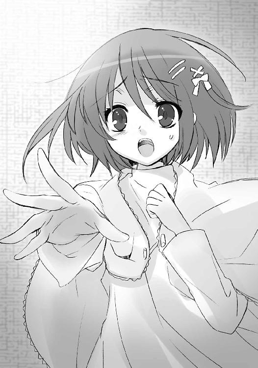
「......手紙は、どうして......？」
シャナを、こうして選んだというのなら、なぜ自分にも手紙を届けたのか。
想いを守る一縷の望みとして、曖昧な答えに救いを求めて、彼女は尋ねた。
が、彼女に向けられた背中は、あくまで硬く、遠く、触れがたい姿のまま。
肩越しに微か、悠二は目線を流し、
「約束、だったからね」
本当に彼が彼らしく在った頃の、優しい声で、答えていた。
「えっ？」
「なにも言わないことだけは絶対にない、全部きちんと話す、って」
「......！」
「言えば危害を及ぼすようなことは、言えない。でも、知らずにいなくなることのないように、知らせられるものだけは知らせよう、そう思ったからだよ」
それは間違いなく、彼の示した誠実さ。
吉田にとって、絶望を齎す誠実さだった。
自分から願った約束の齎した絶望だった。
今度こそ、吉田は顔を落として、蹲った。
壊れて二度と戻らない、玩具の山の中で。
良かれと思い、選んだことが──また。
「坂井君......坂井、君......」
蹲った中で、請うように名前を呼んでも、彼は望む答えなどくれなかった。
返ってくるのは、欲するものとは違う、気遣いの声だけ。
「帰ることができるのなら、帰った方がいい。今はまだ、なにも変えられていないけど......こんなところにいるよりは、その方がずっといい」
悲嘆に憤怒に悔恨、喜悦に愉楽に覇気、様々な想いの詰まった声。
しかし、その中に、吉田の欲する想いは、なかった。
彼が消えても、もう吉田に希望は、なかった。
エピローグ
現在、全世界の外界宿を統括する欧州総本部は、スイスのチューリヒに居を移している。
正確には、舞い戻った、と言うべきであろう。
かつての指導者であった『愁夢の吹き手』ドレル・クーベリックが、二十世紀の中ほどまで当地にあった本部の機能を、一極集中から各地に分散する作業に当たっている最中、襲撃を受けて死に......結果この地に、本部機能が再結集されつつあったからである。
彼とその幕僚団『クーベリックのオーケストラ』は全滅し、結果として外界宿中枢は大混乱に陥ったが、不幸中の幸いと言うべきか、分散されていた本部機能......主にハード面でのそれは、まだ十分残されていた。この管理権限の移譲と再配置の手続きを、権力闘争の一手として頑なに拒んでいた人間の運営者らも遂に折れ、ようやく組織の再生は始まっている。
（始まったばかり、ですけれど）
対立は当然、組織内にわだかまりを残し、未だ上層部の人間とフレイムヘイズの両者には、スムーズな意思疎通は図れていない。組織の混乱によって生じた情報と連絡の齟齬・停滞は、各地の統制を緩め、情勢を把握させ難くしている。
（とはいえ、今までよりはずっとマシ）
実際、双方は組織の建て直しに躍起になっている。もはや、互いを蹴落とし合うような遊びに世界が付き合ってくれなくなった、その余裕がなくなった、と知らされたからである。
上海外界宿総本部の失陥、という重大事によって。
東アジア管区の総力を結集させた、『傀輪会』一世一代の大博打が見事に外れ、総員殲滅という大敗北を喫したのである。結果、東アジアにおける配備状況は、独立した管区である日本にしか纏まった戦力がない、それ以外は全くのがら空き、という惨憺たる有様になっている。
（しかも、戦う相手が［仮装舞踏会］というのではね......）
太古の昔、盟主〝祭礼の蛇〟を失って以来、自ら好んで戦いを起こさなかった彼らの、全く予想外な一斉蜂起......否、この世で最大級の集団による『開戦』という事態は、外界宿というコップの中で争っていた連中に目を覚ます以上の、強烈過ぎる衝撃を与えていた。
（間に合うのかしら、ね）
チューリヒ総本部の奥まった一室、首班たる者の部屋に置かれた、座り慣れない大きな革の椅子（ドレルはこういう部分には遠慮なく金を使った）に身を沈めて、『震威の結い手』ゾフィー・サバリッシュは溜め息を吐いた。
実務者は人間の方が主だったので、組織自体の建て直しは上手く行くだろう。しかし、それにはどうしても時間がかかる。はぐれ者たちの寄り合い所帯だったはずの外界宿も、いつの間にか運営実体や組織構成が肥大・複雑化して、命令一下で大軍を呼集する、という昔のように単純な方法は取れなくなっていた。なにより、
（虞軒や季重がねえ......いい子たちだったのに）
上海の敗北によって、実戦部隊の受けた人的被害は、甚大に過ぎた。集団戦闘に長ける、という貴重な特性を持った中国のフレイムヘイズたちが、ほとんど丸ごと、消滅してしまったのである。まさに今から必要とされる技能であったというのに。
（もっとも、だからこそ大会戦の前に、根こそぎ潰したんでしょうね）
三眼の女怪、鬼謀の〝王〟の高笑いが聞こえてきそうな、まさに苦境である。
（ドゥニやアレックスが生きていれば、こんなとき、いい知恵を貸してくれたんだけど）
この職に祭り上げられて以来、癖となっている悔恨の述懐を、気配で感じ取ったものか、
「総大将が滅入っていては、全軍の士気に関わりますぞ、ゾフィー・サバリッシュ君？」
ベールの額に刺繍された青い星、神器〝ドンナー〟から、彼女に異能の力を与える〝紅世の王〟、〝払の雷剣〟タケミカヅチが諭した。
「ええ、分かっています......いえ、分かっているつもりですよ、タケミカヅチ氏」
答えて、笑う。
「っふふ、少しでも間があると、余計なことを考えてしまう......私も千に満たぬ時の中、ようやく精神的に老いた、ということなのかしらね？」
「君程度で老いたなどと言っては、迎える客人に失礼でしょうな」
取り澄ました口調による、励ましに聞こえない励ましを、ありがたく受け取るゾフィーである。激務と窮状の中で、流石の『肝っ玉母さん』も疲弊していた。
そこに、
チリリン、
とベルが鳴った。
待っていた客人が、やってきたらしい。
「どうぞ、お入りください」
ゾフィーは声をかけ、立ち上がって迎えた。
年季で値打ちの分かる樫材の扉が、がちゃり、と開いて、来客が足音重く入ってくる。本人は子供と言っていい小柄さだったが、とにかく背負った物が大きい。ほとんど身の丈に倍する棒状のなにかである。巻き布で隠されていても、その質量には凡その想像がついた。
来客は、被っていた麦藁帽子を脱いで、顔を晒す。
多くの、特に唇を一線、縦に走る傷痕の痛々しい、十歳前後と見える少年、
「ああ、お久しぶりです、ゾフィー・サバリッシュ」
その左手に絡められた、ガラス球による飾り紐から響く、枯れた老人の声、
「ふむ、一別以来、十......いや、二十年は経っておるかの？」
それぞれが、尋常ならぬ貫禄で、挨拶した。
ゾフィーはこの、最古のフレイムヘイズの一人たる少年に、穏やかな声で返す。
「再会を嬉しく思います──『儀装の駆り手』カムシン、〝不抜の尖嶺〟ベヘモット」
動き出した時は、回り行く。
全てを巻き込み、轢き潰して。
世界は、ただ在る中に、なにかを宿す。
あとがき
はじめての方、はじめまして。
久しぶりの方、お久しぶりです。
高橋弥七郎です。
また皆様のお目にかかることができました。ありがたいことです。
さて本作は、痛快娯楽アクション小説です。今回は、少年の抜けた場所と加わった場所、および、その交差のお話です。次回は、またまた少し変わった本になると思います。
テーマは、描写的には「胎動と激変」、内容的には「そのさき」です。片方にとっては待ち望んでいた、片方にとっては苦しみでしかない、戦いを始めるための戦いが繰り広げられます。
担当の三木さんは、編集者の鑑です。編集部にて徹夜で原稿を書いていると、自分の机で延々仕事をされています。今回も、あのシーン増量について指先に魂込める紙相撲（以下略）。
挿絵のいとうのいぢさんは、巧みに雰囲気を描かれる方です。前巻の、常とは異なる舞台や登場人物たちを、その持てる空気まで見事に表現されました。ご本業始め仕事の押し詰まった多忙の中、この度も拙作への甚大なる御助力をいただけたことに、深く深く感謝いたします。
県名五十音順に、愛知のＳ田さん、Ｕ藤さん、青森のＫ田さん、岩手のＦ澤さん、岡山のＮ村さん、鹿児島のＳ冥さん（どうぞお大事に）、埼玉のＴ橋さん、静岡のＭ浦さん、千葉のＭ原さん、Ｓ々木さん、東京のＮ口さん、Ｙ田さん、長野のＩ戸さん、新潟のＯ竹さん、兵庫のＫ藤さん、Ｍ下さん、福岡のＯ部さん（おめでとうございます）、北海道のＮ岡さん、山口のＳ藤さん、いつも送ってくださる方、初めて送ってくださった方、いずれも大変励みにさせていただいております。どうもありがとうございます。アルファベット一文字は苗字一文字の方で、県が同じ場合はアルファベット順になっています。
当方、いささか事情あって、返信ができません。お手紙をしっかり読ませてもらっていることを右に示すことで、これに代えさせて頂きたいと思います。また今回、運送上の都合から、少々右の表記が遅れてしまった方が幾人かおられます。申し訳ありませんでした。
それでは、今回はこのあたりで。
この本を手に取ってくれた読者の皆様に、無上の感謝を、変わらず。
また皆様のお目にかかれる日がありますように。
二〇〇七年九月 高橋弥七郎
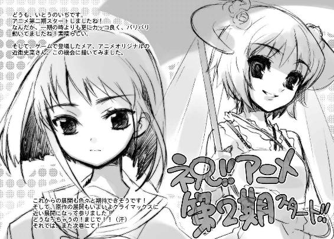
高橋弥七郎
明日を目指す大阪人。豆ちしきその15ー。タイトルロゴは、絵師のいとうのいぢさんやなくて、口絵１ページ目に記名のあるデザイナーの鎌部善彦さんが作成してはるんやでー。電撃文庫では『ブギーポップ』や『キノの旅』も手がけてはる偉い人なんよー。
社会情勢に目をやる作者
いとうのいぢ
こんにちは、いとうです。コレを書いている今、もうすぐアニメシャナの第二期スタートです。フィレスとヨーハンのラブラブっぷりとか早く見たいです（笑）
電撃文庫
灼眼のシャナ
高橋弥七郎
二〇十二年八月十日 配信
発行者 塚田正晃
発行所 株式会社アスキー・メディアワークス
〒一〇二−八五八四 東京都千代田区富士見一−八−十九
(C)2007 YASHICHIRO TAKAHASI／ASCII MEDIA WORKS
本書（電子版）に掲載されているコンテンツ（ソフトウェア／プログラム／データ／情報を含む）の著作権およびその他の権利は、すべて株式会社アスキー・メディアワークスおよび正当な権利を有する第三者に帰属しています。
法律の定めがある場合または権利者の明示的な承諾がある場合を除き、これらのコンテンツを複製・転載、改変・編集、翻案・翻訳、放送・出版、公衆送信（送信可能化を含む）・再配信、販売・頒布、貸与等に使用することはできません。